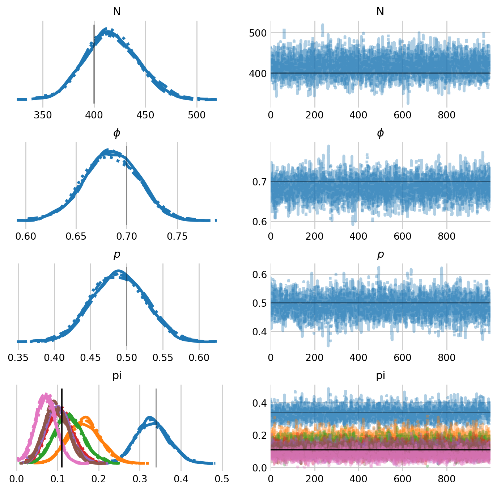
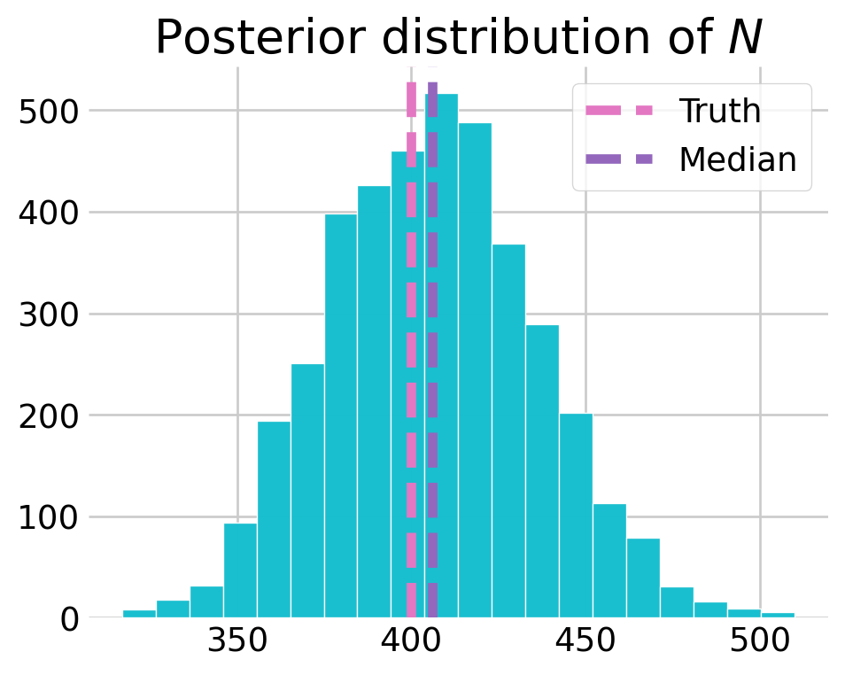
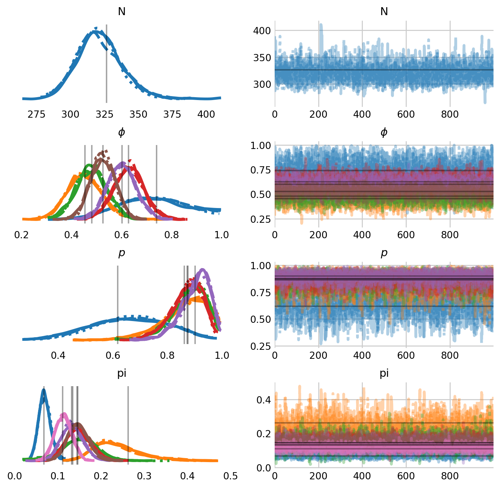
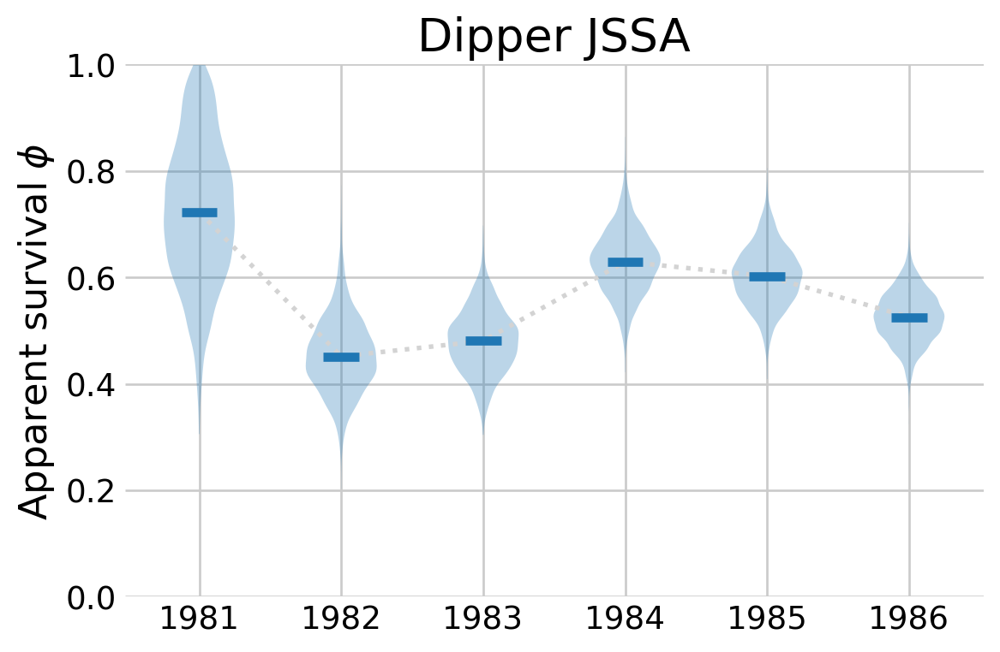

Jolly-Seber
Estimating survival and abundance with Numpyro
Jolly-Seber models are a form of open-population capture-recapture models that estimate survival and abundance. They do so by estimating recruitment, broadly defined, at every time step. Contrast this with Cormack-Jolly-Seber models, which ignore recruitment to focus on just estimating survival.
There are many parameterizations of the Jolly-Seber model. For example, the Jolly-Seber model can be conceived of as a multi-state model with three states: not yet entered, alive, and dead (Kéry and Schaub 2011) (Figure 1). Those who have not yet entered, \(z_{i,t}=0\), can be recruited into the population, e.g., be born or immigrate into it, thus having \(z_{i, t+1}=1\). These individuals may be captured with probability \(p\). Then, these individuals might die or immigrate out of the population, thus having \(z_{i, t+1}=2\). Such individuals can never re-enter the population.
This multi-state version of the Jolly-Seber is essentially the same as the restricted occupancy parameterization (Royle and Dorazio 2008, chap. 10). As such, the \(\gamma\) parameter is a nuisance parameter with no biological meaning (Kéry and Schaub 2011) (Figure 1). It represents “removal entry probabilities” (Kéry and Schaub 2011), i.e., the probability that the individual is removed from the superpopulation at time \(t\), which contains \(M\) individuals. As such, \(\gamma\) tends to grow over time because \(M\) is fixed across all periods. In this case, \(M\) refers to the size of the augmented dataset, meaning that, as in the closed capture-recapture notebook, we will be augmenting the capture histories with all-zero histories.
In this notebook, I will primarily analyze simulated data. This is helpful because, as we will see, these models are sensitive to priors on \(\gamma\). The simulation code is a direct translation of the code from (Kéry and Schaub 2011, chap. 10), although I’ve vectorized the operations and leveraged some NumPy tricks, like accummulate().
%config InlineBackend.figure_format = 'retina'
from jax import random
from jax.scipy.special import expit
from numpyro.contrib.control_flow import scan
from numpyro.infer import NUTS, MCMC, Predictive
import arviz as az
import jax.numpy as jnp
import matplotlib.pyplot as plt
import numpy as np
import numpyro
import numpyro.distributions as dist
import seaborn as sns
# plotting defaults
plt.style.use('fivethirtyeight')
plt.rcParams['axes.facecolor'] = 'white'
plt.rcParams['figure.facecolor'] = 'white'
plt.rcParams['axes.spines.left'] = False
plt.rcParams['axes.spines.right'] = False
plt.rcParams['axes.spines.top'] = False
plt.rcParams['axes.spines.bottom'] = False
sns.set_palette("tab10")
# hyperparameters
RANDOM_SEED = 89
MAX_ABUNDANCE = 500 # size of augmented dipper dataset
# mcmc hyperparameters
CHAIN_COUNT = 4
WARMUP_COUNT = 500
SAMPLE_COUNT = 1000
# simulation hyperparameters
OCCASION_COUNT = 7
SUPERPOPULATION_SIZE = 400
APPARENT_SURVIVAL = 0.7
INITIAL_PI = 0.34
RECAPTURE_RATE = 0.5
M = 1000
# make the labels on arviz plots nicer
labeller = az.labels.MapLabeller(
var_name_map={"psi": r"$\psi$", 'gamma': r"$\gamma$", 'alpha': r'$\alpha$',
'epsilon': r"$\epsilon$", 'p': r"$p$" , 'beta': r'$\beta$',
'phi': r'$\phi$', 'alpha_t': r'$\alpha_t$',}
)
def augment_history(history):
'''Augments a capture histories with all zero histories'''
number_encountered, occasion_count = history.shape
number_to_augment = MAX_ABUNDANCE - number_encountered
all_zero_histories = np.zeros((number_to_augment, occasion_count))
y_augmented = np.vstack([history, all_zero_histories])
return y_augmented.astype(np.int32)
def load_dipper_data():
'''Loads and augments the classic dipper dataset'''
dipper = np.loadtxt('dipper.csv', delimiter=',').astype(int)
y_augmented = augment_history(dipper)
return y_augmented
def sim_js():
"""Simulation code ported from Kery and Schaub (2012), Chapter 10"""
rng = np.random.default_rng(RANDOM_SEED)
interval_count = OCCASION_COUNT - 1
# simulate entry into the population
pi_rest = (1 - INITIAL_PI) / interval_count
pi = np.concatenate([[INITIAL_PI], np.full(interval_count, pi_rest)])
# which occasion did the animal enter in?
entry_matrix = rng.multinomial(n=1, pvals=pi, size=SUPERPOPULATION_SIZE)
entry_occasion = entry_matrix.nonzero()[1]
_, entrant_count = np.unique(entry_occasion, return_counts=True)
# zero if the animal has not yet entered and one after it enters
entry_trajectory = np.maximum.accumulate(entry_matrix, axis=1)
# flip coins for survival between occasions
survival_draws = rng.binomial(
1, APPARENT_SURVIVAL, (SUPERPOPULATION_SIZE, interval_count)
)
# add column such that survival between t and t+1 implies alive at t+1
survival_draws = np.column_stack([np.ones(SUPERPOPULATION_SIZE), survival_draws])
# ensure that the animal survives until it enters
is_yet_to_enter = np.arange(OCCASION_COUNT) <= entry_occasion[:, None]
survival_draws[is_yet_to_enter] = 1
# once the survival_draws flips to zero the remaining row stays 0
survival_trajectory = np.cumprod(survival_draws, axis=1)
# animal has entered AND is still alive
state = entry_trajectory * survival_trajectory
# binary matrix of random possible recaptures
capture = rng.binomial(
1, RECAPTURE_RATE, (SUPERPOPULATION_SIZE, OCCASION_COUNT)
)
# remove the non-detected individuals
capture_history = state * capture
was_captured = capture_history.sum(axis=1) > 0
capture_history = capture_history[was_captured]
# augment the history with nz animals
n, _ = capture_history.shape
nz = M - n
all_zero_history = np.zeros((nz, OCCASION_COUNT))
capture_history = np.vstack([capture_history, all_zero_history]).astype(int)
# return a dict with relevant summary stats
N_t = state.sum(axis=0)
return {
'capture_history': capture_history,
'N_t': N_t,
'B': entrant_count,
}Model definition
The model is very similar to the one described in the dynamic occupancy notebook. The primary difference is that the probabilities for the \(z_{i, j}\) states are encoded via the transition probability matrix (Table 1).
| From ↓ / To → | Not yet entered (\(z=0\)) | Alive (\(z=1\)) | Dead (\(z=2\)) |
|---|---|---|---|
| Not yet entered (\(z=0\)) | \(1 - \gamma_t\) | \(\gamma_t\) | \(0\) |
| Alive (\(z=1\)) | \(0\) | \(\phi\) | \(1 - \phi\) |
| Dead (\(z=2\)) | \(0\) | \(0\) | \(1\) |
Parameterizing the model this way is the easiest way in NumPyro to encode the restriction that dead animals cannot re-enter the population. To match the data-generating process, I allow \(\gamma\) to time vary while keeping \(\phi\) and \(p\) constant across animals and occasions.
The model also shows how to compute derived quantities with NumPyro. Here, I generate estimates for the entry probabilities, \(\pi,\) and the overall inclusion probability, \(\psi\). This helps compare with the data generating process in sim_js(), as well as compare with the Schwarz-Arnason (POPAN) formulation of the model.
One principle difference and the multi-state version described in (Kéry and Schaub 2011, chap. 10) is that we do not include a dummy occasion of all zeros. This is because we can initialize the \(z_{i,0}\) to be \(0\) for all individuals, (see z0 below). Then, we begin the scan starting at the first occasion in our capture history. As such, we estimate transition from this initial state to the first occasion in our capture history. Contrast this with the dynamic occupancy notebook, where we begin the scan at the second season in the detection data.
def js_prior1(capture_history):
super_size, occasion_count = capture_history.shape
phi = numpyro.sample('phi', dist.Uniform(0, 1))
p = numpyro.sample('p', dist.Uniform(0, 1))
with numpyro.plate('intervals', occasion_count):
gamma = numpyro.sample('gamma', dist.Uniform(0, 1))
def transition_and_capture(carry, y_current):
z_previous, t = carry
# transition probability matrix
trans_probs = jnp.array([
[1 - gamma[t], gamma[t], 0.0], # From not yet entered
[ 0.0, phi, 1 - phi], # From alive
[ 0.0, 0.0, 1.0] # From dead
])
with numpyro.plate("animals", super_size, dim=-1):
# transition probabilities depend on current state
mu_z_current = trans_probs[z_previous]
z_current = numpyro.sample(
"state",
dist.Categorical(dist.util.clamp_probs(mu_z_current)),
infer={"enumerate": "parallel"}
)
mu_y_current = jnp.where(z_current == 1, p, 0.0)
numpyro.sample(
"obs",
dist.Bernoulli(dist.util.clamp_probs(mu_y_current)),
obs=y_current
)
return (z_current, t + 1), None
# start everyone in the not yet entered state
state_init = jnp.zeros(super_size, dtype=jnp.int32)
scan(
transition_and_capture,
(state_init, 0),
jnp.swapaxes(capture_history, 0, 1)
)
# calculate derived parameters
qgamma = 1 - gamma
# psi is the overall inclusion probability
cumulative_qgamma = jnp.concatenate([
jnp.array([1.0]),
jnp.cumprod(qgamma[:-1])
])
cprob = gamma * cumulative_qgamma
psi = jnp.sum(cprob)
numpyro.deterministic('psi', psi)
# pi for each occasion
numpyro.deterministic('pi', cprob / psi )The downside of coding the model this way in BUGS is that it takes forever to sample. For example, it took (Kéry and Schaub 2011) 32 minutes to fit this model to these data with BUGS. In NumPyro, however, we totally sidestep this issue with state enumeration. In fact, this version only takes 11 seconds to sample!
sim_results = sim_js()
capture_histories = sim_results['capture_history']
rng_key = random.PRNGKey(RANDOM_SEED)
# specify which sampler you want to use
nuts_kernel = NUTS(js_prior1)
# configure the MCMC run
mcmc = MCMC(nuts_kernel, num_warmup=WARMUP_COUNT, num_samples=SAMPLE_COUNT,
num_chains=CHAIN_COUNT)
# run the MCMC then inspect the output
mcmc.run(rng_key, capture_histories)
mcmc.print_summary()/var/folders/7b/nb0vyhy90mdf30_65xwqzl300000gn/T/ipykernel_38279/1877134885.py:10: UserWarning: There are not enough devices to run parallel chains: expected 4 but got 1. Chains will be drawn sequentially. If you are running MCMC in CPU, consider using `numpyro.set_host_device_count(4)` at the beginning of your program. You can double-check how many devices are available in your system using `jax.local_device_count()`.
mcmc = MCMC(nuts_kernel, num_warmup=WARMUP_COUNT, num_samples=SAMPLE_COUNT,
0%| | 0/1500 [00:00<?, ?it/s]warmup: 0%| | 1/1500 [00:01<29:14, 1.17s/it, 1 steps of size 2.34e+00. acc. prob=0.00]warmup: 1%| | 10/1500 [00:01<02:21, 10.54it/s, 63 steps of size 3.21e-02. acc. prob=0.62]warmup: 1%| | 16/1500 [00:01<01:53, 13.09it/s, 31 steps of size 5.71e-02. acc. prob=0.70]warmup: 1%|▏ | 22/1500 [00:01<01:18, 18.78it/s, 31 steps of size 1.12e-01. acc. prob=0.73]warmup: 2%|▏ | 28/1500 [00:01<00:59, 24.59it/s, 15 steps of size 9.40e-02. acc. prob=0.74]warmup: 2%|▏ | 35/1500 [00:01<00:45, 32.48it/s, 31 steps of size 7.97e-02. acc. prob=0.75]warmup: 3%|▎ | 43/1500 [00:02<00:35, 40.85it/s, 31 steps of size 6.44e-02. acc. prob=0.75]warmup: 3%|▎ | 50/1500 [00:02<00:31, 46.37it/s, 15 steps of size 1.41e-01. acc. prob=0.76]warmup: 4%|▍ | 59/1500 [00:02<00:25, 56.51it/s, 31 steps of size 4.24e-02. acc. prob=0.76]warmup: 4%|▍ | 67/1500 [00:02<00:24, 59.31it/s, 7 steps of size 9.31e-02. acc. prob=0.77] warmup: 5%|▌ | 76/1500 [00:02<00:21, 65.89it/s, 15 steps of size 8.92e-02. acc. prob=0.77]warmup: 6%|▌ | 87/1500 [00:02<00:18, 76.34it/s, 15 steps of size 8.71e-02. acc. prob=0.77]warmup: 7%|▋ | 98/1500 [00:02<00:17, 81.31it/s, 31 steps of size 7.16e-02. acc. prob=0.77]warmup: 7%|▋ | 107/1500 [00:02<00:17, 80.62it/s, 7 steps of size 4.20e-01. acc. prob=0.77]warmup: 8%|▊ | 118/1500 [00:02<00:15, 88.01it/s, 7 steps of size 1.24e+00. acc. prob=0.78]warmup: 9%|▊ | 128/1500 [00:03<00:15, 89.77it/s, 15 steps of size 5.51e-01. acc. prob=0.78]warmup: 9%|▉ | 141/1500 [00:03<00:13, 97.91it/s, 15 steps of size 4.84e-01. acc. prob=0.78]warmup: 10%|█ | 156/1500 [00:03<00:12, 110.93it/s, 7 steps of size 2.72e-01. acc. prob=0.78]warmup: 11%|█ | 168/1500 [00:03<00:11, 112.97it/s, 7 steps of size 2.48e-01. acc. prob=0.78]warmup: 12%|█▏ | 180/1500 [00:03<00:12, 101.88it/s, 7 steps of size 5.29e-01. acc. prob=0.78]warmup: 13%|█▎ | 192/1500 [00:03<00:12, 103.96it/s, 15 steps of size 3.89e-01. acc. prob=0.78]warmup: 14%|█▎ | 203/1500 [00:03<00:12, 104.03it/s, 15 steps of size 3.06e-01. acc. prob=0.78]warmup: 15%|█▍ | 218/1500 [00:03<00:11, 110.42it/s, 31 steps of size 2.23e-01. acc. prob=0.78]warmup: 15%|█▌ | 230/1500 [00:03<00:11, 106.79it/s, 7 steps of size 6.11e-01. acc. prob=0.78] warmup: 16%|█▌ | 241/1500 [00:04<00:11, 105.16it/s, 7 steps of size 4.42e-01. acc. prob=0.78]warmup: 17%|█▋ | 254/1500 [00:04<00:11, 107.27it/s, 63 steps of size 1.08e-01. acc. prob=0.78]warmup: 18%|█▊ | 265/1500 [00:04<00:11, 104.93it/s, 15 steps of size 2.56e-01. acc. prob=0.78]warmup: 18%|█▊ | 276/1500 [00:04<00:12, 96.12it/s, 31 steps of size 3.07e-01. acc. prob=0.78] warmup: 19%|█▉ | 286/1500 [00:04<00:13, 87.37it/s, 7 steps of size 5.41e-01. acc. prob=0.78] warmup: 20%|█▉ | 295/1500 [00:04<00:15, 78.82it/s, 15 steps of size 2.29e-01. acc. prob=0.78]warmup: 21%|██ | 308/1500 [00:04<00:13, 90.30it/s, 7 steps of size 3.01e-01. acc. prob=0.78] warmup: 21%|██▏ | 320/1500 [00:04<00:12, 96.44it/s, 7 steps of size 5.10e-01. acc. prob=0.78]warmup: 22%|██▏ | 330/1500 [00:05<00:12, 92.40it/s, 7 steps of size 3.93e-01. acc. prob=0.78]warmup: 23%|██▎ | 344/1500 [00:05<00:11, 103.89it/s, 7 steps of size 6.94e-01. acc. prob=0.78]warmup: 24%|██▎ | 355/1500 [00:05<00:11, 100.98it/s, 7 steps of size 3.87e-01. acc. prob=0.78]warmup: 24%|██▍ | 367/1500 [00:05<00:10, 104.69it/s, 7 steps of size 4.20e-01. acc. prob=0.78]warmup: 25%|██▌ | 380/1500 [00:05<00:10, 111.37it/s, 11 steps of size 4.43e-01. acc. prob=0.79]warmup: 26%|██▌ | 392/1500 [00:05<00:09, 112.11it/s, 7 steps of size 3.50e-01. acc. prob=0.79] warmup: 27%|██▋ | 406/1500 [00:05<00:09, 119.93it/s, 7 steps of size 3.63e-01. acc. prob=0.79]warmup: 28%|██▊ | 419/1500 [00:05<00:08, 121.27it/s, 7 steps of size 5.44e-01. acc. prob=0.79]warmup: 29%|██▉ | 432/1500 [00:05<00:09, 112.92it/s, 7 steps of size 5.87e-01. acc. prob=0.79]warmup: 30%|██▉ | 444/1500 [00:06<00:09, 112.32it/s, 7 steps of size 6.00e-01. acc. prob=0.79]warmup: 31%|███ | 460/1500 [00:06<00:08, 124.68it/s, 3 steps of size 1.07e-01. acc. prob=0.78]warmup: 32%|███▏ | 473/1500 [00:06<00:08, 120.18it/s, 7 steps of size 9.29e-01. acc. prob=0.79]warmup: 32%|███▏ | 486/1500 [00:06<00:10, 92.87it/s, 31 steps of size 4.26e-01. acc. prob=0.79]warmup: 33%|███▎ | 499/1500 [00:06<00:09, 100.41it/s, 15 steps of size 4.58e-01. acc. prob=0.79]sample: 34%|███▍ | 512/1500 [00:06<00:09, 104.84it/s, 15 steps of size 4.16e-01. acc. prob=0.91]sample: 35%|███▌ | 528/1500 [00:06<00:08, 116.23it/s, 15 steps of size 4.16e-01. acc. prob=0.93]sample: 36%|███▌ | 541/1500 [00:06<00:08, 114.48it/s, 7 steps of size 4.16e-01. acc. prob=0.93] sample: 37%|███▋ | 553/1500 [00:07<00:08, 112.45it/s, 7 steps of size 4.16e-01. acc. prob=0.93]sample: 38%|███▊ | 565/1500 [00:07<00:08, 110.99it/s, 15 steps of size 4.16e-01. acc. prob=0.93]sample: 38%|███▊ | 577/1500 [00:07<00:08, 108.09it/s, 15 steps of size 4.16e-01. acc. prob=0.93]sample: 39%|███▉ | 588/1500 [00:07<00:08, 106.97it/s, 7 steps of size 4.16e-01. acc. prob=0.93] sample: 40%|████ | 603/1500 [00:07<00:07, 117.72it/s, 7 steps of size 4.16e-01. acc. prob=0.93]sample: 41%|████ | 617/1500 [00:07<00:07, 120.50it/s, 15 steps of size 4.16e-01. acc. prob=0.93]sample: 42%|████▏ | 631/1500 [00:07<00:06, 124.60it/s, 7 steps of size 4.16e-01. acc. prob=0.93] sample: 43%|████▎ | 644/1500 [00:07<00:07, 120.08it/s, 7 steps of size 4.16e-01. acc. prob=0.93]sample: 44%|████▍ | 657/1500 [00:07<00:07, 117.07it/s, 7 steps of size 4.16e-01. acc. prob=0.93]sample: 45%|████▍ | 669/1500 [00:08<00:07, 114.26it/s, 15 steps of size 4.16e-01. acc. prob=0.93]sample: 45%|████▌ | 681/1500 [00:08<00:07, 112.25it/s, 7 steps of size 4.16e-01. acc. prob=0.93] sample: 46%|████▌ | 693/1500 [00:08<00:07, 112.80it/s, 15 steps of size 4.16e-01. acc. prob=0.93]sample: 47%|████▋ | 705/1500 [00:08<00:07, 113.20it/s, 7 steps of size 4.16e-01. acc. prob=0.93] sample: 48%|████▊ | 718/1500 [00:08<00:06, 114.35it/s, 15 steps of size 4.16e-01. acc. prob=0.93]sample: 49%|████▊ | 730/1500 [00:08<00:06, 112.24it/s, 7 steps of size 4.16e-01. acc. prob=0.93] sample: 49%|████▉ | 742/1500 [00:08<00:06, 110.80it/s, 7 steps of size 4.16e-01. acc. prob=0.93]sample: 50%|█████ | 754/1500 [00:08<00:06, 109.87it/s, 7 steps of size 4.16e-01. acc. prob=0.93]sample: 51%|█████ | 766/1500 [00:08<00:06, 111.13it/s, 7 steps of size 4.16e-01. acc. prob=0.93]sample: 52%|█████▏ | 780/1500 [00:08<00:06, 118.01it/s, 7 steps of size 4.16e-01. acc. prob=0.93]sample: 53%|█████▎ | 794/1500 [00:09<00:05, 122.97it/s, 7 steps of size 4.16e-01. acc. prob=0.93]sample: 54%|█████▍ | 807/1500 [00:09<00:05, 116.84it/s, 15 steps of size 4.16e-01. acc. prob=0.93]sample: 55%|█████▍ | 819/1500 [00:09<00:05, 114.00it/s, 7 steps of size 4.16e-01. acc. prob=0.93] sample: 55%|█████▌ | 831/1500 [00:09<00:06, 108.27it/s, 15 steps of size 4.16e-01. acc. prob=0.93]sample: 56%|█████▌ | 842/1500 [00:09<00:06, 105.28it/s, 15 steps of size 4.16e-01. acc. prob=0.93]sample: 57%|█████▋ | 854/1500 [00:09<00:06, 105.94it/s, 15 steps of size 4.16e-01. acc. prob=0.93]sample: 58%|█████▊ | 866/1500 [00:09<00:05, 108.33it/s, 23 steps of size 4.16e-01. acc. prob=0.93]sample: 58%|█████▊ | 877/1500 [00:09<00:05, 107.08it/s, 15 steps of size 4.16e-01. acc. prob=0.93]sample: 59%|█████▉ | 892/1500 [00:09<00:05, 118.17it/s, 15 steps of size 4.16e-01. acc. prob=0.93]sample: 60%|██████ | 907/1500 [00:10<00:04, 123.85it/s, 15 steps of size 4.16e-01. acc. prob=0.93]sample: 61%|██████▏ | 920/1500 [00:10<00:04, 117.50it/s, 15 steps of size 4.16e-01. acc. prob=0.93]sample: 62%|██████▏ | 933/1500 [00:10<00:04, 119.40it/s, 7 steps of size 4.16e-01. acc. prob=0.93] sample: 63%|██████▎ | 946/1500 [00:10<00:05, 108.01it/s, 15 steps of size 4.16e-01. acc. prob=0.93]sample: 64%|██████▍ | 958/1500 [00:10<00:05, 107.87it/s, 7 steps of size 4.16e-01. acc. prob=0.93] sample: 65%|██████▍ | 969/1500 [00:10<00:04, 107.75it/s, 7 steps of size 4.16e-01. acc. prob=0.93]sample: 65%|██████▌ | 980/1500 [00:10<00:04, 106.75it/s, 7 steps of size 4.16e-01. acc. prob=0.93]sample: 66%|██████▋ | 994/1500 [00:10<00:04, 112.76it/s, 15 steps of size 4.16e-01. acc. prob=0.93]sample: 67%|██████▋ | 1006/1500 [00:11<00:04, 113.19it/s, 7 steps of size 4.16e-01. acc. prob=0.93]sample: 68%|██████▊ | 1018/1500 [00:11<00:04, 113.46it/s, 7 steps of size 4.16e-01. acc. prob=0.93]sample: 69%|██████▊ | 1030/1500 [00:11<00:04, 109.63it/s, 15 steps of size 4.16e-01. acc. prob=0.93]sample: 70%|██████▉ | 1043/1500 [00:11<00:04, 111.89it/s, 15 steps of size 4.16e-01. acc. prob=0.93]sample: 70%|███████ | 1055/1500 [00:11<00:03, 111.57it/s, 7 steps of size 4.16e-01. acc. prob=0.93] sample: 71%|███████ | 1067/1500 [00:11<00:03, 113.39it/s, 15 steps of size 4.16e-01. acc. prob=0.93]sample: 72%|███████▏ | 1079/1500 [00:11<00:03, 107.62it/s, 15 steps of size 4.16e-01. acc. prob=0.93]sample: 73%|███████▎ | 1090/1500 [00:11<00:03, 106.62it/s, 7 steps of size 4.16e-01. acc. prob=0.93] sample: 74%|███████▎ | 1103/1500 [00:11<00:03, 109.66it/s, 15 steps of size 4.16e-01. acc. prob=0.93]sample: 74%|███████▍ | 1115/1500 [00:12<00:03, 109.94it/s, 15 steps of size 4.16e-01. acc. prob=0.93]sample: 75%|███████▌ | 1129/1500 [00:12<00:03, 114.92it/s, 15 steps of size 4.16e-01. acc. prob=0.93]sample: 76%|███████▋ | 1144/1500 [00:12<00:02, 123.64it/s, 15 steps of size 4.16e-01. acc. prob=0.93]sample: 77%|███████▋ | 1157/1500 [00:12<00:02, 124.87it/s, 7 steps of size 4.16e-01. acc. prob=0.93] sample: 78%|███████▊ | 1170/1500 [00:12<00:02, 122.45it/s, 7 steps of size 4.16e-01. acc. prob=0.93]sample: 79%|███████▉ | 1183/1500 [00:12<00:02, 118.61it/s, 7 steps of size 4.16e-01. acc. prob=0.93]sample: 80%|███████▉ | 1195/1500 [00:12<00:02, 117.38it/s, 7 steps of size 4.16e-01. acc. prob=0.93]sample: 81%|████████ | 1209/1500 [00:12<00:02, 122.44it/s, 7 steps of size 4.16e-01. acc. prob=0.93]sample: 81%|████████▏ | 1222/1500 [00:12<00:02, 119.77it/s, 7 steps of size 4.16e-01. acc. prob=0.93]sample: 82%|████████▏ | 1236/1500 [00:12<00:02, 124.23it/s, 15 steps of size 4.16e-01. acc. prob=0.93]sample: 83%|████████▎ | 1249/1500 [00:13<00:02, 117.75it/s, 15 steps of size 4.16e-01. acc. prob=0.93]sample: 84%|████████▍ | 1262/1500 [00:13<00:02, 117.62it/s, 15 steps of size 4.16e-01. acc. prob=0.93]sample: 85%|████████▍ | 1274/1500 [00:13<00:02, 112.59it/s, 7 steps of size 4.16e-01. acc. prob=0.93] sample: 86%|████████▌ | 1287/1500 [00:13<00:01, 115.82it/s, 15 steps of size 4.16e-01. acc. prob=0.93]sample: 87%|████████▋ | 1301/1500 [00:13<00:01, 119.13it/s, 15 steps of size 4.16e-01. acc. prob=0.93]sample: 88%|████████▊ | 1315/1500 [00:13<00:01, 121.40it/s, 15 steps of size 4.16e-01. acc. prob=0.93]sample: 89%|████████▊ | 1328/1500 [00:13<00:01, 122.31it/s, 7 steps of size 4.16e-01. acc. prob=0.93] sample: 89%|████████▉ | 1341/1500 [00:13<00:01, 114.53it/s, 7 steps of size 4.16e-01. acc. prob=0.93]sample: 90%|█████████ | 1353/1500 [00:13<00:01, 114.48it/s, 7 steps of size 4.16e-01. acc. prob=0.93]sample: 91%|█████████ | 1367/1500 [00:14<00:01, 118.08it/s, 15 steps of size 4.16e-01. acc. prob=0.93]sample: 92%|█████████▏| 1379/1500 [00:14<00:01, 118.03it/s, 15 steps of size 4.16e-01. acc. prob=0.93]sample: 93%|█████████▎| 1394/1500 [00:14<00:00, 125.92it/s, 15 steps of size 4.16e-01. acc. prob=0.93]sample: 94%|█████████▍| 1407/1500 [00:14<00:00, 118.86it/s, 7 steps of size 4.16e-01. acc. prob=0.93] sample: 95%|█████████▍| 1420/1500 [00:14<00:00, 120.44it/s, 15 steps of size 4.16e-01. acc. prob=0.93]sample: 96%|█████████▌| 1433/1500 [00:14<00:00, 113.38it/s, 7 steps of size 4.16e-01. acc. prob=0.93] sample: 96%|█████████▋| 1446/1500 [00:14<00:00, 114.40it/s, 15 steps of size 4.16e-01. acc. prob=0.93]sample: 97%|█████████▋| 1460/1500 [00:14<00:00, 120.11it/s, 7 steps of size 4.16e-01. acc. prob=0.93] sample: 98%|█████████▊| 1473/1500 [00:14<00:00, 119.25it/s, 15 steps of size 4.16e-01. acc. prob=0.93]sample: 99%|█████████▉| 1489/1500 [00:15<00:00, 128.48it/s, 7 steps of size 4.16e-01. acc. prob=0.93] sample: 100%|██████████| 1500/1500 [00:15<00:00, 98.80it/s, 7 steps of size 4.16e-01. acc. prob=0.93]
0%| | 0/1500 [00:00<?, ?it/s]warmup: 0%| | 6/1500 [00:00<00:59, 25.16it/s, 255 steps of size 4.03e-02. acc. prob=0.50]warmup: 1%| | 9/1500 [00:00<01:12, 20.63it/s, 63 steps of size 1.76e-01. acc. prob=0.66] warmup: 1%| | 12/1500 [00:00<01:35, 15.65it/s, 255 steps of size 4.99e-02. acc. prob=0.66]warmup: 1%| | 16/1500 [00:00<01:37, 15.21it/s, 255 steps of size 2.74e-02. acc. prob=0.68]warmup: 1%| | 18/1500 [00:01<01:32, 15.96it/s, 63 steps of size 9.47e-02. acc. prob=0.71] warmup: 1%|▏ | 21/1500 [00:01<01:31, 16.16it/s, 191 steps of size 3.49e-02. acc. prob=0.71]warmup: 2%|▏ | 27/1500 [00:01<00:59, 24.88it/s, 7 steps of size 2.20e-02. acc. prob=0.72] warmup: 2%|▏ | 31/1500 [00:01<00:52, 28.02it/s, 15 steps of size 3.92e-02. acc. prob=0.73]warmup: 3%|▎ | 40/1500 [00:01<00:34, 41.87it/s, 31 steps of size 5.66e-02. acc. prob=0.75]warmup: 3%|▎ | 50/1500 [00:01<00:26, 55.54it/s, 15 steps of size 1.47e-01. acc. prob=0.76]warmup: 4%|▍ | 58/1500 [00:01<00:23, 60.16it/s, 15 steps of size 1.08e-01. acc. prob=0.77]warmup: 5%|▍ | 70/1500 [00:01<00:19, 73.75it/s, 15 steps of size 1.37e-01. acc. prob=0.77]warmup: 6%|▌ | 83/1500 [00:01<00:16, 87.84it/s, 7 steps of size 6.58e-02. acc. prob=0.77] warmup: 6%|▌ | 93/1500 [00:02<00:15, 88.78it/s, 15 steps of size 1.24e-01. acc. prob=0.77]warmup: 7%|▋ | 103/1500 [00:02<00:18, 75.88it/s, 31 steps of size 2.77e-01. acc. prob=0.77]warmup: 7%|▋ | 112/1500 [00:02<00:26, 53.27it/s, 47 steps of size 3.57e-02. acc. prob=0.77]warmup: 8%|▊ | 119/1500 [00:02<00:34, 40.54it/s, 15 steps of size 4.71e-01. acc. prob=0.78]warmup: 8%|▊ | 125/1500 [00:03<00:35, 38.58it/s, 31 steps of size 5.20e-02. acc. prob=0.77]warmup: 9%|▊ | 130/1500 [00:03<00:36, 37.37it/s, 7 steps of size 4.16e-01. acc. prob=0.78] warmup: 9%|▉ | 135/1500 [00:03<00:34, 39.02it/s, 15 steps of size 3.93e-01. acc. prob=0.78]warmup: 9%|▉ | 142/1500 [00:03<00:32, 42.25it/s, 63 steps of size 2.54e-01. acc. prob=0.78]warmup: 10%|▉ | 147/1500 [00:03<00:31, 43.07it/s, 63 steps of size 2.05e-01. acc. prob=0.78]warmup: 10%|█ | 155/1500 [00:03<00:26, 50.90it/s, 31 steps of size 2.62e-01. acc. prob=0.78]warmup: 11%|█ | 162/1500 [00:03<00:25, 53.26it/s, 31 steps of size 2.66e-01. acc. prob=0.78]warmup: 11%|█▏ | 172/1500 [00:03<00:20, 64.93it/s, 7 steps of size 5.77e-01. acc. prob=0.78] warmup: 12%|█▏ | 184/1500 [00:04<00:16, 78.41it/s, 7 steps of size 8.95e-01. acc. prob=0.78]warmup: 13%|█▎ | 194/1500 [00:04<00:15, 84.26it/s, 15 steps of size 3.41e-01. acc. prob=0.78]warmup: 14%|█▍ | 207/1500 [00:04<00:13, 95.87it/s, 7 steps of size 5.98e-01. acc. prob=0.78] warmup: 15%|█▍ | 218/1500 [00:04<00:13, 98.26it/s, 7 steps of size 7.35e-01. acc. prob=0.78]warmup: 15%|█▌ | 232/1500 [00:04<00:11, 108.98it/s, 7 steps of size 1.04e+00. acc. prob=0.78]warmup: 17%|█▋ | 249/1500 [00:04<00:09, 126.08it/s, 7 steps of size 4.10e-01. acc. prob=0.78]warmup: 17%|█▋ | 262/1500 [00:04<00:11, 108.25it/s, 31 steps of size 4.91e-01. acc. prob=0.78]warmup: 18%|█▊ | 274/1500 [00:04<00:13, 91.28it/s, 7 steps of size 1.48e-01. acc. prob=0.78] warmup: 19%|█▉ | 284/1500 [00:04<00:13, 91.30it/s, 3 steps of size 1.39e+00. acc. prob=0.78]warmup: 20%|█▉ | 295/1500 [00:05<00:12, 93.13it/s, 15 steps of size 2.48e-01. acc. prob=0.78]warmup: 21%|██ | 308/1500 [00:05<00:11, 102.15it/s, 3 steps of size 5.17e-01. acc. prob=0.78]warmup: 21%|██▏ | 321/1500 [00:05<00:10, 109.19it/s, 7 steps of size 8.38e-01. acc. prob=0.78]warmup: 22%|██▏ | 333/1500 [00:05<00:10, 107.73it/s, 15 steps of size 2.74e-01. acc. prob=0.78]warmup: 23%|██▎ | 346/1500 [00:05<00:10, 112.44it/s, 7 steps of size 8.95e-01. acc. prob=0.79] warmup: 24%|██▍ | 360/1500 [00:05<00:09, 119.98it/s, 15 steps of size 4.98e-01. acc. prob=0.78]warmup: 25%|██▌ | 375/1500 [00:05<00:08, 128.42it/s, 7 steps of size 3.62e-01. acc. prob=0.78] warmup: 26%|██▌ | 390/1500 [00:05<00:08, 133.40it/s, 15 steps of size 3.54e-01. acc. prob=0.79]warmup: 27%|██▋ | 404/1500 [00:05<00:08, 131.28it/s, 7 steps of size 6.28e-01. acc. prob=0.79] warmup: 28%|██▊ | 422/1500 [00:06<00:07, 143.39it/s, 7 steps of size 5.67e-01. acc. prob=0.79]warmup: 29%|██▉ | 437/1500 [00:06<00:07, 135.07it/s, 7 steps of size 5.74e-01. acc. prob=0.79]warmup: 30%|███ | 451/1500 [00:06<00:07, 132.50it/s, 7 steps of size 5.43e+00. acc. prob=0.79]warmup: 31%|███ | 465/1500 [00:06<00:10, 96.78it/s, 31 steps of size 2.28e-01. acc. prob=0.79]warmup: 32%|███▏ | 477/1500 [00:06<00:11, 90.25it/s, 7 steps of size 4.72e-01. acc. prob=0.79] warmup: 33%|███▎ | 488/1500 [00:06<00:12, 80.89it/s, 7 steps of size 6.38e-01. acc. prob=0.79]warmup: 33%|███▎ | 497/1500 [00:06<00:12, 82.76it/s, 31 steps of size 2.69e-01. acc. prob=0.79]sample: 34%|███▍ | 508/1500 [00:07<00:11, 86.69it/s, 15 steps of size 3.53e-01. acc. prob=0.92]sample: 35%|███▍ | 521/1500 [00:07<00:10, 96.98it/s, 3 steps of size 3.53e-01. acc. prob=0.91] sample: 36%|███▌ | 533/1500 [00:07<00:09, 101.59it/s, 7 steps of size 3.53e-01. acc. prob=0.92]sample: 36%|███▋ | 546/1500 [00:07<00:08, 107.90it/s, 15 steps of size 3.53e-01. acc. prob=0.91]sample: 37%|███▋ | 558/1500 [00:07<00:08, 109.66it/s, 15 steps of size 3.53e-01. acc. prob=0.91]sample: 38%|███▊ | 570/1500 [00:07<00:08, 107.13it/s, 15 steps of size 3.53e-01. acc. prob=0.92]sample: 39%|███▉ | 583/1500 [00:07<00:08, 112.02it/s, 15 steps of size 3.53e-01. acc. prob=0.92]sample: 40%|███▉ | 597/1500 [00:07<00:07, 116.44it/s, 15 steps of size 3.53e-01. acc. prob=0.92]sample: 41%|████ | 609/1500 [00:07<00:07, 111.71it/s, 7 steps of size 3.53e-01. acc. prob=0.92] sample: 41%|████▏ | 621/1500 [00:08<00:07, 110.29it/s, 7 steps of size 3.53e-01. acc. prob=0.92]sample: 42%|████▏ | 633/1500 [00:08<00:07, 109.41it/s, 15 steps of size 3.53e-01. acc. prob=0.92]sample: 43%|████▎ | 644/1500 [00:08<00:08, 104.14it/s, 15 steps of size 3.53e-01. acc. prob=0.92]sample: 44%|████▎ | 655/1500 [00:08<00:08, 102.36it/s, 15 steps of size 3.53e-01. acc. prob=0.92]sample: 44%|████▍ | 666/1500 [00:08<00:08, 103.76it/s, 15 steps of size 3.53e-01. acc. prob=0.92]sample: 45%|████▌ | 678/1500 [00:08<00:07, 104.88it/s, 15 steps of size 3.53e-01. acc. prob=0.92]sample: 46%|████▌ | 692/1500 [00:08<00:07, 114.46it/s, 7 steps of size 3.53e-01. acc. prob=0.92] sample: 47%|████▋ | 704/1500 [00:08<00:07, 104.65it/s, 15 steps of size 3.53e-01. acc. prob=0.92]sample: 48%|████▊ | 716/1500 [00:08<00:07, 106.32it/s, 15 steps of size 3.53e-01. acc. prob=0.92]sample: 48%|████▊ | 727/1500 [00:09<00:07, 105.68it/s, 15 steps of size 3.53e-01. acc. prob=0.92]sample: 49%|████▉ | 740/1500 [00:09<00:06, 109.04it/s, 15 steps of size 3.53e-01. acc. prob=0.92]sample: 50%|█████ | 754/1500 [00:09<00:06, 114.36it/s, 15 steps of size 3.53e-01. acc. prob=0.92]sample: 51%|█████ | 766/1500 [00:09<00:06, 106.60it/s, 15 steps of size 3.53e-01. acc. prob=0.92]sample: 52%|█████▏ | 777/1500 [00:09<00:06, 104.07it/s, 15 steps of size 3.53e-01. acc. prob=0.92]sample: 53%|█████▎ | 791/1500 [00:09<00:06, 110.70it/s, 15 steps of size 3.53e-01. acc. prob=0.92]sample: 54%|█████▎ | 803/1500 [00:09<00:06, 107.84it/s, 7 steps of size 3.53e-01. acc. prob=0.92] sample: 54%|█████▍ | 815/1500 [00:09<00:06, 107.68it/s, 15 steps of size 3.53e-01. acc. prob=0.92]sample: 55%|█████▌ | 827/1500 [00:09<00:06, 107.61it/s, 15 steps of size 3.53e-01. acc. prob=0.92]sample: 56%|█████▌ | 839/1500 [00:10<00:06, 109.54it/s, 7 steps of size 3.53e-01. acc. prob=0.92] sample: 57%|█████▋ | 850/1500 [00:10<00:06, 107.96it/s, 7 steps of size 3.53e-01. acc. prob=0.92]sample: 57%|█████▋ | 861/1500 [00:10<00:05, 106.80it/s, 15 steps of size 3.53e-01. acc. prob=0.92]sample: 58%|█████▊ | 872/1500 [00:10<00:05, 105.94it/s, 7 steps of size 3.53e-01. acc. prob=0.92] sample: 59%|█████▉ | 883/1500 [00:10<00:06, 101.61it/s, 15 steps of size 3.53e-01. acc. prob=0.92]sample: 60%|█████▉ | 894/1500 [00:10<00:05, 101.40it/s, 7 steps of size 3.53e-01. acc. prob=0.92] sample: 60%|██████ | 905/1500 [00:10<00:05, 100.24it/s, 15 steps of size 3.53e-01. acc. prob=0.92]sample: 61%|██████ | 917/1500 [00:10<00:05, 104.18it/s, 15 steps of size 3.53e-01. acc. prob=0.92]sample: 62%|██████▏ | 930/1500 [00:10<00:05, 104.34it/s, 31 steps of size 3.53e-01. acc. prob=0.92]sample: 63%|██████▎ | 943/1500 [00:11<00:05, 108.11it/s, 15 steps of size 3.53e-01. acc. prob=0.92]sample: 64%|██████▎ | 955/1500 [00:11<00:04, 109.85it/s, 15 steps of size 3.53e-01. acc. prob=0.92]sample: 64%|██████▍ | 967/1500 [00:11<00:04, 110.07it/s, 11 steps of size 3.53e-01. acc. prob=0.92]sample: 65%|██████▌ | 981/1500 [00:11<00:04, 115.00it/s, 15 steps of size 3.53e-01. acc. prob=0.92]sample: 66%|██████▌ | 993/1500 [00:11<00:04, 114.68it/s, 7 steps of size 3.53e-01. acc. prob=0.92] sample: 67%|██████▋ | 1005/1500 [00:11<00:04, 112.39it/s, 7 steps of size 3.53e-01. acc. prob=0.92]sample: 68%|██████▊ | 1017/1500 [00:11<00:04, 112.88it/s, 7 steps of size 3.53e-01. acc. prob=0.92]sample: 69%|██████▊ | 1029/1500 [00:11<00:04, 111.21it/s, 15 steps of size 3.53e-01. acc. prob=0.92]sample: 69%|██████▉ | 1041/1500 [00:11<00:04, 108.02it/s, 7 steps of size 3.53e-01. acc. prob=0.92] sample: 70%|███████ | 1052/1500 [00:12<00:04, 106.87it/s, 7 steps of size 3.53e-01. acc. prob=0.92]sample: 71%|███████ | 1064/1500 [00:12<00:04, 107.87it/s, 15 steps of size 3.53e-01. acc. prob=0.92]sample: 72%|███████▏ | 1075/1500 [00:12<00:03, 106.78it/s, 7 steps of size 3.53e-01. acc. prob=0.92] sample: 72%|███████▏ | 1086/1500 [00:12<00:03, 105.89it/s, 7 steps of size 3.53e-01. acc. prob=0.92]sample: 73%|███████▎ | 1097/1500 [00:12<00:03, 105.42it/s, 15 steps of size 3.53e-01. acc. prob=0.92]sample: 74%|███████▍ | 1108/1500 [00:12<00:03, 105.00it/s, 15 steps of size 3.53e-01. acc. prob=0.92]sample: 75%|███████▍ | 1119/1500 [00:12<00:03, 102.74it/s, 15 steps of size 3.53e-01. acc. prob=0.92]sample: 75%|███████▌ | 1130/1500 [00:12<00:03, 99.50it/s, 15 steps of size 3.53e-01. acc. prob=0.92] sample: 76%|███████▌ | 1142/1500 [00:12<00:03, 103.61it/s, 7 steps of size 3.53e-01. acc. prob=0.92]sample: 77%|███████▋ | 1153/1500 [00:13<00:03, 104.71it/s, 7 steps of size 3.53e-01. acc. prob=0.92]sample: 78%|███████▊ | 1164/1500 [00:13<00:03, 104.58it/s, 7 steps of size 3.53e-01. acc. prob=0.92]sample: 78%|███████▊ | 1175/1500 [00:13<00:03, 103.43it/s, 15 steps of size 3.53e-01. acc. prob=0.92]sample: 79%|███████▉ | 1189/1500 [00:13<00:02, 112.62it/s, 7 steps of size 3.53e-01. acc. prob=0.92] sample: 80%|████████ | 1201/1500 [00:13<00:02, 110.96it/s, 15 steps of size 3.53e-01. acc. prob=0.92]sample: 81%|████████ | 1213/1500 [00:13<00:02, 109.97it/s, 15 steps of size 3.53e-01. acc. prob=0.92]sample: 82%|████████▏ | 1225/1500 [00:13<00:02, 108.19it/s, 7 steps of size 3.53e-01. acc. prob=0.92] sample: 82%|████████▏ | 1236/1500 [00:13<00:02, 107.89it/s, 7 steps of size 3.53e-01. acc. prob=0.92]sample: 83%|████████▎ | 1249/1500 [00:13<00:02, 112.73it/s, 15 steps of size 3.53e-01. acc. prob=0.92]sample: 84%|████████▍ | 1261/1500 [00:14<00:02, 107.19it/s, 15 steps of size 3.53e-01. acc. prob=0.92]sample: 85%|████████▍ | 1274/1500 [00:14<00:02, 112.11it/s, 15 steps of size 3.53e-01. acc. prob=0.92]sample: 86%|████████▌ | 1286/1500 [00:14<00:01, 110.73it/s, 7 steps of size 3.53e-01. acc. prob=0.92] sample: 87%|████████▋ | 1298/1500 [00:14<00:01, 105.93it/s, 15 steps of size 3.53e-01. acc. prob=0.92]sample: 87%|████████▋ | 1310/1500 [00:14<00:01, 108.24it/s, 7 steps of size 3.53e-01. acc. prob=0.92] sample: 88%|████████▊ | 1322/1500 [00:14<00:01, 109.96it/s, 7 steps of size 3.53e-01. acc. prob=0.92]sample: 89%|████████▉ | 1334/1500 [00:14<00:01, 111.24it/s, 7 steps of size 3.53e-01. acc. prob=0.92]sample: 90%|████████▉ | 1346/1500 [00:14<00:01, 110.08it/s, 15 steps of size 3.53e-01. acc. prob=0.92]sample: 91%|█████████ | 1359/1500 [00:14<00:01, 114.22it/s, 7 steps of size 3.53e-01. acc. prob=0.92] sample: 91%|█████████▏| 1371/1500 [00:15<00:01, 108.28it/s, 15 steps of size 3.53e-01. acc. prob=0.92]sample: 92%|█████████▏| 1383/1500 [00:15<00:01, 108.10it/s, 15 steps of size 3.53e-01. acc. prob=0.92]sample: 93%|█████████▎| 1397/1500 [00:15<00:00, 115.66it/s, 7 steps of size 3.53e-01. acc. prob=0.92] sample: 94%|█████████▍| 1409/1500 [00:15<00:00, 115.28it/s, 15 steps of size 3.53e-01. acc. prob=0.92]sample: 95%|█████████▍| 1421/1500 [00:15<00:00, 114.94it/s, 7 steps of size 3.53e-01. acc. prob=0.92] sample: 96%|█████████▌| 1433/1500 [00:15<00:00, 110.68it/s, 7 steps of size 3.53e-01. acc. prob=0.92]sample: 96%|█████████▋| 1445/1500 [00:15<00:00, 111.89it/s, 15 steps of size 3.53e-01. acc. prob=0.92]sample: 97%|█████████▋| 1457/1500 [00:15<00:00, 112.58it/s, 7 steps of size 3.53e-01. acc. prob=0.92] sample: 98%|█████████▊| 1469/1500 [00:15<00:00, 105.13it/s, 7 steps of size 3.53e-01. acc. prob=0.92]sample: 99%|█████████▉| 1482/1500 [00:15<00:00, 110.58it/s, 7 steps of size 3.53e-01. acc. prob=0.92]sample: 100%|█████████▉| 1495/1500 [00:16<00:00, 113.45it/s, 15 steps of size 3.53e-01. acc. prob=0.92]sample: 100%|██████████| 1500/1500 [00:16<00:00, 92.95it/s, 7 steps of size 3.53e-01. acc. prob=0.92]
0%| | 0/1500 [00:00<?, ?it/s]warmup: 0%| | 6/1500 [00:00<00:33, 44.77it/s, 63 steps of size 3.82e-02. acc. prob=0.50]warmup: 1%| | 16/1500 [00:00<00:25, 57.82it/s, 63 steps of size 2.51e-02. acc. prob=0.68]warmup: 2%|▏ | 24/1500 [00:00<00:24, 61.26it/s, 31 steps of size 1.11e-01. acc. prob=0.73]warmup: 2%|▏ | 31/1500 [00:00<00:23, 62.77it/s, 63 steps of size 3.83e-02. acc. prob=0.73]warmup: 3%|▎ | 40/1500 [00:00<00:20, 70.49it/s, 7 steps of size 3.37e-02. acc. prob=0.74] warmup: 3%|▎ | 48/1500 [00:00<00:20, 71.66it/s, 7 steps of size 1.96e-02. acc. prob=0.75]warmup: 4%|▎ | 56/1500 [00:00<00:23, 62.29it/s, 31 steps of size 9.35e-02. acc. prob=0.76]warmup: 4%|▍ | 63/1500 [00:01<00:24, 59.85it/s, 7 steps of size 8.59e-02. acc. prob=0.77] warmup: 5%|▍ | 72/1500 [00:01<00:21, 67.01it/s, 15 steps of size 1.17e-01. acc. prob=0.77]warmup: 5%|▌ | 81/1500 [00:01<00:19, 72.43it/s, 15 steps of size 7.16e-02. acc. prob=0.77]warmup: 6%|▌ | 91/1500 [00:01<00:18, 75.87it/s, 31 steps of size 7.85e-02. acc. prob=0.77]warmup: 7%|▋ | 99/1500 [00:01<00:18, 76.81it/s, 7 steps of size 1.04e-01. acc. prob=0.77] warmup: 7%|▋ | 107/1500 [00:01<00:18, 76.24it/s, 7 steps of size 2.80e-01. acc. prob=0.77]warmup: 8%|▊ | 117/1500 [00:01<00:17, 79.24it/s, 31 steps of size 2.33e-01. acc. prob=0.77]warmup: 9%|▊ | 128/1500 [00:01<00:16, 83.30it/s, 31 steps of size 2.17e-01. acc. prob=0.78]warmup: 9%|▉ | 140/1500 [00:01<00:14, 92.06it/s, 7 steps of size 1.11e+00. acc. prob=0.78] warmup: 10%|█ | 150/1500 [00:02<00:15, 87.84it/s, 7 steps of size 5.98e-01. acc. prob=0.78]warmup: 11%|█ | 161/1500 [00:02<00:16, 83.53it/s, 63 steps of size 1.68e-01. acc. prob=0.78]warmup: 11%|█▏ | 170/1500 [00:02<00:15, 83.66it/s, 31 steps of size 1.94e-01. acc. prob=0.78]warmup: 12%|█▏ | 181/1500 [00:02<00:14, 89.96it/s, 7 steps of size 7.31e-01. acc. prob=0.78] warmup: 13%|█▎ | 191/1500 [00:02<00:14, 90.29it/s, 15 steps of size 5.14e-01. acc. prob=0.78]warmup: 13%|█▎ | 202/1500 [00:02<00:14, 91.70it/s, 31 steps of size 2.56e-01. acc. prob=0.78]warmup: 14%|█▍ | 214/1500 [00:02<00:13, 98.08it/s, 15 steps of size 5.47e-01. acc. prob=0.78]warmup: 15%|█▌ | 232/1500 [00:02<00:10, 118.17it/s, 15 steps of size 4.26e-01. acc. prob=0.78]warmup: 16%|█▋ | 247/1500 [00:02<00:09, 127.07it/s, 7 steps of size 2.30e-01. acc. prob=0.78] warmup: 17%|█▋ | 262/1500 [00:03<00:09, 132.93it/s, 7 steps of size 2.20e-01. acc. prob=0.78]warmup: 18%|█▊ | 276/1500 [00:03<00:11, 108.86it/s, 7 steps of size 1.22e+00. acc. prob=0.78]warmup: 19%|█▉ | 288/1500 [00:03<00:11, 101.90it/s, 15 steps of size 5.01e-01. acc. prob=0.78]warmup: 20%|█▉ | 299/1500 [00:03<00:12, 100.03it/s, 11 steps of size 2.21e-01. acc. prob=0.78]warmup: 21%|██ | 313/1500 [00:03<00:10, 109.86it/s, 3 steps of size 2.62e-01. acc. prob=0.78] warmup: 22%|██▏ | 327/1500 [00:03<00:10, 114.64it/s, 15 steps of size 6.13e-01. acc. prob=0.78]warmup: 23%|██▎ | 340/1500 [00:03<00:09, 118.36it/s, 7 steps of size 6.39e-01. acc. prob=0.78] warmup: 24%|██▎ | 353/1500 [00:03<00:09, 120.09it/s, 15 steps of size 7.64e-01. acc. prob=0.79]warmup: 24%|██▍ | 366/1500 [00:04<00:10, 109.33it/s, 15 steps of size 4.27e-01. acc. prob=0.78]warmup: 25%|██▌ | 378/1500 [00:04<00:10, 111.62it/s, 15 steps of size 6.14e-01. acc. prob=0.79]warmup: 26%|██▌ | 393/1500 [00:04<00:09, 122.03it/s, 7 steps of size 6.90e-01. acc. prob=0.79] warmup: 27%|██▋ | 410/1500 [00:04<00:08, 130.98it/s, 15 steps of size 3.94e-01. acc. prob=0.79]warmup: 28%|██▊ | 427/1500 [00:04<00:07, 139.76it/s, 7 steps of size 4.64e-01. acc. prob=0.79] warmup: 30%|██▉ | 445/1500 [00:04<00:07, 150.48it/s, 7 steps of size 4.41e-01. acc. prob=0.79]warmup: 31%|███ | 462/1500 [00:04<00:07, 146.78it/s, 31 steps of size 1.84e-01. acc. prob=0.79]warmup: 32%|███▏ | 477/1500 [00:04<00:08, 127.46it/s, 7 steps of size 6.52e-01. acc. prob=0.79] warmup: 33%|███▎ | 491/1500 [00:04<00:08, 125.63it/s, 5 steps of size 2.36e-01. acc. prob=0.79]sample: 34%|███▍ | 507/1500 [00:05<00:07, 134.01it/s, 7 steps of size 4.31e-01. acc. prob=0.91]sample: 35%|███▍ | 521/1500 [00:05<00:07, 131.85it/s, 7 steps of size 4.31e-01. acc. prob=0.87]sample: 36%|███▌ | 538/1500 [00:05<00:06, 141.34it/s, 7 steps of size 4.31e-01. acc. prob=0.89]sample: 37%|███▋ | 553/1500 [00:05<00:06, 139.85it/s, 7 steps of size 4.31e-01. acc. prob=0.90]sample: 38%|███▊ | 568/1500 [00:05<00:06, 134.11it/s, 7 steps of size 4.31e-01. acc. prob=0.90]sample: 39%|███▉ | 582/1500 [00:05<00:06, 135.50it/s, 7 steps of size 4.31e-01. acc. prob=0.90]sample: 40%|███▉ | 599/1500 [00:05<00:06, 143.12it/s, 7 steps of size 4.31e-01. acc. prob=0.91]sample: 41%|████ | 614/1500 [00:05<00:06, 143.65it/s, 7 steps of size 4.31e-01. acc. prob=0.90]sample: 42%|████▏ | 629/1500 [00:05<00:06, 141.54it/s, 7 steps of size 4.31e-01. acc. prob=0.90]sample: 43%|████▎ | 644/1500 [00:05<00:06, 142.66it/s, 7 steps of size 4.31e-01. acc. prob=0.90]sample: 44%|████▍ | 659/1500 [00:06<00:05, 140.86it/s, 7 steps of size 4.31e-01. acc. prob=0.90]sample: 45%|████▌ | 676/1500 [00:06<00:05, 146.82it/s, 7 steps of size 4.31e-01. acc. prob=0.90]sample: 46%|████▌ | 691/1500 [00:06<00:05, 143.48it/s, 7 steps of size 4.31e-01. acc. prob=0.89]sample: 47%|████▋ | 706/1500 [00:06<00:05, 132.64it/s, 7 steps of size 4.31e-01. acc. prob=0.89]sample: 48%|████▊ | 721/1500 [00:06<00:05, 133.73it/s, 15 steps of size 4.31e-01. acc. prob=0.89]sample: 49%|████▉ | 736/1500 [00:06<00:05, 136.86it/s, 15 steps of size 4.31e-01. acc. prob=0.89]sample: 50%|█████ | 753/1500 [00:06<00:05, 144.01it/s, 7 steps of size 4.31e-01. acc. prob=0.89] sample: 51%|█████ | 768/1500 [00:06<00:05, 144.50it/s, 7 steps of size 4.31e-01. acc. prob=0.89]sample: 52%|█████▏ | 783/1500 [00:06<00:04, 144.79it/s, 7 steps of size 4.31e-01. acc. prob=0.90]sample: 53%|█████▎ | 798/1500 [00:07<00:04, 143.53it/s, 15 steps of size 4.31e-01. acc. prob=0.90]sample: 54%|█████▍ | 813/1500 [00:07<00:04, 141.40it/s, 7 steps of size 4.31e-01. acc. prob=0.90] sample: 55%|█████▌ | 830/1500 [00:07<00:04, 145.96it/s, 15 steps of size 4.31e-01. acc. prob=0.90]sample: 56%|█████▋ | 845/1500 [00:07<00:04, 145.83it/s, 7 steps of size 4.31e-01. acc. prob=0.90] sample: 58%|█████▊ | 863/1500 [00:07<00:04, 153.53it/s, 7 steps of size 4.31e-01. acc. prob=0.90]sample: 59%|█████▊ | 879/1500 [00:07<00:04, 143.36it/s, 7 steps of size 4.31e-01. acc. prob=0.90]sample: 60%|█████▉ | 894/1500 [00:07<00:04, 143.84it/s, 15 steps of size 4.31e-01. acc. prob=0.90]sample: 61%|██████ | 909/1500 [00:07<00:04, 138.99it/s, 7 steps of size 4.31e-01. acc. prob=0.90] sample: 62%|██████▏ | 925/1500 [00:07<00:04, 143.52it/s, 7 steps of size 4.31e-01. acc. prob=0.90]sample: 63%|██████▎ | 941/1500 [00:08<00:03, 146.94it/s, 7 steps of size 4.31e-01. acc. prob=0.90]sample: 64%|██████▍ | 958/1500 [00:08<00:03, 148.48it/s, 15 steps of size 4.31e-01. acc. prob=0.90]sample: 65%|██████▍ | 973/1500 [00:08<00:03, 146.24it/s, 7 steps of size 4.31e-01. acc. prob=0.90] sample: 66%|██████▌ | 988/1500 [00:08<00:03, 143.17it/s, 7 steps of size 4.31e-01. acc. prob=0.90]sample: 67%|██████▋ | 1007/1500 [00:08<00:03, 154.66it/s, 7 steps of size 4.31e-01. acc. prob=0.90]sample: 68%|██████▊ | 1023/1500 [00:08<00:03, 154.99it/s, 7 steps of size 4.31e-01. acc. prob=0.90]sample: 69%|██████▉ | 1039/1500 [00:08<00:02, 155.22it/s, 7 steps of size 4.31e-01. acc. prob=0.90]sample: 70%|███████ | 1055/1500 [00:08<00:02, 152.56it/s, 15 steps of size 4.31e-01. acc. prob=0.90]sample: 71%|███████▏ | 1071/1500 [00:08<00:03, 142.74it/s, 7 steps of size 4.31e-01. acc. prob=0.90] sample: 72%|███████▏ | 1086/1500 [00:09<00:02, 140.90it/s, 7 steps of size 4.31e-01. acc. prob=0.90]sample: 73%|███████▎ | 1101/1500 [00:09<00:02, 142.42it/s, 15 steps of size 4.31e-01. acc. prob=0.90]sample: 74%|███████▍ | 1116/1500 [00:09<00:02, 140.77it/s, 15 steps of size 4.31e-01. acc. prob=0.90]sample: 75%|███████▌ | 1132/1500 [00:09<00:02, 144.01it/s, 7 steps of size 4.31e-01. acc. prob=0.90] sample: 76%|███████▋ | 1147/1500 [00:09<00:02, 138.06it/s, 15 steps of size 4.31e-01. acc. prob=0.90]sample: 77%|███████▋ | 1161/1500 [00:09<00:02, 135.63it/s, 7 steps of size 4.31e-01. acc. prob=0.90] sample: 78%|███████▊ | 1176/1500 [00:09<00:02, 138.33it/s, 7 steps of size 4.31e-01. acc. prob=0.90]sample: 79%|███████▉ | 1192/1500 [00:09<00:02, 143.34it/s, 7 steps of size 4.31e-01. acc. prob=0.90]sample: 80%|████████ | 1207/1500 [00:09<00:02, 141.24it/s, 7 steps of size 4.31e-01. acc. prob=0.90]sample: 81%|████████▏ | 1222/1500 [00:10<00:02, 137.01it/s, 7 steps of size 4.31e-01. acc. prob=0.90]sample: 82%|████████▏ | 1236/1500 [00:10<00:02, 127.08it/s, 15 steps of size 4.31e-01. acc. prob=0.90]sample: 83%|████████▎ | 1250/1500 [00:10<00:01, 129.10it/s, 15 steps of size 4.31e-01. acc. prob=0.90]sample: 84%|████████▍ | 1264/1500 [00:10<00:01, 130.62it/s, 15 steps of size 4.31e-01. acc. prob=0.90]sample: 85%|████████▌ | 1278/1500 [00:10<00:01, 131.78it/s, 7 steps of size 4.31e-01. acc. prob=0.90] sample: 86%|████████▌ | 1293/1500 [00:10<00:01, 135.74it/s, 7 steps of size 4.31e-01. acc. prob=0.90]sample: 87%|████████▋ | 1307/1500 [00:10<00:01, 134.37it/s, 7 steps of size 4.31e-01. acc. prob=0.90]sample: 88%|████████▊ | 1324/1500 [00:10<00:01, 142.40it/s, 7 steps of size 4.31e-01. acc. prob=0.90]sample: 89%|████████▉ | 1339/1500 [00:10<00:01, 139.26it/s, 7 steps of size 4.31e-01. acc. prob=0.90]sample: 90%|█████████ | 1354/1500 [00:11<00:01, 138.47it/s, 15 steps of size 4.31e-01. acc. prob=0.90]sample: 91%|█████████ | 1368/1500 [00:11<00:00, 138.65it/s, 7 steps of size 4.31e-01. acc. prob=0.90] sample: 92%|█████████▏| 1385/1500 [00:11<00:00, 146.80it/s, 7 steps of size 4.31e-01. acc. prob=0.90]sample: 93%|█████████▎| 1400/1500 [00:11<00:00, 132.38it/s, 15 steps of size 4.31e-01. acc. prob=0.90]sample: 94%|█████████▍| 1414/1500 [00:11<00:00, 134.14it/s, 3 steps of size 4.31e-01. acc. prob=0.90] sample: 95%|█████████▌| 1430/1500 [00:11<00:00, 140.28it/s, 7 steps of size 4.31e-01. acc. prob=0.90]sample: 96%|█████████▋| 1445/1500 [00:11<00:00, 137.79it/s, 7 steps of size 4.31e-01. acc. prob=0.90]sample: 97%|█████████▋| 1459/1500 [00:11<00:00, 135.58it/s, 15 steps of size 4.31e-01. acc. prob=0.90]sample: 98%|█████████▊| 1473/1500 [00:11<00:00, 131.62it/s, 7 steps of size 4.31e-01. acc. prob=0.90] sample: 99%|█████████▉| 1490/1500 [00:12<00:00, 141.55it/s, 7 steps of size 4.31e-01. acc. prob=0.90]sample: 100%|██████████| 1500/1500 [00:12<00:00, 124.17it/s, 7 steps of size 4.31e-01. acc. prob=0.90]
0%| | 0/1500 [00:00<?, ?it/s]warmup: 0%| | 7/1500 [00:00<00:27, 55.26it/s, 63 steps of size 6.85e-02. acc. prob=0.57]warmup: 1%| | 13/1500 [00:00<00:48, 30.85it/s, 63 steps of size 3.75e-02. acc. prob=0.66]warmup: 1%|▏ | 22/1500 [00:00<00:30, 47.77it/s, 15 steps of size 1.17e-01. acc. prob=0.73]warmup: 2%|▏ | 29/1500 [00:00<00:27, 53.40it/s, 31 steps of size 7.89e-02. acc. prob=0.74]warmup: 3%|▎ | 39/1500 [00:00<00:23, 62.64it/s, 31 steps of size 5.77e-02. acc. prob=0.75]warmup: 3%|▎ | 49/1500 [00:00<00:20, 72.41it/s, 15 steps of size 5.41e-02. acc. prob=0.76]warmup: 4%|▍ | 57/1500 [00:00<00:21, 67.99it/s, 15 steps of size 5.85e-02. acc. prob=0.76]warmup: 4%|▍ | 66/1500 [00:01<00:19, 73.72it/s, 15 steps of size 1.08e-01. acc. prob=0.77]warmup: 5%|▍ | 74/1500 [00:01<00:19, 74.57it/s, 15 steps of size 9.78e-02. acc. prob=0.77]warmup: 6%|▌ | 85/1500 [00:01<00:17, 80.20it/s, 31 steps of size 5.26e-02. acc. prob=0.77]warmup: 6%|▋ | 95/1500 [00:01<00:16, 84.14it/s, 23 steps of size 6.74e-02. acc. prob=0.77]warmup: 7%|▋ | 104/1500 [00:01<00:19, 70.14it/s, 15 steps of size 4.17e-01. acc. prob=0.77]warmup: 8%|▊ | 116/1500 [00:01<00:17, 81.24it/s, 7 steps of size 7.96e-01. acc. prob=0.78] warmup: 8%|▊ | 125/1500 [00:01<00:16, 82.66it/s, 7 steps of size 5.17e-01. acc. prob=0.78]warmup: 9%|▉ | 138/1500 [00:01<00:14, 94.92it/s, 3 steps of size 1.38e-01. acc. prob=0.78]warmup: 10%|▉ | 148/1500 [00:01<00:14, 93.80it/s, 15 steps of size 5.24e-01. acc. prob=0.78]warmup: 11%|█ | 162/1500 [00:02<00:14, 93.17it/s, 63 steps of size 1.17e-01. acc. prob=0.77]warmup: 11%|█▏ | 172/1500 [00:02<00:14, 88.96it/s, 15 steps of size 7.24e-01. acc. prob=0.78]warmup: 12%|█▏ | 183/1500 [00:02<00:14, 89.92it/s, 31 steps of size 2.21e-01. acc. prob=0.78]warmup: 13%|█▎ | 194/1500 [00:02<00:13, 94.69it/s, 7 steps of size 4.39e-01. acc. prob=0.78] warmup: 14%|█▎ | 206/1500 [00:02<00:12, 100.83it/s, 15 steps of size 4.44e-01. acc. prob=0.78]warmup: 15%|█▍ | 222/1500 [00:02<00:11, 114.55it/s, 15 steps of size 5.55e-01. acc. prob=0.78]warmup: 16%|█▌ | 235/1500 [00:02<00:10, 116.16it/s, 15 steps of size 6.57e-01. acc. prob=0.78]warmup: 17%|█▋ | 248/1500 [00:02<00:10, 118.38it/s, 7 steps of size 1.13e+00. acc. prob=0.79] warmup: 17%|█▋ | 260/1500 [00:03<00:10, 114.40it/s, 7 steps of size 7.20e-01. acc. prob=0.78]warmup: 18%|█▊ | 276/1500 [00:03<00:09, 123.96it/s, 15 steps of size 2.69e-01. acc. prob=0.78]warmup: 19%|█▉ | 289/1500 [00:03<00:10, 119.49it/s, 15 steps of size 3.28e-01. acc. prob=0.78]warmup: 20%|██ | 302/1500 [00:03<00:10, 115.60it/s, 15 steps of size 5.09e-01. acc. prob=0.78]warmup: 21%|██ | 316/1500 [00:03<00:09, 121.45it/s, 7 steps of size 1.17e+00. acc. prob=0.78] warmup: 22%|██▏ | 330/1500 [00:03<00:09, 123.78it/s, 15 steps of size 3.98e-01. acc. prob=0.78]warmup: 23%|██▎ | 343/1500 [00:03<00:09, 117.55it/s, 15 steps of size 2.02e-01. acc. prob=0.78]warmup: 24%|██▍ | 357/1500 [00:03<00:09, 123.40it/s, 15 steps of size 3.61e-01. acc. prob=0.78]warmup: 25%|██▍ | 373/1500 [00:03<00:08, 132.56it/s, 7 steps of size 2.22e-01. acc. prob=0.78] warmup: 26%|██▌ | 387/1500 [00:04<00:08, 130.67it/s, 7 steps of size 5.19e-01. acc. prob=0.79]warmup: 27%|██▋ | 401/1500 [00:04<00:08, 131.76it/s, 7 steps of size 4.64e-01. acc. prob=0.79]warmup: 28%|██▊ | 419/1500 [00:04<00:07, 144.68it/s, 7 steps of size 4.25e-01. acc. prob=0.79]warmup: 29%|██▉ | 434/1500 [00:04<00:07, 143.44it/s, 7 steps of size 5.20e-01. acc. prob=0.79]warmup: 30%|███ | 453/1500 [00:04<00:06, 154.24it/s, 7 steps of size 3.68e-01. acc. prob=0.79]warmup: 31%|███▏ | 469/1500 [00:04<00:07, 143.88it/s, 7 steps of size 6.06e-01. acc. prob=0.79]warmup: 32%|███▏ | 484/1500 [00:04<00:08, 127.00it/s, 7 steps of size 6.04e-01. acc. prob=0.79]warmup: 33%|███▎ | 498/1500 [00:04<00:07, 125.77it/s, 7 steps of size 3.29e-01. acc. prob=0.79]sample: 34%|███▍ | 515/1500 [00:04<00:07, 135.30it/s, 7 steps of size 4.29e-01. acc. prob=0.95]sample: 35%|███▌ | 529/1500 [00:05<00:07, 131.72it/s, 7 steps of size 4.29e-01. acc. prob=0.94]sample: 36%|███▋ | 545/1500 [00:05<00:06, 138.35it/s, 7 steps of size 4.29e-01. acc. prob=0.93]sample: 37%|███▋ | 560/1500 [00:05<00:06, 137.88it/s, 7 steps of size 4.29e-01. acc. prob=0.91]sample: 38%|███▊ | 577/1500 [00:05<00:06, 145.95it/s, 7 steps of size 4.29e-01. acc. prob=0.91]sample: 39%|███▉ | 592/1500 [00:05<00:06, 140.53it/s, 7 steps of size 4.29e-01. acc. prob=0.91]sample: 40%|████ | 607/1500 [00:05<00:06, 135.71it/s, 19 steps of size 4.29e-01. acc. prob=0.91]sample: 41%|████▏ | 622/1500 [00:05<00:06, 138.34it/s, 7 steps of size 4.29e-01. acc. prob=0.91] sample: 42%|████▏ | 636/1500 [00:05<00:06, 134.64it/s, 15 steps of size 4.29e-01. acc. prob=0.91]sample: 43%|████▎ | 650/1500 [00:05<00:06, 132.21it/s, 7 steps of size 4.29e-01. acc. prob=0.91] sample: 44%|████▍ | 664/1500 [00:06<00:06, 129.32it/s, 7 steps of size 4.29e-01. acc. prob=0.91]sample: 45%|████▌ | 681/1500 [00:06<00:05, 139.76it/s, 7 steps of size 4.29e-01. acc. prob=0.91]sample: 46%|████▋ | 696/1500 [00:06<00:05, 141.31it/s, 7 steps of size 4.29e-01. acc. prob=0.90]sample: 47%|████▋ | 711/1500 [00:06<00:05, 142.41it/s, 7 steps of size 4.29e-01. acc. prob=0.91]sample: 49%|████▊ | 728/1500 [00:06<00:05, 149.44it/s, 7 steps of size 4.29e-01. acc. prob=0.91]sample: 50%|████▉ | 744/1500 [00:06<00:05, 147.96it/s, 15 steps of size 4.29e-01. acc. prob=0.91]sample: 51%|█████ | 759/1500 [00:06<00:05, 147.09it/s, 7 steps of size 4.29e-01. acc. prob=0.91] sample: 52%|█████▏ | 776/1500 [00:06<00:04, 151.07it/s, 7 steps of size 4.29e-01. acc. prob=0.90]sample: 53%|█████▎ | 793/1500 [00:06<00:04, 153.98it/s, 7 steps of size 4.29e-01. acc. prob=0.91]sample: 54%|█████▍ | 810/1500 [00:06<00:04, 157.73it/s, 7 steps of size 4.29e-01. acc. prob=0.90]sample: 55%|█████▌ | 826/1500 [00:07<00:04, 152.83it/s, 7 steps of size 4.29e-01. acc. prob=0.90]sample: 56%|█████▌ | 842/1500 [00:07<00:04, 149.21it/s, 7 steps of size 4.29e-01. acc. prob=0.90]sample: 57%|█████▋ | 857/1500 [00:07<00:04, 147.94it/s, 7 steps of size 4.29e-01. acc. prob=0.90]sample: 58%|█████▊ | 872/1500 [00:07<00:04, 132.14it/s, 15 steps of size 4.29e-01. acc. prob=0.90]sample: 59%|█████▉ | 886/1500 [00:07<00:04, 124.07it/s, 31 steps of size 4.29e-01. acc. prob=0.90]sample: 60%|██████ | 902/1500 [00:07<00:04, 132.46it/s, 15 steps of size 4.29e-01. acc. prob=0.90]sample: 61%|██████ | 916/1500 [00:07<00:04, 132.86it/s, 7 steps of size 4.29e-01. acc. prob=0.90] sample: 62%|██████▏ | 931/1500 [00:07<00:04, 135.94it/s, 7 steps of size 4.29e-01. acc. prob=0.91]sample: 63%|██████▎ | 945/1500 [00:08<00:04, 134.29it/s, 23 steps of size 4.29e-01. acc. prob=0.90]sample: 64%|██████▍ | 961/1500 [00:08<00:03, 140.47it/s, 7 steps of size 4.29e-01. acc. prob=0.91] sample: 65%|██████▌ | 976/1500 [00:08<00:03, 141.76it/s, 7 steps of size 4.29e-01. acc. prob=0.91]sample: 66%|██████▌ | 991/1500 [00:08<00:03, 140.09it/s, 7 steps of size 4.29e-01. acc. prob=0.91]sample: 67%|██████▋ | 1006/1500 [00:08<00:03, 141.42it/s, 7 steps of size 4.29e-01. acc. prob=0.90]sample: 68%|██████▊ | 1021/1500 [00:08<00:03, 142.33it/s, 3 steps of size 4.29e-01. acc. prob=0.90]sample: 69%|██████▉ | 1037/1500 [00:08<00:03, 146.34it/s, 7 steps of size 4.29e-01. acc. prob=0.91]sample: 70%|███████ | 1055/1500 [00:08<00:02, 154.01it/s, 7 steps of size 4.29e-01. acc. prob=0.91]sample: 71%|███████▏ | 1071/1500 [00:08<00:02, 143.34it/s, 7 steps of size 4.29e-01. acc. prob=0.91]sample: 72%|███████▏ | 1086/1500 [00:08<00:02, 145.13it/s, 7 steps of size 4.29e-01. acc. prob=0.91]sample: 73%|███████▎ | 1101/1500 [00:09<00:02, 144.82it/s, 7 steps of size 4.29e-01. acc. prob=0.91]sample: 74%|███████▍ | 1116/1500 [00:09<00:02, 132.44it/s, 7 steps of size 4.29e-01. acc. prob=0.91]sample: 75%|███████▌ | 1131/1500 [00:09<00:02, 135.72it/s, 7 steps of size 4.29e-01. acc. prob=0.91]sample: 76%|███████▋ | 1146/1500 [00:09<00:02, 138.17it/s, 15 steps of size 4.29e-01. acc. prob=0.90]sample: 77%|███████▋ | 1162/1500 [00:09<00:02, 143.15it/s, 7 steps of size 4.29e-01. acc. prob=0.91] sample: 79%|███████▊ | 1179/1500 [00:09<00:02, 149.84it/s, 7 steps of size 4.29e-01. acc. prob=0.90]sample: 80%|███████▉ | 1195/1500 [00:09<00:02, 146.04it/s, 7 steps of size 4.29e-01. acc. prob=0.90]sample: 81%|████████ | 1210/1500 [00:09<00:01, 145.65it/s, 15 steps of size 4.29e-01. acc. prob=0.90]sample: 82%|████████▏ | 1225/1500 [00:09<00:02, 135.27it/s, 15 steps of size 4.29e-01. acc. prob=0.90]sample: 83%|████████▎ | 1239/1500 [00:10<00:02, 129.28it/s, 7 steps of size 4.29e-01. acc. prob=0.90] sample: 84%|████████▎ | 1253/1500 [00:10<00:01, 126.29it/s, 7 steps of size 4.29e-01. acc. prob=0.90]sample: 85%|████████▍ | 1268/1500 [00:10<00:01, 131.55it/s, 7 steps of size 4.29e-01. acc. prob=0.90]sample: 85%|████████▌ | 1282/1500 [00:10<00:01, 133.70it/s, 7 steps of size 4.29e-01. acc. prob=0.90]sample: 86%|████████▋ | 1296/1500 [00:10<00:01, 126.89it/s, 15 steps of size 4.29e-01. acc. prob=0.90]sample: 87%|████████▋ | 1309/1500 [00:10<00:01, 124.91it/s, 7 steps of size 4.29e-01. acc. prob=0.90] sample: 88%|████████▊ | 1324/1500 [00:10<00:01, 131.74it/s, 7 steps of size 4.29e-01. acc. prob=0.90]sample: 89%|████████▉ | 1338/1500 [00:10<00:01, 129.82it/s, 7 steps of size 4.29e-01. acc. prob=0.90]sample: 90%|█████████ | 1352/1500 [00:10<00:01, 132.50it/s, 15 steps of size 4.29e-01. acc. prob=0.90]sample: 91%|█████████ | 1368/1500 [00:11<00:00, 139.28it/s, 7 steps of size 4.29e-01. acc. prob=0.90] sample: 92%|█████████▏| 1382/1500 [00:11<00:00, 137.65it/s, 7 steps of size 4.29e-01. acc. prob=0.90]sample: 93%|█████████▎| 1396/1500 [00:11<00:00, 135.35it/s, 7 steps of size 4.29e-01. acc. prob=0.90]sample: 94%|█████████▍| 1412/1500 [00:11<00:00, 141.30it/s, 7 steps of size 4.29e-01. acc. prob=0.90]sample: 95%|█████████▌| 1427/1500 [00:11<00:00, 135.84it/s, 7 steps of size 4.29e-01. acc. prob=0.90]sample: 96%|█████████▌| 1442/1500 [00:11<00:00, 138.35it/s, 7 steps of size 4.29e-01. acc. prob=0.90]sample: 97%|█████████▋| 1457/1500 [00:11<00:00, 140.19it/s, 7 steps of size 4.29e-01. acc. prob=0.90]sample: 98%|█████████▊| 1472/1500 [00:11<00:00, 141.56it/s, 7 steps of size 4.29e-01. acc. prob=0.90]sample: 99%|█████████▉| 1487/1500 [00:11<00:00, 142.60it/s, 7 steps of size 4.29e-01. acc. prob=0.90]sample: 100%|██████████| 1500/1500 [00:12<00:00, 124.97it/s, 15 steps of size 4.29e-01. acc. prob=0.90]
mean std median 5.0% 95.0% n_eff r_hat
gamma[0] 0.14 0.02 0.14 0.11 0.17 2455.08 1.00
gamma[1] 0.08 0.02 0.08 0.05 0.11 3135.62 1.00
gamma[2] 0.07 0.02 0.07 0.04 0.10 3373.64 1.00
gamma[3] 0.06 0.02 0.06 0.03 0.09 2948.77 1.00
gamma[4] 0.06 0.02 0.06 0.03 0.09 2699.56 1.00
gamma[5] 0.06 0.02 0.06 0.03 0.09 3743.18 1.00
gamma[6] 0.05 0.02 0.05 0.02 0.08 3006.14 1.00
p 0.49 0.04 0.49 0.43 0.55 2253.34 1.00
phi 0.68 0.03 0.68 0.64 0.73 2632.00 1.00
Number of divergences: 0# create the inference data object for arviz
samples = mcmc.get_samples(group_by_chain=True)
idata = az.from_dict(samples)
# simplest way to compute the superpopulation size
idata.posterior['N'] = idata.posterior['psi'] * M
pi_rest = (1 - INITIAL_PI) / (OCCASION_COUNT - 1)
pi = np.concat([[INITIAL_PI], np.full(OCCASION_COUNT - 1, pi_rest)])
# generate traceplots for parameters
az.plot_trace(
idata,
figsize=(8,8),
var_names=['N', 'phi', 'p', 'pi'],
labeller=labeller,
lines=[("phi", {}, [APPARENT_SURVIVAL]), ("p", {}, [RECAPTURE_RATE]),
("pi", {}, pi), ("N", {}, [SUPERPOPULATION_SIZE])],
)
plt.subplots_adjust(hspace=0.4)

The model appears to recover the parameters well. While we generated abundance estimates with the psi parameter above, we can also generate them with the posterior predictive distribution.
def sample_z(model, posterior_samples, capture_history):
'''Samples the posterior predictive distribution for z given the histories'''
# initialize the posterior predictive distribution
predictive = Predictive(
model,
posterior_samples=posterior_samples,
return_sites=["state"]
)
# sample z
rng_key = random.PRNGKey(RANDOM_SEED)
latent_samples = predictive(rng_key, capture_history)
return latent_samples["state"]
# generate the posterior predictive distribution for N
samples = mcmc.get_samples()
z = sample_z(js_prior1, samples, capture_histories)
ever_alive = z.max(axis=1) > 0
samples['N'] = ever_alive.sum(axis=1)
# create the plot
fig, ax = plt.subplots(figsize=(5, 4), sharey=True)
ax.hist(samples['N'], bins=20, fc='tab:cyan', ec='w', alpha=0.99)
ax.set_title(r'Posterior distribution of $N$')
ax.axvline(SUPERPOPULATION_SIZE, linestyle='--', color='tab:pink', label='Truth')
ax.axvline(np.median(samples['N']), linestyle='--', color='tab:purple', label='Median')
ax.legend()
plt.show()
Prior sensitivity
The above plot shows one potential issue with this parameterization, and the restricted occupancy formulation, namely, that the abundance is sensitive to prior choice. In fact, the prior distribution on abundance is no longer \(N \sim \mathrm{DiscreteUniform}(0, M)\). Royle and Dorazio (2008) provide two alternative prior specifications for this model. I explore them both below.
Schwarz-Arnason-esque prior
This version of the model is very similar to the Schwarz-Arnason parameterization described in (Royle and Dorazio 2008). We develop this model by placing a prior distribution on the entry probabilities, \(\pi,\) and the inclusion probability, \(\psi.\) We can use these values to compute the removal probabilities, \[ \begin{align} \gamma_0 &= \psi \pi_0 \\ \gamma_t &= \frac{\psi \pi_t}{\prod_{j=1}^{t-1}(1 - \gamma_j)}, \quad t = 1, \ldots, T \end{align} \]
One benefit of this approach is that it obviates the need to compute the derived quanitites. Moreover, it allows us to directly compare to the data generating processs.
def js_prior2(capture_history):
super_size, occasion_count = capture_history.shape
phi = numpyro.sample('phi', dist.Uniform(0, 1))
p = numpyro.sample('p', dist.Uniform(0, 1))
# parameterize the entry probabilities in terms of pi and psi
psi = numpyro.sample('psi', dist.Uniform(0, 1))
pi = numpyro.sample('pi', dist.Dirichlet(jnp.ones(occasion_count)))
# compute the removal probabilities as a function of psi and pi
gamma = jnp.zeros(occasion_count)
# the `vector.at[0].set(1)` notation is jax for `vector[0] = 1`
gamma = gamma.at[0].set(psi * pi[0])
for t in range(1, occasion_count):
denominator = jnp.prod(1 - gamma[:t])
gamma = gamma.at[t].set(psi * pi[t] / denominator)
gamma = numpyro.deterministic('gamma', gamma)
def transition_and_capture(carry, y_current):
z_previous, t = carry
trans_probs = jnp.array([
[1 - gamma[t], gamma[t], 0.0], # From not yet entered
[0.0, phi, 1 - phi], # From alive
[0.0, 0.0, 1.0] # From dead
])
with numpyro.plate("animals", super_size, dim=-1):
mu_z_current = trans_probs[z_previous]
z_current = numpyro.sample(
"state",
dist.Categorical(dist.util.clamp_probs(mu_z_current)),
infer={"enumerate": "parallel"}
)
mu_y_current = jnp.where(z_current == 1, p, 0.0)
numpyro.sample(
"obs",
dist.Bernoulli(dist.util.clamp_probs(mu_y_current)),
obs=y_current
)
return (z_current, t + 1), None
# start everyone in the not yet entered state
state_init = jnp.zeros(super_size, dtype=jnp.int32)
scan(
transition_and_capture,
(state_init, 0),
jnp.swapaxes(capture_history, 0, 1)
)# specify which sampler you want to use
nuts_kernel = NUTS(js_prior2)
# configure the MCMC run
mcmc = MCMC(nuts_kernel, num_warmup=WARMUP_COUNT, num_samples=SAMPLE_COUNT,
num_chains=CHAIN_COUNT)
# run the MCMC then inspect the output
mcmc.run(rng_key, capture_histories)
mcmc.print_summary()/var/folders/7b/nb0vyhy90mdf30_65xwqzl300000gn/T/ipykernel_38279/3518034286.py:5: UserWarning: There are not enough devices to run parallel chains: expected 4 but got 1. Chains will be drawn sequentially. If you are running MCMC in CPU, consider using `numpyro.set_host_device_count(4)` at the beginning of your program. You can double-check how many devices are available in your system using `jax.local_device_count()`.
mcmc = MCMC(nuts_kernel, num_warmup=WARMUP_COUNT, num_samples=SAMPLE_COUNT,
0%| | 0/1500 [00:00<?, ?it/s]warmup: 0%| | 1/1500 [00:01<36:34, 1.46s/it, 1 steps of size 2.34e+00. acc. prob=0.00]warmup: 1%| | 9/1500 [00:01<03:13, 7.71it/s, 7 steps of size 1.36e-01. acc. prob=0.65]warmup: 1%| | 14/1500 [00:01<02:07, 11.61it/s, 15 steps of size 4.22e-02. acc. prob=0.67]warmup: 1%|▏ | 19/1500 [00:01<01:32, 16.02it/s, 63 steps of size 3.83e-02. acc. prob=0.70]warmup: 2%|▏ | 25/1500 [00:01<01:06, 22.12it/s, 31 steps of size 7.85e-02. acc. prob=0.73]warmup: 2%|▏ | 30/1500 [00:02<00:54, 26.77it/s, 23 steps of size 9.37e-02. acc. prob=0.74]warmup: 3%|▎ | 38/1500 [00:02<00:39, 36.68it/s, 15 steps of size 1.26e-01. acc. prob=0.76]warmup: 3%|▎ | 45/1500 [00:02<00:33, 43.37it/s, 31 steps of size 4.00e-02. acc. prob=0.75]warmup: 3%|▎ | 51/1500 [00:02<00:31, 46.12it/s, 31 steps of size 1.31e-01. acc. prob=0.76]warmup: 4%|▍ | 60/1500 [00:02<00:26, 53.63it/s, 31 steps of size 7.39e-02. acc. prob=0.76]warmup: 4%|▍ | 67/1500 [00:02<00:25, 55.88it/s, 15 steps of size 4.72e-02. acc. prob=0.76]warmup: 5%|▍ | 74/1500 [00:02<00:24, 58.10it/s, 15 steps of size 3.99e-02. acc. prob=0.76]warmup: 5%|▌ | 81/1500 [00:02<00:23, 59.64it/s, 15 steps of size 9.70e-02. acc. prob=0.77]warmup: 6%|▌ | 88/1500 [00:02<00:23, 60.80it/s, 15 steps of size 8.59e-02. acc. prob=0.77]warmup: 6%|▋ | 95/1500 [00:03<00:22, 62.81it/s, 15 steps of size 9.87e-02. acc. prob=0.77]warmup: 7%|▋ | 102/1500 [00:03<00:26, 52.69it/s, 7 steps of size 4.24e-01. acc. prob=0.77]warmup: 8%|▊ | 114/1500 [00:03<00:20, 68.65it/s, 15 steps of size 5.93e-01. acc. prob=0.77]warmup: 8%|▊ | 122/1500 [00:03<00:19, 70.48it/s, 15 steps of size 6.06e-01. acc. prob=0.78]warmup: 9%|▉ | 135/1500 [00:03<00:15, 85.71it/s, 7 steps of size 1.13e+00. acc. prob=0.78] warmup: 10%|▉ | 146/1500 [00:03<00:14, 91.52it/s, 7 steps of size 6.93e-01. acc. prob=0.78]warmup: 10%|█ | 156/1500 [00:03<00:15, 86.02it/s, 15 steps of size 3.56e-01. acc. prob=0.78]warmup: 11%|█▏ | 169/1500 [00:03<00:14, 95.01it/s, 15 steps of size 3.33e-01. acc. prob=0.78]warmup: 12%|█▏ | 179/1500 [00:04<00:14, 93.52it/s, 15 steps of size 4.50e-01. acc. prob=0.78]warmup: 13%|█▎ | 194/1500 [00:04<00:12, 106.77it/s, 15 steps of size 3.97e-01. acc. prob=0.78]warmup: 14%|█▍ | 207/1500 [00:04<00:11, 111.49it/s, 7 steps of size 7.36e-01. acc. prob=0.78] warmup: 15%|█▍ | 221/1500 [00:04<00:10, 117.93it/s, 7 steps of size 1.05e+00. acc. prob=0.78]warmup: 16%|█▌ | 238/1500 [00:04<00:09, 131.50it/s, 7 steps of size 9.97e-01. acc. prob=0.78]warmup: 17%|█▋ | 254/1500 [00:04<00:09, 136.35it/s, 15 steps of size 4.84e-01. acc. prob=0.78]warmup: 18%|█▊ | 268/1500 [00:04<00:09, 131.70it/s, 7 steps of size 6.64e-01. acc. prob=0.78] warmup: 19%|█▉ | 282/1500 [00:04<00:09, 130.87it/s, 7 steps of size 4.18e-01. acc. prob=0.78]warmup: 20%|█▉ | 296/1500 [00:04<00:09, 123.42it/s, 7 steps of size 5.91e-01. acc. prob=0.78]warmup: 21%|██ | 309/1500 [00:05<00:09, 123.30it/s, 15 steps of size 4.66e-01. acc. prob=0.78]warmup: 22%|██▏ | 324/1500 [00:05<00:09, 128.63it/s, 7 steps of size 5.02e-01. acc. prob=0.78] warmup: 23%|██▎ | 341/1500 [00:05<00:08, 140.19it/s, 3 steps of size 2.48e-01. acc. prob=0.78]warmup: 24%|██▎ | 356/1500 [00:05<00:08, 138.65it/s, 7 steps of size 4.99e-01. acc. prob=0.78]warmup: 25%|██▌ | 375/1500 [00:05<00:07, 152.43it/s, 3 steps of size 4.93e-01. acc. prob=0.79]warmup: 26%|██▌ | 391/1500 [00:05<00:07, 151.36it/s, 3 steps of size 6.09e-01. acc. prob=0.79]warmup: 27%|██▋ | 407/1500 [00:05<00:07, 153.63it/s, 15 steps of size 6.15e-01. acc. prob=0.79]warmup: 28%|██▊ | 425/1500 [00:05<00:06, 160.07it/s, 7 steps of size 3.87e-01. acc. prob=0.79] warmup: 29%|██▉ | 442/1500 [00:05<00:06, 158.33it/s, 7 steps of size 4.61e-01. acc. prob=0.79]warmup: 31%|███ | 460/1500 [00:05<00:06, 164.36it/s, 7 steps of size 1.10e+00. acc. prob=0.79]warmup: 32%|███▏ | 477/1500 [00:06<00:07, 128.60it/s, 15 steps of size 7.12e-01. acc. prob=0.79]warmup: 33%|███▎ | 492/1500 [00:06<00:08, 124.49it/s, 15 steps of size 3.63e-01. acc. prob=0.79]sample: 34%|███▎ | 506/1500 [00:06<00:08, 123.78it/s, 7 steps of size 4.49e-01. acc. prob=0.91] sample: 35%|███▍ | 519/1500 [00:06<00:08, 117.63it/s, 7 steps of size 4.49e-01. acc. prob=0.93]sample: 36%|███▌ | 534/1500 [00:06<00:07, 124.45it/s, 15 steps of size 4.49e-01. acc. prob=0.92]sample: 36%|███▋ | 547/1500 [00:06<00:08, 116.10it/s, 7 steps of size 4.49e-01. acc. prob=0.92] sample: 37%|███▋ | 562/1500 [00:06<00:07, 124.49it/s, 7 steps of size 4.49e-01. acc. prob=0.93]sample: 38%|███▊ | 575/1500 [00:07<00:07, 115.91it/s, 15 steps of size 4.49e-01. acc. prob=0.93]sample: 39%|███▉ | 589/1500 [00:07<00:07, 120.52it/s, 15 steps of size 4.49e-01. acc. prob=0.92]sample: 40%|████ | 605/1500 [00:07<00:06, 131.03it/s, 7 steps of size 4.49e-01. acc. prob=0.93] sample: 41%|████▏ | 619/1500 [00:07<00:06, 130.51it/s, 7 steps of size 4.49e-01. acc. prob=0.93]sample: 42%|████▏ | 633/1500 [00:07<00:06, 131.40it/s, 15 steps of size 4.49e-01. acc. prob=0.93]sample: 43%|████▎ | 647/1500 [00:07<00:06, 124.86it/s, 7 steps of size 4.49e-01. acc. prob=0.93] sample: 44%|████▍ | 660/1500 [00:07<00:06, 124.12it/s, 7 steps of size 4.49e-01. acc. prob=0.93]sample: 45%|████▍ | 673/1500 [00:07<00:06, 125.01it/s, 7 steps of size 4.49e-01. acc. prob=0.93]sample: 46%|████▌ | 687/1500 [00:07<00:06, 127.36it/s, 7 steps of size 4.49e-01. acc. prob=0.93]sample: 47%|████▋ | 700/1500 [00:07<00:06, 117.31it/s, 15 steps of size 4.49e-01. acc. prob=0.93]sample: 47%|████▋ | 712/1500 [00:08<00:07, 112.02it/s, 7 steps of size 4.49e-01. acc. prob=0.93] sample: 48%|████▊ | 724/1500 [00:08<00:06, 112.21it/s, 7 steps of size 4.49e-01. acc. prob=0.93]sample: 49%|████▉ | 737/1500 [00:08<00:06, 115.26it/s, 7 steps of size 4.49e-01. acc. prob=0.93]sample: 50%|█████ | 753/1500 [00:08<00:05, 127.57it/s, 7 steps of size 4.49e-01. acc. prob=0.93]sample: 51%|█████ | 767/1500 [00:08<00:05, 129.28it/s, 7 steps of size 4.49e-01. acc. prob=0.93]sample: 52%|█████▏ | 781/1500 [00:08<00:05, 127.05it/s, 7 steps of size 4.49e-01. acc. prob=0.93]sample: 53%|█████▎ | 796/1500 [00:08<00:05, 131.78it/s, 7 steps of size 4.49e-01. acc. prob=0.93]sample: 54%|█████▍ | 810/1500 [00:08<00:05, 127.53it/s, 7 steps of size 4.49e-01. acc. prob=0.93]sample: 55%|█████▌ | 825/1500 [00:08<00:05, 133.38it/s, 7 steps of size 4.49e-01. acc. prob=0.93]sample: 56%|█████▌ | 839/1500 [00:09<00:04, 133.55it/s, 7 steps of size 4.49e-01. acc. prob=0.93]sample: 57%|█████▋ | 853/1500 [00:09<00:04, 132.38it/s, 15 steps of size 4.49e-01. acc. prob=0.93]sample: 58%|█████▊ | 867/1500 [00:09<00:04, 130.40it/s, 7 steps of size 4.49e-01. acc. prob=0.93] sample: 59%|█████▊ | 881/1500 [00:09<00:04, 127.72it/s, 7 steps of size 4.49e-01. acc. prob=0.93]sample: 60%|█████▉ | 895/1500 [00:09<00:04, 127.03it/s, 15 steps of size 4.49e-01. acc. prob=0.93]sample: 61%|██████ | 911/1500 [00:09<00:04, 132.49it/s, 15 steps of size 4.49e-01. acc. prob=0.93]sample: 62%|██████▏ | 925/1500 [00:09<00:04, 130.44it/s, 15 steps of size 4.49e-01. acc. prob=0.93]sample: 63%|██████▎ | 940/1500 [00:09<00:04, 135.47it/s, 7 steps of size 4.49e-01. acc. prob=0.93] sample: 64%|██████▎ | 954/1500 [00:09<00:04, 128.78it/s, 3 steps of size 4.49e-01. acc. prob=0.93]sample: 64%|██████▍ | 967/1500 [00:10<00:04, 120.55it/s, 7 steps of size 4.49e-01. acc. prob=0.93]sample: 65%|██████▌ | 980/1500 [00:10<00:04, 118.08it/s, 7 steps of size 4.49e-01. acc. prob=0.93]sample: 66%|██████▌ | 992/1500 [00:10<00:04, 118.55it/s, 7 steps of size 4.49e-01. acc. prob=0.93]sample: 67%|██████▋ | 1006/1500 [00:10<00:04, 122.85it/s, 7 steps of size 4.49e-01. acc. prob=0.93]sample: 68%|██████▊ | 1019/1500 [00:10<00:03, 120.70it/s, 7 steps of size 4.49e-01. acc. prob=0.93]sample: 69%|██████▉ | 1035/1500 [00:10<00:03, 130.39it/s, 7 steps of size 4.49e-01. acc. prob=0.93]sample: 70%|██████▉ | 1049/1500 [00:10<00:03, 124.36it/s, 7 steps of size 4.49e-01. acc. prob=0.93]sample: 71%|███████ | 1063/1500 [00:10<00:03, 128.02it/s, 31 steps of size 4.49e-01. acc. prob=0.93]sample: 72%|███████▏ | 1076/1500 [00:10<00:03, 126.55it/s, 7 steps of size 4.49e-01. acc. prob=0.93] sample: 73%|███████▎ | 1089/1500 [00:11<00:03, 125.46it/s, 7 steps of size 4.49e-01. acc. prob=0.93]sample: 73%|███████▎ | 1102/1500 [00:11<00:03, 120.46it/s, 7 steps of size 4.49e-01. acc. prob=0.93]sample: 74%|███████▍ | 1115/1500 [00:11<00:03, 117.08it/s, 15 steps of size 4.49e-01. acc. prob=0.93]sample: 75%|███████▌ | 1130/1500 [00:11<00:02, 124.67it/s, 15 steps of size 4.49e-01. acc. prob=0.93]sample: 76%|███████▌ | 1143/1500 [00:11<00:02, 120.86it/s, 7 steps of size 4.49e-01. acc. prob=0.92] sample: 77%|███████▋ | 1156/1500 [00:11<00:02, 121.54it/s, 7 steps of size 4.49e-01. acc. prob=0.93]sample: 78%|███████▊ | 1170/1500 [00:11<00:02, 126.10it/s, 7 steps of size 4.49e-01. acc. prob=0.93]sample: 79%|███████▉ | 1184/1500 [00:11<00:02, 128.22it/s, 7 steps of size 4.49e-01. acc. prob=0.93]sample: 80%|███████▉ | 1197/1500 [00:11<00:02, 126.73it/s, 15 steps of size 4.49e-01. acc. prob=0.93]sample: 81%|████████ | 1213/1500 [00:12<00:02, 134.69it/s, 7 steps of size 4.49e-01. acc. prob=0.92] sample: 82%|████████▏ | 1227/1500 [00:12<00:02, 129.32it/s, 15 steps of size 4.49e-01. acc. prob=0.92]sample: 83%|████████▎ | 1241/1500 [00:12<00:02, 128.21it/s, 15 steps of size 4.49e-01. acc. prob=0.93]sample: 84%|████████▎ | 1256/1500 [00:12<00:01, 132.79it/s, 7 steps of size 4.49e-01. acc. prob=0.93] sample: 85%|████████▍ | 1270/1500 [00:12<00:01, 130.56it/s, 7 steps of size 4.49e-01. acc. prob=0.93]sample: 86%|████████▌ | 1284/1500 [00:12<00:01, 132.44it/s, 7 steps of size 4.49e-01. acc. prob=0.92]sample: 87%|████████▋ | 1298/1500 [00:12<00:01, 130.37it/s, 15 steps of size 4.49e-01. acc. prob=0.92]sample: 87%|████████▋ | 1312/1500 [00:12<00:01, 122.06it/s, 7 steps of size 4.49e-01. acc. prob=0.92] sample: 88%|████████▊ | 1325/1500 [00:12<00:01, 119.20it/s, 15 steps of size 4.49e-01. acc. prob=0.92]sample: 89%|████████▉ | 1338/1500 [00:13<00:01, 120.35it/s, 7 steps of size 4.49e-01. acc. prob=0.92] sample: 90%|█████████ | 1352/1500 [00:13<00:01, 123.99it/s, 15 steps of size 4.49e-01. acc. prob=0.92]sample: 91%|█████████ | 1365/1500 [00:13<00:01, 121.45it/s, 15 steps of size 4.49e-01. acc. prob=0.92]sample: 92%|█████████▏| 1378/1500 [00:13<00:01, 109.97it/s, 15 steps of size 4.49e-01. acc. prob=0.92]sample: 93%|█████████▎| 1394/1500 [00:13<00:00, 119.78it/s, 15 steps of size 4.49e-01. acc. prob=0.92]sample: 94%|█████████▍| 1408/1500 [00:13<00:00, 123.51it/s, 7 steps of size 4.49e-01. acc. prob=0.92] sample: 95%|█████████▍| 1421/1500 [00:13<00:00, 119.18it/s, 7 steps of size 4.49e-01. acc. prob=0.92]sample: 96%|█████████▌| 1435/1500 [00:13<00:00, 121.14it/s, 15 steps of size 4.49e-01. acc. prob=0.92]sample: 97%|█████████▋| 1448/1500 [00:13<00:00, 119.45it/s, 7 steps of size 4.49e-01. acc. prob=0.92] sample: 97%|█████████▋| 1461/1500 [00:14<00:00, 116.29it/s, 15 steps of size 4.49e-01. acc. prob=0.93]sample: 98%|█████████▊| 1475/1500 [00:14<00:00, 120.09it/s, 15 steps of size 4.49e-01. acc. prob=0.93]sample: 99%|█████████▉| 1488/1500 [00:14<00:00, 118.83it/s, 7 steps of size 4.49e-01. acc. prob=0.93] sample: 100%|██████████| 1500/1500 [00:14<00:00, 104.13it/s, 7 steps of size 4.49e-01. acc. prob=0.93]
0%| | 0/1500 [00:00<?, ?it/s]warmup: 1%| | 9/1500 [00:00<00:17, 83.46it/s, 15 steps of size 1.90e-01. acc. prob=0.66]warmup: 1%| | 18/1500 [00:00<00:36, 40.22it/s, 15 steps of size 1.51e-01. acc. prob=0.72]warmup: 2%|▏ | 24/1500 [00:00<00:43, 33.87it/s, 15 steps of size 7.34e-02. acc. prob=0.73]warmup: 2%|▏ | 30/1500 [00:00<00:38, 37.75it/s, 31 steps of size 8.17e-02. acc. prob=0.74]warmup: 2%|▏ | 36/1500 [00:00<00:34, 42.57it/s, 7 steps of size 1.55e-01. acc. prob=0.76] warmup: 3%|▎ | 43/1500 [00:00<00:31, 46.47it/s, 31 steps of size 4.69e-02. acc. prob=0.75]warmup: 3%|▎ | 49/1500 [00:01<00:29, 49.77it/s, 31 steps of size 7.47e-02. acc. prob=0.76]warmup: 4%|▎ | 55/1500 [00:01<00:30, 47.80it/s, 31 steps of size 7.65e-02. acc. prob=0.76]warmup: 4%|▍ | 62/1500 [00:01<00:27, 53.10it/s, 15 steps of size 1.02e-01. acc. prob=0.77]warmup: 5%|▍ | 68/1500 [00:01<00:26, 53.45it/s, 7 steps of size 2.53e-02. acc. prob=0.76] warmup: 5%|▍ | 74/1500 [00:01<00:25, 55.20it/s, 3 steps of size 3.98e-02. acc. prob=0.76]warmup: 6%|▌ | 83/1500 [00:01<00:23, 60.69it/s, 31 steps of size 6.96e-02. acc. prob=0.77]warmup: 6%|▌ | 90/1500 [00:01<00:24, 57.53it/s, 31 steps of size 5.79e-02. acc. prob=0.77]warmup: 6%|▋ | 97/1500 [00:01<00:23, 60.38it/s, 15 steps of size 1.14e-01. acc. prob=0.77]warmup: 7%|▋ | 104/1500 [00:02<00:23, 59.10it/s, 15 steps of size 2.73e-01. acc. prob=0.77]warmup: 7%|▋ | 111/1500 [00:02<00:22, 61.50it/s, 7 steps of size 1.05e+00. acc. prob=0.78] warmup: 8%|▊ | 118/1500 [00:02<00:23, 57.59it/s, 31 steps of size 2.82e-01. acc. prob=0.77]warmup: 8%|▊ | 125/1500 [00:02<00:22, 60.43it/s, 63 steps of size 1.76e-01. acc. prob=0.77]warmup: 9%|▉ | 132/1500 [00:02<00:23, 58.33it/s, 31 steps of size 4.51e-01. acc. prob=0.78]warmup: 10%|▉ | 143/1500 [00:02<00:19, 69.95it/s, 15 steps of size 5.09e-01. acc. prob=0.78]warmup: 10%|█ | 157/1500 [00:02<00:15, 87.84it/s, 7 steps of size 8.94e-02. acc. prob=0.77] warmup: 11%|█ | 167/1500 [00:02<00:15, 86.16it/s, 7 steps of size 1.65e+00. acc. prob=0.78]warmup: 12%|█▏ | 177/1500 [00:02<00:14, 88.41it/s, 15 steps of size 1.05e+00. acc. prob=0.78]warmup: 12%|█▏ | 187/1500 [00:03<00:14, 88.93it/s, 15 steps of size 6.89e-01. acc. prob=0.78]warmup: 13%|█▎ | 198/1500 [00:03<00:14, 89.66it/s, 31 steps of size 3.23e-01. acc. prob=0.78]warmup: 14%|█▍ | 208/1500 [00:03<00:14, 92.19it/s, 15 steps of size 4.58e-01. acc. prob=0.78]warmup: 15%|█▍ | 222/1500 [00:03<00:12, 105.00it/s, 7 steps of size 2.53e-01. acc. prob=0.78]warmup: 16%|█▌ | 233/1500 [00:03<00:12, 101.52it/s, 7 steps of size 6.32e-01. acc. prob=0.78]warmup: 17%|█▋ | 249/1500 [00:03<00:10, 117.79it/s, 7 steps of size 3.94e-01. acc. prob=0.78]warmup: 18%|█▊ | 265/1500 [00:03<00:10, 121.04it/s, 31 steps of size 1.76e-01. acc. prob=0.78]warmup: 19%|█▊ | 279/1500 [00:03<00:10, 121.39it/s, 31 steps of size 2.54e-01. acc. prob=0.78]warmup: 20%|█▉ | 294/1500 [00:03<00:09, 125.54it/s, 15 steps of size 3.77e-01. acc. prob=0.78]warmup: 21%|██ | 310/1500 [00:04<00:09, 127.90it/s, 31 steps of size 2.92e-01. acc. prob=0.78]warmup: 22%|██▏ | 323/1500 [00:04<00:09, 127.68it/s, 15 steps of size 3.23e-01. acc. prob=0.78]warmup: 23%|██▎ | 338/1500 [00:04<00:08, 133.41it/s, 7 steps of size 5.90e-01. acc. prob=0.78] warmup: 24%|██▎ | 355/1500 [00:04<00:08, 142.50it/s, 7 steps of size 3.70e-01. acc. prob=0.78]warmup: 25%|██▍ | 370/1500 [00:04<00:07, 141.39it/s, 7 steps of size 2.84e-01. acc. prob=0.78]warmup: 26%|██▌ | 387/1500 [00:04<00:07, 148.28it/s, 7 steps of size 4.30e-01. acc. prob=0.79]warmup: 27%|██▋ | 405/1500 [00:04<00:07, 156.33it/s, 7 steps of size 4.63e-01. acc. prob=0.79]warmup: 28%|██▊ | 421/1500 [00:04<00:06, 154.34it/s, 7 steps of size 6.72e-01. acc. prob=0.79]warmup: 29%|██▉ | 437/1500 [00:04<00:07, 151.44it/s, 7 steps of size 6.34e-01. acc. prob=0.79]warmup: 30%|███ | 455/1500 [00:05<00:06, 157.84it/s, 7 steps of size 7.10e-01. acc. prob=0.79]warmup: 31%|███▏ | 471/1500 [00:05<00:07, 142.15it/s, 7 steps of size 8.87e-01. acc. prob=0.79]warmup: 32%|███▏ | 486/1500 [00:05<00:07, 129.80it/s, 15 steps of size 3.93e-01. acc. prob=0.79]warmup: 33%|███▎ | 500/1500 [00:05<00:08, 122.40it/s, 7 steps of size 4.74e-01. acc. prob=0.79] sample: 34%|███▍ | 514/1500 [00:05<00:07, 125.22it/s, 7 steps of size 4.74e-01. acc. prob=0.92]sample: 35%|███▌ | 530/1500 [00:05<00:07, 130.85it/s, 23 steps of size 4.74e-01. acc. prob=0.93]sample: 36%|███▋ | 544/1500 [00:05<00:07, 128.12it/s, 7 steps of size 4.74e-01. acc. prob=0.93] sample: 37%|███▋ | 560/1500 [00:05<00:06, 135.27it/s, 7 steps of size 4.74e-01. acc. prob=0.93]sample: 38%|███▊ | 576/1500 [00:05<00:06, 140.72it/s, 7 steps of size 4.74e-01. acc. prob=0.93]sample: 39%|███▉ | 592/1500 [00:06<00:06, 144.61it/s, 7 steps of size 4.74e-01. acc. prob=0.93]sample: 41%|████ | 609/1500 [00:06<00:05, 151.77it/s, 7 steps of size 4.74e-01. acc. prob=0.93]sample: 42%|████▏ | 625/1500 [00:06<00:05, 148.18it/s, 15 steps of size 4.74e-01. acc. prob=0.93]sample: 43%|████▎ | 641/1500 [00:06<00:05, 149.78it/s, 7 steps of size 4.74e-01. acc. prob=0.93] sample: 44%|████▍ | 657/1500 [00:06<00:05, 151.08it/s, 7 steps of size 4.74e-01. acc. prob=0.93]sample: 45%|████▍ | 673/1500 [00:06<00:05, 149.21it/s, 7 steps of size 4.74e-01. acc. prob=0.93]sample: 46%|████▌ | 689/1500 [00:06<00:05, 151.83it/s, 7 steps of size 4.74e-01. acc. prob=0.93]sample: 47%|████▋ | 705/1500 [00:06<00:05, 146.87it/s, 7 steps of size 4.74e-01. acc. prob=0.93]sample: 48%|████▊ | 721/1500 [00:06<00:05, 149.01it/s, 7 steps of size 4.74e-01. acc. prob=0.93]sample: 49%|████▉ | 736/1500 [00:07<00:05, 144.76it/s, 7 steps of size 4.74e-01. acc. prob=0.93]sample: 50%|█████ | 751/1500 [00:07<00:05, 144.52it/s, 7 steps of size 4.74e-01. acc. prob=0.93]sample: 51%|█████ | 766/1500 [00:07<00:05, 138.96it/s, 7 steps of size 4.74e-01. acc. prob=0.93]sample: 52%|█████▏ | 780/1500 [00:07<00:05, 134.88it/s, 15 steps of size 4.74e-01. acc. prob=0.93]sample: 53%|█████▎ | 797/1500 [00:07<00:04, 143.51it/s, 7 steps of size 4.74e-01. acc. prob=0.93] sample: 54%|█████▍ | 812/1500 [00:07<00:04, 138.34it/s, 7 steps of size 4.74e-01. acc. prob=0.93]sample: 55%|█████▌ | 829/1500 [00:07<00:04, 143.15it/s, 15 steps of size 4.74e-01. acc. prob=0.93]sample: 56%|█████▋ | 846/1500 [00:07<00:04, 149.37it/s, 7 steps of size 4.74e-01. acc. prob=0.93] sample: 57%|█████▋ | 862/1500 [00:07<00:04, 150.89it/s, 7 steps of size 4.74e-01. acc. prob=0.93]sample: 59%|█████▊ | 880/1500 [00:08<00:03, 156.62it/s, 7 steps of size 4.74e-01. acc. prob=0.93]sample: 60%|█████▉ | 896/1500 [00:08<00:03, 155.85it/s, 7 steps of size 4.74e-01. acc. prob=0.92]sample: 61%|██████ | 912/1500 [00:08<00:04, 145.58it/s, 7 steps of size 4.74e-01. acc. prob=0.92]sample: 62%|██████▏ | 928/1500 [00:08<00:03, 148.13it/s, 7 steps of size 4.74e-01. acc. prob=0.92]sample: 63%|██████▎ | 943/1500 [00:08<00:03, 145.50it/s, 7 steps of size 4.74e-01. acc. prob=0.92]sample: 64%|██████▍ | 959/1500 [00:08<00:03, 145.33it/s, 15 steps of size 4.74e-01. acc. prob=0.92]sample: 65%|██████▌ | 975/1500 [00:08<00:03, 147.96it/s, 15 steps of size 4.74e-01. acc. prob=0.92]sample: 66%|██████▌ | 990/1500 [00:08<00:03, 146.64it/s, 7 steps of size 4.74e-01. acc. prob=0.92] sample: 67%|██████▋ | 1005/1500 [00:08<00:03, 147.17it/s, 15 steps of size 4.74e-01. acc. prob=0.92]sample: 68%|██████▊ | 1021/1500 [00:08<00:03, 150.69it/s, 7 steps of size 4.74e-01. acc. prob=0.92] sample: 69%|██████▉ | 1037/1500 [00:09<00:03, 146.15it/s, 15 steps of size 4.74e-01. acc. prob=0.92]sample: 70%|███████ | 1052/1500 [00:09<00:03, 140.13it/s, 7 steps of size 4.74e-01. acc. prob=0.92] sample: 71%|███████ | 1068/1500 [00:09<00:02, 144.16it/s, 7 steps of size 4.74e-01. acc. prob=0.92]sample: 72%|███████▏ | 1083/1500 [00:09<00:02, 144.07it/s, 7 steps of size 4.74e-01. acc. prob=0.92]sample: 73%|███████▎ | 1098/1500 [00:09<00:02, 141.21it/s, 7 steps of size 4.74e-01. acc. prob=0.92]sample: 74%|███████▍ | 1113/1500 [00:09<00:02, 140.53it/s, 7 steps of size 4.74e-01. acc. prob=0.92]sample: 75%|███████▌ | 1128/1500 [00:09<00:02, 141.35it/s, 7 steps of size 4.74e-01. acc. prob=0.92]sample: 76%|███████▌ | 1143/1500 [00:09<00:02, 142.00it/s, 15 steps of size 4.74e-01. acc. prob=0.92]sample: 77%|███████▋ | 1158/1500 [00:09<00:02, 142.54it/s, 15 steps of size 4.74e-01. acc. prob=0.92]sample: 78%|███████▊ | 1173/1500 [00:10<00:02, 142.94it/s, 7 steps of size 4.74e-01. acc. prob=0.92] sample: 79%|███████▉ | 1188/1500 [00:10<00:02, 143.19it/s, 15 steps of size 4.74e-01. acc. prob=0.92]sample: 80%|████████ | 1203/1500 [00:10<00:02, 138.16it/s, 7 steps of size 4.74e-01. acc. prob=0.92] sample: 81%|████████▏ | 1221/1500 [00:10<00:01, 147.60it/s, 7 steps of size 4.74e-01. acc. prob=0.92]sample: 82%|████████▏ | 1237/1500 [00:10<00:01, 149.50it/s, 7 steps of size 4.74e-01. acc. prob=0.92]sample: 83%|████████▎ | 1252/1500 [00:10<00:01, 147.89it/s, 7 steps of size 4.74e-01. acc. prob=0.92]sample: 84%|████████▍ | 1267/1500 [00:10<00:01, 143.88it/s, 7 steps of size 4.74e-01. acc. prob=0.92]sample: 86%|████████▌ | 1283/1500 [00:10<00:01, 144.20it/s, 15 steps of size 4.74e-01. acc. prob=0.92]sample: 87%|████████▋ | 1300/1500 [00:10<00:01, 150.18it/s, 7 steps of size 4.74e-01. acc. prob=0.92] sample: 88%|████████▊ | 1316/1500 [00:11<00:01, 148.59it/s, 7 steps of size 4.74e-01. acc. prob=0.92]sample: 89%|████████▊ | 1331/1500 [00:11<00:01, 147.13it/s, 15 steps of size 4.74e-01. acc. prob=0.92]sample: 90%|████████▉ | 1346/1500 [00:11<00:01, 146.04it/s, 7 steps of size 4.74e-01. acc. prob=0.92] sample: 91%|█████████ | 1361/1500 [00:11<00:00, 140.01it/s, 7 steps of size 4.74e-01. acc. prob=0.92]sample: 92%|█████████▏| 1377/1500 [00:11<00:00, 143.92it/s, 7 steps of size 4.74e-01. acc. prob=0.92]sample: 93%|█████████▎| 1392/1500 [00:11<00:00, 143.81it/s, 7 steps of size 4.74e-01. acc. prob=0.92]sample: 94%|█████████▍| 1407/1500 [00:11<00:00, 138.64it/s, 7 steps of size 4.74e-01. acc. prob=0.92]sample: 95%|█████████▍| 1423/1500 [00:11<00:00, 140.32it/s, 15 steps of size 4.74e-01. acc. prob=0.92]sample: 96%|█████████▌| 1441/1500 [00:11<00:00, 148.94it/s, 7 steps of size 4.74e-01. acc. prob=0.92] sample: 97%|█████████▋| 1457/1500 [00:11<00:00, 150.59it/s, 7 steps of size 4.74e-01. acc. prob=0.92]sample: 98%|█████████▊| 1473/1500 [00:12<00:00, 153.11it/s, 7 steps of size 4.74e-01. acc. prob=0.92]sample: 99%|█████████▉| 1489/1500 [00:12<00:00, 154.91it/s, 7 steps of size 4.74e-01. acc. prob=0.92]sample: 100%|██████████| 1500/1500 [00:12<00:00, 122.29it/s, 7 steps of size 4.74e-01. acc. prob=0.92]
0%| | 0/1500 [00:00<?, ?it/s]warmup: 1%| | 12/1500 [00:00<00:13, 111.20it/s, 15 steps of size 5.97e-02. acc. prob=0.66]warmup: 2%|▏ | 24/1500 [00:00<00:21, 67.51it/s, 15 steps of size 1.37e-02. acc. prob=0.70] warmup: 2%|▏ | 32/1500 [00:00<00:36, 39.85it/s, 15 steps of size 8.49e-02. acc. prob=0.74]warmup: 3%|▎ | 42/1500 [00:00<00:29, 50.24it/s, 31 steps of size 9.62e-02. acc. prob=0.76]warmup: 3%|▎ | 49/1500 [00:00<00:27, 51.96it/s, 15 steps of size 5.61e-02. acc. prob=0.76]warmup: 4%|▎ | 56/1500 [00:01<00:28, 50.67it/s, 7 steps of size 6.58e-02. acc. prob=0.76] warmup: 4%|▍ | 66/1500 [00:01<00:23, 61.82it/s, 7 steps of size 9.57e-02. acc. prob=0.77]warmup: 5%|▌ | 76/1500 [00:01<00:20, 69.20it/s, 31 steps of size 4.77e-02. acc. prob=0.77]warmup: 6%|▌ | 84/1500 [00:01<00:20, 70.50it/s, 15 steps of size 8.19e-02. acc. prob=0.77]warmup: 6%|▌ | 92/1500 [00:01<00:20, 69.09it/s, 15 steps of size 4.33e-02. acc. prob=0.77]warmup: 7%|▋ | 100/1500 [00:01<00:20, 68.03it/s, 31 steps of size 1.37e-01. acc. prob=0.78]warmup: 7%|▋ | 109/1500 [00:01<00:19, 70.13it/s, 63 steps of size 1.56e-01. acc. prob=0.77]warmup: 8%|▊ | 117/1500 [00:01<00:20, 67.62it/s, 7 steps of size 4.77e-01. acc. prob=0.78] warmup: 8%|▊ | 126/1500 [00:02<00:19, 69.43it/s, 31 steps of size 3.01e-01. acc. prob=0.78]warmup: 9%|▉ | 138/1500 [00:02<00:18, 72.67it/s, 63 steps of size 1.90e-01. acc. prob=0.78]warmup: 10%|█ | 151/1500 [00:02<00:15, 85.58it/s, 7 steps of size 7.70e+00. acc. prob=0.78] warmup: 11%|█ | 161/1500 [00:02<00:15, 88.82it/s, 15 steps of size 5.02e-01. acc. prob=0.78]warmup: 11%|█▏ | 172/1500 [00:02<00:14, 93.54it/s, 7 steps of size 7.03e-01. acc. prob=0.78] warmup: 12%|█▏ | 182/1500 [00:02<00:14, 91.82it/s, 7 steps of size 9.99e-01. acc. prob=0.78]warmup: 13%|█▎ | 192/1500 [00:02<00:13, 93.83it/s, 7 steps of size 8.65e-01. acc. prob=0.78]warmup: 14%|█▎ | 203/1500 [00:02<00:13, 98.36it/s, 7 steps of size 5.94e-01. acc. prob=0.78]warmup: 14%|█▍ | 217/1500 [00:02<00:11, 108.71it/s, 15 steps of size 3.35e-01. acc. prob=0.78]warmup: 16%|█▌ | 233/1500 [00:02<00:10, 120.92it/s, 15 steps of size 4.59e-01. acc. prob=0.78]warmup: 17%|█▋ | 248/1500 [00:03<00:09, 128.74it/s, 15 steps of size 6.18e-01. acc. prob=0.78]warmup: 18%|█▊ | 264/1500 [00:03<00:09, 136.98it/s, 7 steps of size 6.89e-01. acc. prob=0.78] warmup: 19%|█▊ | 278/1500 [00:03<00:10, 118.80it/s, 31 steps of size 2.49e-01. acc. prob=0.78]warmup: 20%|█▉ | 294/1500 [00:03<00:09, 129.51it/s, 7 steps of size 9.03e-01. acc. prob=0.78] warmup: 21%|██ | 309/1500 [00:03<00:08, 134.68it/s, 7 steps of size 4.46e-01. acc. prob=0.78]warmup: 22%|██▏ | 324/1500 [00:03<00:08, 137.43it/s, 7 steps of size 6.26e-01. acc. prob=0.78]warmup: 23%|██▎ | 339/1500 [00:03<00:08, 140.49it/s, 15 steps of size 4.18e-01. acc. prob=0.78]warmup: 24%|██▎ | 355/1500 [00:03<00:07, 144.55it/s, 7 steps of size 8.48e-01. acc. prob=0.79] warmup: 25%|██▍ | 373/1500 [00:03<00:07, 152.18it/s, 7 steps of size 6.35e-01. acc. prob=0.79]warmup: 26%|██▌ | 392/1500 [00:04<00:06, 159.19it/s, 15 steps of size 6.00e-01. acc. prob=0.79]warmup: 27%|██▋ | 410/1500 [00:04<00:06, 162.36it/s, 7 steps of size 4.44e-01. acc. prob=0.79] warmup: 28%|██▊ | 427/1500 [00:04<00:06, 163.19it/s, 3 steps of size 4.52e-01. acc. prob=0.79]warmup: 30%|██▉ | 446/1500 [00:04<00:06, 169.75it/s, 3 steps of size 6.72e-01. acc. prob=0.79]warmup: 31%|███ | 464/1500 [00:04<00:06, 148.20it/s, 7 steps of size 2.70e-01. acc. prob=0.79]warmup: 32%|███▏ | 480/1500 [00:04<00:08, 126.66it/s, 31 steps of size 2.12e-01. acc. prob=0.79]warmup: 33%|███▎ | 494/1500 [00:04<00:08, 123.30it/s, 3 steps of size 8.09e-01. acc. prob=0.79] sample: 34%|███▍ | 509/1500 [00:04<00:07, 128.49it/s, 7 steps of size 4.77e-01. acc. prob=0.93]sample: 35%|███▍ | 523/1500 [00:05<00:07, 130.76it/s, 15 steps of size 4.77e-01. acc. prob=0.94]sample: 36%|███▌ | 539/1500 [00:05<00:07, 137.19it/s, 7 steps of size 4.77e-01. acc. prob=0.93] sample: 37%|███▋ | 556/1500 [00:05<00:06, 144.92it/s, 7 steps of size 4.77e-01. acc. prob=0.93]sample: 38%|███▊ | 571/1500 [00:05<00:06, 144.51it/s, 7 steps of size 4.77e-01. acc. prob=0.92]sample: 39%|███▉ | 587/1500 [00:05<00:06, 147.45it/s, 7 steps of size 4.77e-01. acc. prob=0.93]sample: 40%|████ | 604/1500 [00:05<00:05, 152.46it/s, 7 steps of size 4.77e-01. acc. prob=0.92]sample: 41%|████▏ | 622/1500 [00:05<00:05, 159.32it/s, 7 steps of size 4.77e-01. acc. prob=0.92]sample: 43%|████▎ | 639/1500 [00:05<00:05, 146.91it/s, 7 steps of size 4.77e-01. acc. prob=0.92]sample: 44%|████▍ | 658/1500 [00:05<00:05, 156.54it/s, 7 steps of size 4.77e-01. acc. prob=0.92]sample: 45%|████▌ | 675/1500 [00:06<00:05, 158.93it/s, 7 steps of size 4.77e-01. acc. prob=0.92]sample: 46%|████▌ | 693/1500 [00:06<00:05, 160.71it/s, 15 steps of size 4.77e-01. acc. prob=0.92]sample: 47%|████▋ | 710/1500 [00:06<00:05, 146.78it/s, 15 steps of size 4.77e-01. acc. prob=0.92]sample: 48%|████▊ | 727/1500 [00:06<00:05, 151.24it/s, 7 steps of size 4.77e-01. acc. prob=0.91] sample: 50%|████▉ | 744/1500 [00:06<00:04, 154.94it/s, 7 steps of size 4.77e-01. acc. prob=0.91]sample: 51%|█████ | 760/1500 [00:06<00:04, 154.55it/s, 7 steps of size 4.77e-01. acc. prob=0.91]sample: 52%|█████▏ | 776/1500 [00:06<00:04, 150.10it/s, 7 steps of size 4.77e-01. acc. prob=0.91]sample: 53%|█████▎ | 793/1500 [00:06<00:04, 155.62it/s, 7 steps of size 4.77e-01. acc. prob=0.91]sample: 54%|█████▍ | 809/1500 [00:06<00:04, 154.50it/s, 7 steps of size 4.77e-01. acc. prob=0.91]sample: 55%|█████▌ | 825/1500 [00:06<00:04, 155.61it/s, 3 steps of size 4.77e-01. acc. prob=0.91]sample: 56%|█████▌ | 841/1500 [00:07<00:04, 149.23it/s, 7 steps of size 4.77e-01. acc. prob=0.91]sample: 57%|█████▋ | 857/1500 [00:07<00:04, 147.75it/s, 7 steps of size 4.77e-01. acc. prob=0.91]sample: 58%|█████▊ | 874/1500 [00:07<00:04, 152.54it/s, 7 steps of size 4.77e-01. acc. prob=0.91]sample: 59%|█████▉ | 890/1500 [00:07<00:04, 147.43it/s, 15 steps of size 4.77e-01. acc. prob=0.91]sample: 60%|██████ | 905/1500 [00:07<00:04, 146.35it/s, 7 steps of size 4.77e-01. acc. prob=0.91] sample: 61%|██████▏ | 920/1500 [00:07<00:04, 141.41it/s, 7 steps of size 4.77e-01. acc. prob=0.91]sample: 62%|██████▏ | 935/1500 [00:07<00:03, 142.91it/s, 7 steps of size 4.77e-01. acc. prob=0.91]sample: 63%|██████▎ | 950/1500 [00:07<00:04, 123.34it/s, 7 steps of size 4.77e-01. acc. prob=0.91]sample: 64%|██████▍ | 963/1500 [00:08<00:04, 112.45it/s, 23 steps of size 4.77e-01. acc. prob=0.91]sample: 65%|██████▌ | 976/1500 [00:08<00:04, 114.74it/s, 15 steps of size 4.77e-01. acc. prob=0.91]sample: 66%|██████▌ | 989/1500 [00:08<00:04, 116.90it/s, 7 steps of size 4.77e-01. acc. prob=0.91] sample: 67%|██████▋ | 1005/1500 [00:08<00:03, 128.14it/s, 7 steps of size 4.77e-01. acc. prob=0.91]sample: 68%|██████▊ | 1020/1500 [00:08<00:03, 132.54it/s, 7 steps of size 4.77e-01. acc. prob=0.91]sample: 69%|██████▉ | 1036/1500 [00:08<00:03, 140.09it/s, 7 steps of size 4.77e-01. acc. prob=0.91]sample: 70%|███████ | 1051/1500 [00:08<00:03, 141.20it/s, 7 steps of size 4.77e-01. acc. prob=0.91]sample: 71%|███████ | 1066/1500 [00:08<00:03, 139.30it/s, 15 steps of size 4.77e-01. acc. prob=0.91]sample: 72%|███████▏ | 1081/1500 [00:08<00:03, 130.82it/s, 7 steps of size 4.77e-01. acc. prob=0.91] sample: 73%|███████▎ | 1097/1500 [00:09<00:02, 137.22it/s, 15 steps of size 4.77e-01. acc. prob=0.91]sample: 74%|███████▍ | 1113/1500 [00:09<00:02, 142.07it/s, 7 steps of size 4.77e-01. acc. prob=0.92] sample: 75%|███████▌ | 1128/1500 [00:09<00:02, 143.77it/s, 7 steps of size 4.77e-01. acc. prob=0.92]sample: 76%|███████▋ | 1144/1500 [00:09<00:02, 146.72it/s, 7 steps of size 4.77e-01. acc. prob=0.92]sample: 77%|███████▋ | 1160/1500 [00:09<00:02, 148.91it/s, 7 steps of size 4.77e-01. acc. prob=0.91]sample: 78%|███████▊ | 1175/1500 [00:09<00:02, 140.54it/s, 7 steps of size 4.77e-01. acc. prob=0.91]sample: 79%|███████▉ | 1191/1500 [00:09<00:02, 145.64it/s, 11 steps of size 4.77e-01. acc. prob=0.91]sample: 80%|████████ | 1207/1500 [00:09<00:01, 148.00it/s, 7 steps of size 4.77e-01. acc. prob=0.91] sample: 81%|████████▏ | 1222/1500 [00:09<00:01, 146.49it/s, 7 steps of size 4.77e-01. acc. prob=0.91]sample: 82%|████████▏ | 1237/1500 [00:09<00:01, 144.32it/s, 15 steps of size 4.77e-01. acc. prob=0.91]sample: 84%|████████▎ | 1254/1500 [00:10<00:01, 147.48it/s, 15 steps of size 4.77e-01. acc. prob=0.91]sample: 85%|████████▍ | 1270/1500 [00:10<00:01, 148.71it/s, 7 steps of size 4.77e-01. acc. prob=0.91] sample: 86%|████████▌ | 1286/1500 [00:10<00:01, 150.15it/s, 7 steps of size 4.77e-01. acc. prob=0.92]sample: 87%|████████▋ | 1302/1500 [00:10<00:01, 151.33it/s, 15 steps of size 4.77e-01. acc. prob=0.92]sample: 88%|████████▊ | 1319/1500 [00:10<00:01, 155.34it/s, 7 steps of size 4.77e-01. acc. prob=0.92] sample: 89%|████████▉ | 1336/1500 [00:10<00:01, 158.18it/s, 7 steps of size 4.77e-01. acc. prob=0.92]sample: 90%|█████████ | 1354/1500 [00:10<00:00, 152.93it/s, 31 steps of size 4.77e-01. acc. prob=0.92]sample: 91%|█████████▏| 1370/1500 [00:10<00:00, 147.53it/s, 7 steps of size 4.77e-01. acc. prob=0.92] sample: 92%|█████████▏| 1387/1500 [00:10<00:00, 149.63it/s, 15 steps of size 4.77e-01. acc. prob=0.92]sample: 94%|█████████▎| 1403/1500 [00:11<00:00, 150.72it/s, 7 steps of size 4.77e-01. acc. prob=0.92] sample: 95%|█████████▍| 1420/1500 [00:11<00:00, 154.66it/s, 7 steps of size 4.77e-01. acc. prob=0.92]sample: 96%|█████████▌| 1436/1500 [00:11<00:00, 155.73it/s, 7 steps of size 4.77e-01. acc. prob=0.92]sample: 97%|█████████▋| 1452/1500 [00:11<00:00, 156.80it/s, 7 steps of size 4.77e-01. acc. prob=0.92]sample: 98%|█████████▊| 1468/1500 [00:11<00:00, 152.89it/s, 7 steps of size 4.77e-01. acc. prob=0.92]sample: 99%|█████████▉| 1485/1500 [00:11<00:00, 157.77it/s, 7 steps of size 4.77e-01. acc. prob=0.92]sample: 100%|██████████| 1500/1500 [00:11<00:00, 128.34it/s, 7 steps of size 4.77e-01. acc. prob=0.92]
0%| | 0/1500 [00:00<?, ?it/s]warmup: 1%| | 11/1500 [00:00<00:24, 60.21it/s, 127 steps of size 2.81e-02. acc. prob=0.63]warmup: 1%| | 18/1500 [00:00<00:49, 30.12it/s, 15 steps of size 1.06e-01. acc. prob=0.72] warmup: 1%|▏ | 22/1500 [00:00<00:52, 28.03it/s, 127 steps of size 5.54e-02. acc. prob=0.72]warmup: 2%|▏ | 27/1500 [00:00<00:44, 32.76it/s, 63 steps of size 3.17e-02. acc. prob=0.72] warmup: 2%|▏ | 32/1500 [00:00<00:42, 34.56it/s, 63 steps of size 3.05e-02. acc. prob=0.73]warmup: 3%|▎ | 38/1500 [00:01<00:37, 38.83it/s, 31 steps of size 5.23e-02. acc. prob=0.75]warmup: 3%|▎ | 45/1500 [00:01<00:32, 44.74it/s, 31 steps of size 4.31e-02. acc. prob=0.75]warmup: 3%|▎ | 52/1500 [00:01<00:28, 50.45it/s, 7 steps of size 1.25e-01. acc. prob=0.76] warmup: 4%|▍ | 58/1500 [00:01<00:27, 52.01it/s, 31 steps of size 6.97e-02. acc. prob=0.76]warmup: 4%|▍ | 65/1500 [00:01<00:26, 53.19it/s, 63 steps of size 4.25e-02. acc. prob=0.76]warmup: 5%|▍ | 73/1500 [00:01<00:23, 59.85it/s, 7 steps of size 9.89e-02. acc. prob=0.77] warmup: 5%|▌ | 80/1500 [00:01<00:24, 57.89it/s, 15 steps of size 8.48e-02. acc. prob=0.77]warmup: 6%|▌ | 88/1500 [00:01<00:23, 61.26it/s, 31 steps of size 8.00e-02. acc. prob=0.77]warmup: 6%|▋ | 96/1500 [00:01<00:21, 65.86it/s, 31 steps of size 8.04e-02. acc. prob=0.77]warmup: 7%|▋ | 103/1500 [00:02<00:25, 54.98it/s, 3 steps of size 1.55e-01. acc. prob=0.77]warmup: 8%|▊ | 113/1500 [00:02<00:21, 65.72it/s, 15 steps of size 7.88e-01. acc. prob=0.78]warmup: 8%|▊ | 121/1500 [00:02<00:20, 68.37it/s, 31 steps of size 1.75e-01. acc. prob=0.77]warmup: 9%|▊ | 130/1500 [00:02<00:18, 73.80it/s, 15 steps of size 7.60e-01. acc. prob=0.78]warmup: 9%|▉ | 140/1500 [00:02<00:16, 80.79it/s, 15 steps of size 4.44e-01. acc. prob=0.78]warmup: 10%|█ | 150/1500 [00:02<00:16, 81.26it/s, 31 steps of size 4.30e-01. acc. prob=0.78]warmup: 11%|█ | 165/1500 [00:02<00:13, 97.65it/s, 15 steps of size 4.25e-01. acc. prob=0.78]warmup: 12%|█▏ | 177/1500 [00:02<00:13, 98.41it/s, 31 steps of size 2.14e-01. acc. prob=0.78]warmup: 12%|█▏ | 187/1500 [00:03<00:14, 91.79it/s, 31 steps of size 3.80e-01. acc. prob=0.78]warmup: 13%|█▎ | 199/1500 [00:03<00:13, 98.53it/s, 7 steps of size 5.85e-01. acc. prob=0.78] warmup: 14%|█▍ | 212/1500 [00:03<00:12, 103.71it/s, 15 steps of size 4.97e-01. acc. prob=0.78]warmup: 15%|█▌ | 226/1500 [00:03<00:11, 111.98it/s, 15 steps of size 4.24e-01. acc. prob=0.78]warmup: 16%|█▌ | 238/1500 [00:03<00:11, 113.22it/s, 7 steps of size 6.27e-01. acc. prob=0.78] warmup: 17%|█▋ | 255/1500 [00:03<00:09, 128.63it/s, 7 steps of size 2.61e-01. acc. prob=0.78]warmup: 18%|█▊ | 269/1500 [00:03<00:09, 127.63it/s, 3 steps of size 1.42e+00. acc. prob=0.78]warmup: 19%|█▉ | 282/1500 [00:03<00:10, 116.47it/s, 7 steps of size 7.76e-01. acc. prob=0.78]warmup: 20%|█▉ | 299/1500 [00:03<00:09, 127.45it/s, 15 steps of size 3.51e-01. acc. prob=0.78]warmup: 21%|██ | 313/1500 [00:04<00:09, 126.75it/s, 15 steps of size 3.96e-01. acc. prob=0.78]warmup: 22%|██▏ | 326/1500 [00:04<00:09, 119.17it/s, 7 steps of size 6.15e-01. acc. prob=0.78] warmup: 23%|██▎ | 339/1500 [00:04<00:09, 120.21it/s, 7 steps of size 5.58e-01. acc. prob=0.78]warmup: 24%|██▎ | 355/1500 [00:04<00:08, 130.92it/s, 7 steps of size 6.56e-01. acc. prob=0.79]warmup: 25%|██▍ | 372/1500 [00:04<00:07, 141.31it/s, 15 steps of size 4.17e-01. acc. prob=0.78]warmup: 26%|██▌ | 388/1500 [00:04<00:07, 146.46it/s, 7 steps of size 7.67e-01. acc. prob=0.79] warmup: 27%|██▋ | 404/1500 [00:04<00:07, 148.85it/s, 7 steps of size 7.55e-01. acc. prob=0.79]warmup: 28%|██▊ | 421/1500 [00:04<00:07, 153.60it/s, 15 steps of size 3.39e-01. acc. prob=0.79]warmup: 29%|██▉ | 437/1500 [00:04<00:06, 151.97it/s, 7 steps of size 6.33e-01. acc. prob=0.79] warmup: 30%|███ | 454/1500 [00:04<00:06, 156.54it/s, 15 steps of size 1.91e-01. acc. prob=0.78]warmup: 31%|███▏ | 470/1500 [00:05<00:07, 144.59it/s, 3 steps of size 8.91e-01. acc. prob=0.79] warmup: 32%|███▏ | 485/1500 [00:05<00:08, 123.88it/s, 31 steps of size 3.29e-01. acc. prob=0.79]warmup: 33%|███▎ | 498/1500 [00:05<00:08, 116.86it/s, 31 steps of size 2.38e-01. acc. prob=0.79]sample: 34%|███▍ | 511/1500 [00:05<00:08, 118.31it/s, 15 steps of size 4.29e-01. acc. prob=0.95]sample: 35%|███▌ | 525/1500 [00:05<00:07, 122.27it/s, 23 steps of size 4.29e-01. acc. prob=0.95]sample: 36%|███▌ | 538/1500 [00:05<00:07, 120.36it/s, 7 steps of size 4.29e-01. acc. prob=0.94] sample: 37%|███▋ | 555/1500 [00:05<00:07, 132.78it/s, 7 steps of size 4.29e-01. acc. prob=0.93]sample: 38%|███▊ | 570/1500 [00:05<00:06, 133.42it/s, 15 steps of size 4.29e-01. acc. prob=0.92]sample: 39%|███▉ | 585/1500 [00:06<00:06, 137.55it/s, 7 steps of size 4.29e-01. acc. prob=0.93] sample: 40%|████ | 600/1500 [00:06<00:06, 139.33it/s, 7 steps of size 4.29e-01. acc. prob=0.93]sample: 41%|████ | 615/1500 [00:06<00:06, 138.16it/s, 15 steps of size 4.29e-01. acc. prob=0.93]sample: 42%|████▏ | 629/1500 [00:06<00:06, 126.07it/s, 7 steps of size 4.29e-01. acc. prob=0.93] sample: 43%|████▎ | 644/1500 [00:06<00:06, 130.95it/s, 7 steps of size 4.29e-01. acc. prob=0.93]sample: 44%|████▍ | 658/1500 [00:06<00:06, 130.38it/s, 7 steps of size 4.29e-01. acc. prob=0.93]sample: 45%|████▍ | 672/1500 [00:06<00:06, 128.76it/s, 7 steps of size 4.29e-01. acc. prob=0.92]sample: 46%|████▌ | 685/1500 [00:06<00:06, 124.87it/s, 7 steps of size 4.29e-01. acc. prob=0.92]sample: 47%|████▋ | 698/1500 [00:06<00:06, 125.26it/s, 7 steps of size 4.29e-01. acc. prob=0.92]sample: 48%|████▊ | 713/1500 [00:07<00:06, 128.19it/s, 15 steps of size 4.29e-01. acc. prob=0.93]sample: 49%|████▊ | 728/1500 [00:07<00:05, 132.60it/s, 7 steps of size 4.29e-01. acc. prob=0.93] sample: 49%|████▉ | 742/1500 [00:07<00:05, 129.22it/s, 15 steps of size 4.29e-01. acc. prob=0.92]sample: 50%|█████ | 755/1500 [00:07<00:05, 128.52it/s, 7 steps of size 4.29e-01. acc. prob=0.92] sample: 51%|█████ | 768/1500 [00:07<00:05, 124.44it/s, 7 steps of size 4.29e-01. acc. prob=0.92]sample: 52%|█████▏ | 781/1500 [00:07<00:05, 123.99it/s, 7 steps of size 4.29e-01. acc. prob=0.92]sample: 53%|█████▎ | 797/1500 [00:07<00:05, 132.81it/s, 15 steps of size 4.29e-01. acc. prob=0.92]sample: 54%|█████▍ | 811/1500 [00:07<00:05, 123.33it/s, 7 steps of size 4.29e-01. acc. prob=0.93] sample: 55%|█████▍ | 824/1500 [00:07<00:05, 122.06it/s, 7 steps of size 4.29e-01. acc. prob=0.92]sample: 56%|█████▌ | 837/1500 [00:08<00:05, 122.30it/s, 7 steps of size 4.29e-01. acc. prob=0.93]sample: 57%|█████▋ | 853/1500 [00:08<00:04, 131.49it/s, 7 steps of size 4.29e-01. acc. prob=0.92]sample: 58%|█████▊ | 867/1500 [00:08<00:05, 124.84it/s, 7 steps of size 4.29e-01. acc. prob=0.92]sample: 59%|█████▉ | 882/1500 [00:08<00:04, 127.61it/s, 15 steps of size 4.29e-01. acc. prob=0.92]sample: 60%|█████▉ | 897/1500 [00:08<00:04, 131.99it/s, 7 steps of size 4.29e-01. acc. prob=0.92] sample: 61%|██████ | 911/1500 [00:08<00:04, 127.52it/s, 15 steps of size 4.29e-01. acc. prob=0.92]sample: 62%|██████▏ | 926/1500 [00:08<00:04, 131.94it/s, 7 steps of size 4.29e-01. acc. prob=0.92] sample: 63%|██████▎ | 940/1500 [00:08<00:04, 127.75it/s, 7 steps of size 4.29e-01. acc. prob=0.92]sample: 64%|██████▎ | 954/1500 [00:08<00:04, 129.23it/s, 7 steps of size 4.29e-01. acc. prob=0.93]sample: 65%|██████▍ | 969/1500 [00:09<00:03, 133.35it/s, 7 steps of size 4.29e-01. acc. prob=0.93]sample: 66%|██████▌ | 985/1500 [00:09<00:03, 139.37it/s, 7 steps of size 4.29e-01. acc. prob=0.93]sample: 67%|██████▋ | 999/1500 [00:09<00:03, 133.84it/s, 7 steps of size 4.29e-01. acc. prob=0.93]sample: 68%|██████▊ | 1013/1500 [00:09<00:03, 126.59it/s, 7 steps of size 4.29e-01. acc. prob=0.93]sample: 68%|██████▊ | 1027/1500 [00:09<00:03, 126.10it/s, 15 steps of size 4.29e-01. acc. prob=0.92]sample: 69%|██████▉ | 1041/1500 [00:09<00:03, 127.08it/s, 15 steps of size 4.29e-01. acc. prob=0.92]sample: 70%|███████ | 1057/1500 [00:09<00:03, 133.45it/s, 15 steps of size 4.29e-01. acc. prob=0.92]sample: 71%|███████▏ | 1071/1500 [00:09<00:03, 131.04it/s, 15 steps of size 4.29e-01. acc. prob=0.93]sample: 72%|███████▏ | 1085/1500 [00:09<00:03, 131.49it/s, 7 steps of size 4.29e-01. acc. prob=0.93] sample: 73%|███████▎ | 1099/1500 [00:10<00:03, 122.85it/s, 15 steps of size 4.29e-01. acc. prob=0.93]sample: 74%|███████▍ | 1112/1500 [00:10<00:03, 118.79it/s, 15 steps of size 4.29e-01. acc. prob=0.93]sample: 75%|███████▍ | 1124/1500 [00:10<00:03, 117.12it/s, 7 steps of size 4.29e-01. acc. prob=0.93] sample: 76%|███████▌ | 1139/1500 [00:10<00:02, 124.55it/s, 7 steps of size 4.29e-01. acc. prob=0.93]sample: 77%|███████▋ | 1152/1500 [00:10<00:02, 117.53it/s, 7 steps of size 4.29e-01. acc. prob=0.93]sample: 78%|███████▊ | 1164/1500 [00:10<00:02, 116.22it/s, 15 steps of size 4.29e-01. acc. prob=0.93]sample: 79%|███████▊ | 1178/1500 [00:10<00:02, 119.99it/s, 15 steps of size 4.29e-01. acc. prob=0.92]sample: 80%|███████▉ | 1193/1500 [00:10<00:02, 125.52it/s, 15 steps of size 4.29e-01. acc. prob=0.92]sample: 81%|████████ | 1209/1500 [00:10<00:02, 131.28it/s, 15 steps of size 4.29e-01. acc. prob=0.92]sample: 82%|████████▏ | 1225/1500 [00:11<00:01, 137.74it/s, 7 steps of size 4.29e-01. acc. prob=0.92] sample: 83%|████████▎ | 1240/1500 [00:11<00:01, 136.91it/s, 15 steps of size 4.29e-01. acc. prob=0.92]sample: 84%|████████▎ | 1256/1500 [00:11<00:01, 141.78it/s, 7 steps of size 4.29e-01. acc. prob=0.92] sample: 85%|████████▍ | 1271/1500 [00:11<00:01, 137.19it/s, 7 steps of size 4.29e-01. acc. prob=0.92]sample: 86%|████████▌ | 1286/1500 [00:11<00:01, 139.06it/s, 7 steps of size 4.29e-01. acc. prob=0.93]sample: 87%|████████▋ | 1301/1500 [00:11<00:01, 140.27it/s, 7 steps of size 4.29e-01. acc. prob=0.93]sample: 88%|████████▊ | 1316/1500 [00:11<00:01, 133.63it/s, 7 steps of size 4.29e-01. acc. prob=0.93]sample: 89%|████████▊ | 1330/1500 [00:11<00:01, 128.71it/s, 7 steps of size 4.29e-01. acc. prob=0.93]sample: 90%|████████▉ | 1346/1500 [00:11<00:01, 135.85it/s, 7 steps of size 4.29e-01. acc. prob=0.93]sample: 91%|█████████ | 1360/1500 [00:12<00:01, 135.12it/s, 15 steps of size 4.29e-01. acc. prob=0.93]sample: 92%|█████████▏| 1374/1500 [00:12<00:00, 129.71it/s, 15 steps of size 4.29e-01. acc. prob=0.93]sample: 93%|█████████▎| 1389/1500 [00:12<00:00, 133.64it/s, 7 steps of size 4.29e-01. acc. prob=0.93] sample: 94%|█████████▎| 1405/1500 [00:12<00:00, 140.02it/s, 15 steps of size 4.29e-01. acc. prob=0.93]sample: 95%|█████████▍| 1421/1500 [00:12<00:00, 144.22it/s, 7 steps of size 4.29e-01. acc. prob=0.93] sample: 96%|█████████▌| 1436/1500 [00:12<00:00, 138.73it/s, 7 steps of size 4.29e-01. acc. prob=0.93]sample: 97%|█████████▋| 1451/1500 [00:12<00:00, 141.44it/s, 7 steps of size 4.29e-01. acc. prob=0.93]sample: 98%|█████████▊| 1466/1500 [00:12<00:00, 139.53it/s, 7 steps of size 4.29e-01. acc. prob=0.93]sample: 99%|█████████▊| 1481/1500 [00:12<00:00, 131.93it/s, 3 steps of size 4.29e-01. acc. prob=0.93]sample: 100%|█████████▉| 1496/1500 [00:13<00:00, 135.31it/s, 7 steps of size 4.29e-01. acc. prob=0.93]sample: 100%|██████████| 1500/1500 [00:13<00:00, 114.87it/s, 7 steps of size 4.29e-01. acc. prob=0.93]
mean std median 5.0% 95.0% n_eff r_hat
p 0.50 0.04 0.50 0.44 0.56 2474.72 1.00
phi 0.68 0.03 0.68 0.64 0.73 3390.42 1.00
pi[0] 0.33 0.04 0.33 0.26 0.39 3629.21 1.00
pi[1] 0.16 0.04 0.16 0.10 0.23 3565.42 1.00
pi[2] 0.13 0.03 0.13 0.07 0.18 3334.39 1.00
pi[3] 0.11 0.03 0.11 0.06 0.16 3405.33 1.00
pi[4] 0.10 0.03 0.10 0.06 0.15 3405.02 1.00
pi[5] 0.10 0.03 0.10 0.05 0.15 4048.82 1.00
pi[6] 0.07 0.03 0.07 0.03 0.11 4412.08 1.00
psi 0.40 0.02 0.40 0.36 0.44 3840.84 1.00
Number of divergences: 0# generate the posterior predictive distribution for N
samples = mcmc.get_samples()
z = sample_z(js_prior2, samples, capture_histories)
ever_alive = z.max(axis=1) > 0
samples['N'] = ever_alive.sum(axis=1)
# create the plot
fig, ax = plt.subplots(figsize=(5, 4), sharey=True)
ax.hist(samples['N'], bins=20, fc='tab:cyan', ec='w', alpha=0.99)
ax.set_title(r'Posterior distribution of $N$')
ax.axvline(SUPERPOPULATION_SIZE, linestyle='--', color='tab:pink', label='Truth')
ax.axvline(np.median(samples['N']), linestyle='--', color='tab:purple', label='Median')
ax.legend()
plt.show()
The resulting estimate of \(N\) is much closer to the true superpopulation size than the original version with a uniform prior on \(\gamma.\) One potential downside of this approach is that it requires some familiarity with the relationships between the Schwarz-Arnason parameterizations and the restricted occupancy parameterizations of the Jolly-Seber model.
Beta prior
An easier alternative is to approximate the above prior. As such, we try to approximate the situation where half of all animal in \(M\) are recruited, and each of these is equally likely to be recruited during \(t\). So when \(T=7\), we hope that \(1/14\) of all individuals are allocated to each time step. To do so, we set a Beta prior, \(\gamma_t \sim \mathrm{Beta}(a_t, b_t),\) where \(a_t = S/(14-(t-1))\) and \(b_t = S - a_t.\) Royle and Dorazio (2008) recommend setting \(S=1.5\).
def js_prior3(capture_history):
super_size, occasion_count = capture_history.shape
phi = numpyro.sample('phi', dist.Uniform(0, 1))
p = numpyro.sample('p', dist.Uniform(0, 1))
# approximate the situation where half of all individuals are allocated
# to each time step
S = 1.5
t = np.arange(1, occasion_count + 1)
C = occasion_count * 2
a_t = S / (C - (t - 1))
b_t = S - a_t
with numpyro.plate('occasions', occasion_count):
gamma = numpyro.sample('gamma', dist.Beta(a_t, b_t))
def transition_and_capture(carry, y_current):
z_previous, t = carry
trans_probs = jnp.array([
[1 - gamma[t], gamma[t], 0.0], # From not yet entered
[0.0, phi, 1 - phi], # From alive
[0.0, 0.0, 1.0] # From dead
])
with numpyro.plate("animals", super_size, dim=-1):
mu_z_current = trans_probs[z_previous]
z_current = numpyro.sample(
"state",
dist.Categorical(dist.util.clamp_probs(mu_z_current)),
infer={"enumerate": "parallel"}
)
mu_y_current = jnp.where(z_current == 1, p, 0.0)
numpyro.sample(
"obs",
dist.Bernoulli(dist.util.clamp_probs(mu_y_current)),
obs=y_current
)
return (z_current, t + 1), None
# start everyone in the not yet entered state
state_init = jnp.zeros(super_size, dtype=jnp.int32)
scan(
transition_and_capture,
(state_init, 0),
jnp.swapaxes(capture_history, 0, 1)
)# specify which sampler you want to use
nuts_kernel = NUTS(js_prior3)
# configure the MCMC run
mcmc = MCMC(nuts_kernel, num_warmup=WARMUP_COUNT, num_samples=SAMPLE_COUNT,
num_chains=CHAIN_COUNT)
# run the MCMC then inspect the output
mcmc.run(rng_key, capture_histories)
mcmc.print_summary()/var/folders/7b/nb0vyhy90mdf30_65xwqzl300000gn/T/ipykernel_38279/3629401454.py:5: UserWarning: There are not enough devices to run parallel chains: expected 4 but got 1. Chains will be drawn sequentially. If you are running MCMC in CPU, consider using `numpyro.set_host_device_count(4)` at the beginning of your program. You can double-check how many devices are available in your system using `jax.local_device_count()`.
mcmc = MCMC(nuts_kernel, num_warmup=WARMUP_COUNT, num_samples=SAMPLE_COUNT,
0%| | 0/1500 [00:00<?, ?it/s]warmup: 0%| | 1/1500 [00:01<29:32, 1.18s/it, 1 steps of size 2.34e+00. acc. prob=0.00]warmup: 1%| | 10/1500 [00:01<02:22, 10.43it/s, 63 steps of size 3.22e-02. acc. prob=0.62]warmup: 1%| | 16/1500 [00:01<01:50, 13.49it/s, 15 steps of size 6.73e-02. acc. prob=0.70]warmup: 1%|▏ | 21/1500 [00:01<01:23, 17.79it/s, 63 steps of size 6.40e-02. acc. prob=0.72]warmup: 2%|▏ | 29/1500 [00:01<00:53, 27.28it/s, 15 steps of size 1.04e-01. acc. prob=0.74]warmup: 2%|▏ | 35/1500 [00:01<00:44, 32.60it/s, 63 steps of size 3.61e-02. acc. prob=0.74]warmup: 3%|▎ | 41/1500 [00:02<00:39, 36.64it/s, 31 steps of size 4.76e-02. acc. prob=0.75]warmup: 3%|▎ | 48/1500 [00:02<00:33, 43.00it/s, 31 steps of size 7.35e-02. acc. prob=0.76]warmup: 4%|▎ | 54/1500 [00:02<00:31, 46.57it/s, 15 steps of size 9.49e-02. acc. prob=0.76]warmup: 4%|▍ | 62/1500 [00:02<00:27, 52.80it/s, 31 steps of size 7.54e-02. acc. prob=0.76]warmup: 5%|▍ | 71/1500 [00:02<00:23, 60.99it/s, 15 steps of size 8.20e-02. acc. prob=0.77]warmup: 5%|▌ | 82/1500 [00:02<00:19, 73.84it/s, 7 steps of size 5.88e-02. acc. prob=0.77] warmup: 6%|▌ | 91/1500 [00:02<00:18, 77.99it/s, 7 steps of size 4.65e-02. acc. prob=0.77]warmup: 7%|▋ | 100/1500 [00:02<00:18, 77.59it/s, 7 steps of size 3.77e-02. acc. prob=0.77]warmup: 7%|▋ | 109/1500 [00:02<00:17, 79.32it/s, 7 steps of size 4.29e-01. acc. prob=0.77]warmup: 8%|▊ | 120/1500 [00:03<00:16, 85.43it/s, 31 steps of size 2.54e-01. acc. prob=0.77]warmup: 9%|▉ | 134/1500 [00:03<00:14, 94.26it/s, 31 steps of size 2.83e-01. acc. prob=0.78]warmup: 10%|▉ | 149/1500 [00:03<00:12, 106.29it/s, 15 steps of size 4.31e-01. acc. prob=0.78]warmup: 11%|█ | 162/1500 [00:03<00:12, 106.64it/s, 31 steps of size 3.35e-01. acc. prob=0.78]warmup: 12%|█▏ | 173/1500 [00:03<00:13, 99.45it/s, 15 steps of size 5.57e-01. acc. prob=0.78] warmup: 12%|█▏ | 185/1500 [00:03<00:12, 102.28it/s, 31 steps of size 2.17e-01. acc. prob=0.78]warmup: 13%|█▎ | 196/1500 [00:03<00:12, 104.21it/s, 15 steps of size 4.15e-01. acc. prob=0.78]warmup: 14%|█▍ | 212/1500 [00:03<00:10, 118.34it/s, 7 steps of size 7.57e-01. acc. prob=0.78] warmup: 15%|█▍ | 224/1500 [00:03<00:11, 112.60it/s, 31 steps of size 3.69e-01. acc. prob=0.78]warmup: 16%|█▌ | 239/1500 [00:04<00:10, 120.49it/s, 15 steps of size 3.95e-01. acc. prob=0.78]warmup: 17%|█▋ | 252/1500 [00:04<00:10, 118.55it/s, 1 steps of size 9.76e-01. acc. prob=0.78] warmup: 18%|█▊ | 264/1500 [00:04<00:17, 69.72it/s, 127 steps of size 4.28e-02. acc. prob=0.78]warmup: 18%|█▊ | 274/1500 [00:04<00:23, 52.29it/s, 31 steps of size 1.27e-01. acc. prob=0.78] warmup: 19%|█▉ | 282/1500 [00:05<00:25, 47.09it/s, 31 steps of size 2.86e-01. acc. prob=0.78]warmup: 19%|█▉ | 289/1500 [00:05<00:29, 40.90it/s, 31 steps of size 1.13e-01. acc. prob=0.78]warmup: 20%|█▉ | 295/1500 [00:05<00:33, 36.24it/s, 127 steps of size 4.78e-02. acc. prob=0.78]warmup: 20%|██ | 300/1500 [00:05<00:33, 35.30it/s, 15 steps of size 1.75e-01. acc. prob=0.78] warmup: 20%|██ | 307/1500 [00:05<00:34, 34.95it/s, 127 steps of size 5.00e-02. acc. prob=0.78]warmup: 21%|██ | 311/1500 [00:06<00:36, 32.63it/s, 31 steps of size 2.37e-01. acc. prob=0.78] warmup: 21%|██ | 316/1500 [00:06<00:33, 35.36it/s, 31 steps of size 1.08e-01. acc. prob=0.78]warmup: 21%|██▏ | 320/1500 [00:06<00:38, 31.00it/s, 31 steps of size 8.14e-02. acc. prob=0.78]warmup: 22%|██▏ | 324/1500 [00:06<00:37, 31.68it/s, 15 steps of size 1.54e-01. acc. prob=0.78]warmup: 22%|██▏ | 329/1500 [00:06<00:35, 32.83it/s, 63 steps of size 1.22e-01. acc. prob=0.78]warmup: 22%|██▏ | 333/1500 [00:06<00:34, 34.11it/s, 31 steps of size 1.94e-01. acc. prob=0.78]warmup: 22%|██▏ | 337/1500 [00:06<00:33, 34.50it/s, 31 steps of size 1.80e-01. acc. prob=0.78]warmup: 23%|██▎ | 341/1500 [00:06<00:33, 34.47it/s, 15 steps of size 1.90e-01. acc. prob=0.78]warmup: 23%|██▎ | 346/1500 [00:07<00:30, 38.05it/s, 15 steps of size 1.00e-01. acc. prob=0.78]warmup: 23%|██▎ | 351/1500 [00:07<00:28, 40.79it/s, 31 steps of size 1.60e-01. acc. prob=0.78]warmup: 24%|██▎ | 356/1500 [00:07<00:36, 31.12it/s, 127 steps of size 7.58e-02. acc. prob=0.78]warmup: 24%|██▍ | 360/1500 [00:07<00:35, 32.31it/s, 7 steps of size 5.94e-02. acc. prob=0.78] warmup: 24%|██▍ | 364/1500 [00:07<00:36, 30.89it/s, 15 steps of size 6.55e-02. acc. prob=0.78]warmup: 25%|██▍ | 369/1500 [00:07<00:33, 33.99it/s, 31 steps of size 1.96e-01. acc. prob=0.78]warmup: 25%|██▍ | 374/1500 [00:07<00:30, 36.65it/s, 31 steps of size 1.51e-01. acc. prob=0.78]warmup: 25%|██▌ | 379/1500 [00:08<00:29, 38.35it/s, 31 steps of size 1.31e-01. acc. prob=0.78]warmup: 26%|██▌ | 384/1500 [00:08<00:28, 39.30it/s, 31 steps of size 1.07e-01. acc. prob=0.78]warmup: 26%|██▌ | 389/1500 [00:08<00:27, 40.25it/s, 15 steps of size 1.54e-01. acc. prob=0.78]warmup: 26%|██▋ | 394/1500 [00:08<00:28, 38.73it/s, 63 steps of size 1.40e-01. acc. prob=0.78]warmup: 27%|██▋ | 398/1500 [00:08<00:28, 38.72it/s, 63 steps of size 1.09e-01. acc. prob=0.78]warmup: 27%|██▋ | 402/1500 [00:08<00:28, 37.96it/s, 63 steps of size 8.95e-02. acc. prob=0.78]warmup: 27%|██▋ | 407/1500 [00:08<00:29, 37.43it/s, 63 steps of size 8.29e-02. acc. prob=0.78]warmup: 27%|██▋ | 411/1500 [00:08<00:29, 37.39it/s, 11 steps of size 1.53e-01. acc. prob=0.78]warmup: 28%|██▊ | 415/1500 [00:08<00:29, 36.24it/s, 17 steps of size 9.98e-02. acc. prob=0.78]warmup: 28%|██▊ | 420/1500 [00:09<00:30, 35.46it/s, 63 steps of size 1.22e-01. acc. prob=0.78]warmup: 28%|██▊ | 425/1500 [00:09<00:30, 35.62it/s, 57 steps of size 1.28e-01. acc. prob=0.78]warmup: 29%|██▊ | 430/1500 [00:09<00:28, 37.58it/s, 63 steps of size 9.50e-02. acc. prob=0.78]warmup: 29%|██▉ | 434/1500 [00:09<00:29, 36.59it/s, 31 steps of size 8.24e-02. acc. prob=0.78]warmup: 29%|██▉ | 438/1500 [00:09<00:32, 32.67it/s, 31 steps of size 1.71e-01. acc. prob=0.78]warmup: 29%|██▉ | 442/1500 [00:09<00:33, 31.43it/s, 31 steps of size 1.17e-01. acc. prob=0.78]warmup: 30%|██▉ | 446/1500 [00:09<00:32, 32.59it/s, 63 steps of size 1.06e-01. acc. prob=0.78]warmup: 30%|███ | 450/1500 [00:10<00:30, 34.05it/s, 31 steps of size 1.89e-01. acc. prob=0.79]warmup: 30%|███ | 457/1500 [00:10<00:26, 39.91it/s, 63 steps of size 1.97e-01. acc. prob=0.78]warmup: 31%|███ | 462/1500 [00:10<00:24, 42.04it/s, 63 steps of size 1.71e-01. acc. prob=0.78]warmup: 31%|███▏ | 472/1500 [00:10<00:17, 57.24it/s, 7 steps of size 4.79e-01. acc. prob=0.78] warmup: 32%|███▏ | 483/1500 [00:10<00:14, 69.60it/s, 31 steps of size 3.41e-01. acc. prob=0.78]warmup: 33%|███▎ | 491/1500 [00:10<00:15, 66.83it/s, 31 steps of size 2.83e-01. acc. prob=0.78]sample: 33%|███▎ | 501/1500 [00:10<00:13, 73.85it/s, 15 steps of size 2.64e-01. acc. prob=0.99]sample: 34%|███▍ | 509/1500 [00:10<00:15, 65.13it/s, 15 steps of size 2.64e-01. acc. prob=0.98]sample: 34%|███▍ | 517/1500 [00:10<00:14, 68.54it/s, 15 steps of size 2.64e-01. acc. prob=0.96]sample: 35%|███▌ | 525/1500 [00:11<00:13, 71.20it/s, 15 steps of size 2.64e-01. acc. prob=0.96]sample: 36%|███▌ | 533/1500 [00:11<00:13, 70.73it/s, 15 steps of size 2.64e-01. acc. prob=0.96]sample: 36%|███▌ | 542/1500 [00:11<00:12, 73.70it/s, 15 steps of size 2.64e-01. acc. prob=0.96]sample: 37%|███▋ | 550/1500 [00:11<00:15, 62.67it/s, 7 steps of size 2.64e-01. acc. prob=0.96] sample: 37%|███▋ | 557/1500 [00:11<00:15, 60.16it/s, 15 steps of size 2.64e-01. acc. prob=0.96]sample: 38%|███▊ | 564/1500 [00:11<00:16, 57.45it/s, 31 steps of size 2.64e-01. acc. prob=0.96]sample: 38%|███▊ | 570/1500 [00:11<00:16, 56.76it/s, 31 steps of size 2.64e-01. acc. prob=0.96]sample: 38%|███▊ | 577/1500 [00:11<00:15, 59.78it/s, 15 steps of size 2.64e-01. acc. prob=0.96]sample: 39%|███▉ | 584/1500 [00:12<00:15, 59.96it/s, 31 steps of size 2.64e-01. acc. prob=0.96]sample: 39%|███▉ | 592/1500 [00:12<00:13, 64.97it/s, 15 steps of size 2.64e-01. acc. prob=0.96]sample: 40%|████ | 602/1500 [00:12<00:12, 73.07it/s, 15 steps of size 2.64e-01. acc. prob=0.96]sample: 41%|████ | 610/1500 [00:12<00:11, 74.53it/s, 15 steps of size 2.64e-01. acc. prob=0.96]sample: 41%|████ | 618/1500 [00:12<00:11, 75.72it/s, 7 steps of size 2.64e-01. acc. prob=0.96] sample: 42%|████▏ | 627/1500 [00:12<00:11, 78.18it/s, 15 steps of size 2.64e-01. acc. prob=0.96]sample: 42%|████▏ | 636/1500 [00:12<00:10, 79.83it/s, 15 steps of size 2.64e-01. acc. prob=0.96]sample: 43%|████▎ | 645/1500 [00:12<00:10, 82.37it/s, 15 steps of size 2.64e-01. acc. prob=0.96]sample: 44%|████▎ | 654/1500 [00:12<00:10, 84.34it/s, 31 steps of size 2.64e-01. acc. prob=0.96]sample: 44%|████▍ | 663/1500 [00:12<00:10, 82.50it/s, 15 steps of size 2.64e-01. acc. prob=0.96]sample: 45%|████▍ | 672/1500 [00:13<00:10, 77.13it/s, 31 steps of size 2.64e-01. acc. prob=0.96]sample: 45%|████▌ | 681/1500 [00:13<00:10, 80.31it/s, 15 steps of size 2.64e-01. acc. prob=0.96]sample: 46%|████▌ | 690/1500 [00:13<00:10, 78.30it/s, 31 steps of size 2.64e-01. acc. prob=0.96]sample: 47%|████▋ | 698/1500 [00:13<00:10, 75.64it/s, 31 steps of size 2.64e-01. acc. prob=0.96]sample: 47%|████▋ | 706/1500 [00:13<00:10, 72.45it/s, 31 steps of size 2.64e-01. acc. prob=0.96]sample: 48%|████▊ | 714/1500 [00:13<00:10, 72.88it/s, 15 steps of size 2.64e-01. acc. prob=0.96]sample: 48%|████▊ | 723/1500 [00:13<00:10, 77.38it/s, 7 steps of size 2.64e-01. acc. prob=0.96] sample: 49%|████▊ | 731/1500 [00:13<00:10, 73.66it/s, 15 steps of size 2.64e-01. acc. prob=0.96]sample: 49%|████▉ | 739/1500 [00:14<00:10, 73.66it/s, 23 steps of size 2.64e-01. acc. prob=0.96]sample: 50%|████▉ | 749/1500 [00:14<00:09, 80.88it/s, 15 steps of size 2.64e-01. acc. prob=0.96]sample: 51%|█████ | 758/1500 [00:14<00:08, 83.22it/s, 15 steps of size 2.64e-01. acc. prob=0.96]sample: 51%|█████ | 767/1500 [00:14<00:08, 81.78it/s, 15 steps of size 2.64e-01. acc. prob=0.96]sample: 52%|█████▏ | 776/1500 [00:14<00:08, 82.29it/s, 15 steps of size 2.64e-01. acc. prob=0.96]sample: 52%|█████▏ | 785/1500 [00:14<00:08, 79.79it/s, 15 steps of size 2.64e-01. acc. prob=0.96]sample: 53%|█████▎ | 794/1500 [00:14<00:09, 77.97it/s, 15 steps of size 2.64e-01. acc. prob=0.96]sample: 53%|█████▎ | 802/1500 [00:14<00:08, 78.05it/s, 15 steps of size 2.64e-01. acc. prob=0.96]sample: 54%|█████▍ | 811/1500 [00:14<00:08, 79.54it/s, 15 steps of size 2.64e-01. acc. prob=0.96]sample: 55%|█████▍ | 820/1500 [00:15<00:08, 82.26it/s, 15 steps of size 2.64e-01. acc. prob=0.96]sample: 55%|█████▌ | 829/1500 [00:15<00:08, 78.19it/s, 15 steps of size 2.64e-01. acc. prob=0.96]sample: 56%|█████▌ | 837/1500 [00:15<00:09, 73.51it/s, 15 steps of size 2.64e-01. acc. prob=0.96]sample: 56%|█████▋ | 846/1500 [00:15<00:08, 76.74it/s, 15 steps of size 2.64e-01. acc. prob=0.96]sample: 57%|█████▋ | 854/1500 [00:15<00:08, 74.47it/s, 15 steps of size 2.64e-01. acc. prob=0.96]sample: 57%|█████▋ | 862/1500 [00:15<00:08, 75.62it/s, 31 steps of size 2.64e-01. acc. prob=0.96]sample: 58%|█████▊ | 871/1500 [00:15<00:07, 79.39it/s, 15 steps of size 2.64e-01. acc. prob=0.96]sample: 59%|█████▊ | 881/1500 [00:15<00:07, 85.11it/s, 7 steps of size 2.64e-01. acc. prob=0.96] sample: 59%|█████▉ | 890/1500 [00:15<00:07, 80.05it/s, 15 steps of size 2.64e-01. acc. prob=0.96]sample: 60%|█████▉ | 899/1500 [00:16<00:07, 81.11it/s, 15 steps of size 2.64e-01. acc. prob=0.96]sample: 61%|██████ | 908/1500 [00:16<00:07, 80.27it/s, 15 steps of size 2.64e-01. acc. prob=0.96]sample: 61%|██████ | 917/1500 [00:16<00:07, 82.60it/s, 15 steps of size 2.64e-01. acc. prob=0.96]sample: 62%|██████▏ | 926/1500 [00:16<00:07, 81.26it/s, 15 steps of size 2.64e-01. acc. prob=0.96]sample: 62%|██████▏ | 935/1500 [00:16<00:07, 80.39it/s, 15 steps of size 2.64e-01. acc. prob=0.96]sample: 63%|██████▎ | 944/1500 [00:16<00:07, 74.51it/s, 15 steps of size 2.64e-01. acc. prob=0.96]sample: 63%|██████▎ | 952/1500 [00:16<00:07, 75.58it/s, 15 steps of size 2.64e-01. acc. prob=0.96]sample: 64%|██████▍ | 961/1500 [00:16<00:06, 79.20it/s, 15 steps of size 2.64e-01. acc. prob=0.96]sample: 65%|██████▍ | 970/1500 [00:16<00:06, 80.42it/s, 7 steps of size 2.64e-01. acc. prob=0.96] sample: 65%|██████▌ | 979/1500 [00:17<00:06, 81.30it/s, 15 steps of size 2.64e-01. acc. prob=0.96]sample: 66%|██████▌ | 988/1500 [00:17<00:06, 80.42it/s, 15 steps of size 2.64e-01. acc. prob=0.96]sample: 66%|██████▋ | 997/1500 [00:17<00:06, 82.74it/s, 7 steps of size 2.64e-01. acc. prob=0.96] sample: 67%|██████▋ | 1006/1500 [00:17<00:05, 82.99it/s, 15 steps of size 2.64e-01. acc. prob=0.96]sample: 68%|██████▊ | 1015/1500 [00:17<00:05, 83.01it/s, 15 steps of size 2.64e-01. acc. prob=0.96]sample: 68%|██████▊ | 1024/1500 [00:17<00:05, 83.05it/s, 15 steps of size 2.64e-01. acc. prob=0.96]sample: 69%|██████▉ | 1033/1500 [00:17<00:05, 84.66it/s, 15 steps of size 2.64e-01. acc. prob=0.96]sample: 69%|██████▉ | 1042/1500 [00:17<00:05, 85.80it/s, 15 steps of size 2.64e-01. acc. prob=0.96]sample: 70%|███████ | 1051/1500 [00:17<00:05, 83.45it/s, 23 steps of size 2.64e-01. acc. prob=0.96]sample: 71%|███████ | 1060/1500 [00:17<00:05, 81.87it/s, 15 steps of size 2.64e-01. acc. prob=0.96]sample: 71%|███████▏ | 1069/1500 [00:18<00:05, 83.88it/s, 15 steps of size 2.64e-01. acc. prob=0.96]sample: 72%|███████▏ | 1078/1500 [00:18<00:05, 79.36it/s, 15 steps of size 2.64e-01. acc. prob=0.96]sample: 72%|███████▏ | 1087/1500 [00:18<00:05, 80.48it/s, 15 steps of size 2.64e-01. acc. prob=0.96]sample: 73%|███████▎ | 1096/1500 [00:18<00:04, 81.40it/s, 7 steps of size 2.64e-01. acc. prob=0.96] sample: 74%|███████▎ | 1105/1500 [00:18<00:04, 83.51it/s, 31 steps of size 2.64e-01. acc. prob=0.96]sample: 74%|███████▍ | 1114/1500 [00:18<00:04, 77.66it/s, 15 steps of size 2.64e-01. acc. prob=0.96]sample: 75%|███████▍ | 1123/1500 [00:18<00:04, 79.32it/s, 15 steps of size 2.64e-01. acc. prob=0.96]sample: 76%|███████▌ | 1133/1500 [00:18<00:04, 84.81it/s, 15 steps of size 2.64e-01. acc. prob=0.96]sample: 76%|███████▌ | 1142/1500 [00:19<00:04, 74.79it/s, 31 steps of size 2.64e-01. acc. prob=0.96]sample: 77%|███████▋ | 1151/1500 [00:19<00:04, 77.21it/s, 15 steps of size 2.64e-01. acc. prob=0.96]sample: 77%|███████▋ | 1160/1500 [00:19<00:04, 80.48it/s, 15 steps of size 2.64e-01. acc. prob=0.96]sample: 78%|███████▊ | 1169/1500 [00:19<00:04, 79.97it/s, 15 steps of size 2.64e-01. acc. prob=0.96]sample: 79%|███████▊ | 1178/1500 [00:19<00:04, 76.89it/s, 31 steps of size 2.64e-01. acc. prob=0.96]sample: 79%|███████▉ | 1187/1500 [00:19<00:03, 78.73it/s, 15 steps of size 2.64e-01. acc. prob=0.96]sample: 80%|███████▉ | 1195/1500 [00:19<00:03, 77.26it/s, 7 steps of size 2.64e-01. acc. prob=0.96] sample: 80%|████████ | 1205/1500 [00:19<00:03, 83.33it/s, 15 steps of size 2.64e-01. acc. prob=0.96]sample: 81%|████████ | 1214/1500 [00:19<00:03, 79.06it/s, 31 steps of size 2.64e-01. acc. prob=0.96]sample: 82%|████████▏ | 1223/1500 [00:20<00:03, 80.30it/s, 7 steps of size 2.64e-01. acc. prob=0.96] sample: 82%|████████▏ | 1232/1500 [00:20<00:03, 79.86it/s, 15 steps of size 2.64e-01. acc. prob=0.96]sample: 83%|████████▎ | 1241/1500 [00:20<00:03, 80.86it/s, 15 steps of size 2.64e-01. acc. prob=0.96]sample: 83%|████████▎ | 1250/1500 [00:20<00:03, 80.08it/s, 15 steps of size 2.64e-01. acc. prob=0.96]sample: 84%|████████▍ | 1259/1500 [00:20<00:03, 79.63it/s, 15 steps of size 2.64e-01. acc. prob=0.96]sample: 84%|████████▍ | 1267/1500 [00:20<00:02, 77.87it/s, 7 steps of size 2.64e-01. acc. prob=0.96] sample: 85%|████████▌ | 1276/1500 [00:20<00:02, 79.51it/s, 15 steps of size 2.64e-01. acc. prob=0.96]sample: 86%|████████▌ | 1286/1500 [00:20<00:02, 83.54it/s, 15 steps of size 2.64e-01. acc. prob=0.96]sample: 86%|████████▋ | 1295/1500 [00:20<00:02, 83.46it/s, 7 steps of size 2.64e-01. acc. prob=0.96] sample: 87%|████████▋ | 1304/1500 [00:21<00:02, 82.00it/s, 15 steps of size 2.64e-01. acc. prob=0.96]sample: 88%|████████▊ | 1313/1500 [00:21<00:02, 81.01it/s, 15 steps of size 2.64e-01. acc. prob=0.96]sample: 88%|████████▊ | 1322/1500 [00:21<00:02, 83.23it/s, 15 steps of size 2.64e-01. acc. prob=0.96]sample: 89%|████████▊ | 1331/1500 [00:21<00:02, 81.77it/s, 15 steps of size 2.64e-01. acc. prob=0.96]sample: 89%|████████▉ | 1340/1500 [00:21<00:01, 80.85it/s, 15 steps of size 2.64e-01. acc. prob=0.96]sample: 90%|████████▉ | 1349/1500 [00:21<00:01, 83.18it/s, 15 steps of size 2.64e-01. acc. prob=0.96]sample: 91%|█████████ | 1358/1500 [00:21<00:01, 78.92it/s, 15 steps of size 2.64e-01. acc. prob=0.96]sample: 91%|█████████ | 1367/1500 [00:21<00:01, 80.15it/s, 15 steps of size 2.64e-01. acc. prob=0.96]sample: 92%|█████████▏| 1376/1500 [00:21<00:01, 81.04it/s, 15 steps of size 2.64e-01. acc. prob=0.96]sample: 92%|█████████▏| 1385/1500 [00:22<00:01, 83.20it/s, 7 steps of size 2.64e-01. acc. prob=0.96] sample: 93%|█████████▎| 1394/1500 [00:22<00:01, 78.89it/s, 15 steps of size 2.64e-01. acc. prob=0.96]sample: 93%|█████████▎| 1402/1500 [00:22<00:01, 73.43it/s, 15 steps of size 2.64e-01. acc. prob=0.96]sample: 94%|█████████▍| 1412/1500 [00:22<00:01, 75.14it/s, 39 steps of size 2.64e-01. acc. prob=0.96]sample: 95%|█████████▍| 1420/1500 [00:22<00:01, 74.74it/s, 15 steps of size 2.64e-01. acc. prob=0.96]sample: 95%|█████████▌| 1428/1500 [00:22<00:00, 75.71it/s, 15 steps of size 2.64e-01. acc. prob=0.96]sample: 96%|█████████▌| 1436/1500 [00:22<00:00, 73.81it/s, 31 steps of size 2.64e-01. acc. prob=0.96]sample: 96%|█████████▋| 1444/1500 [00:22<00:00, 70.05it/s, 15 steps of size 2.64e-01. acc. prob=0.96]sample: 97%|█████████▋| 1452/1500 [00:22<00:00, 71.07it/s, 7 steps of size 2.64e-01. acc. prob=0.96] sample: 97%|█████████▋| 1460/1500 [00:23<00:00, 73.07it/s, 15 steps of size 2.64e-01. acc. prob=0.96]sample: 98%|█████████▊| 1469/1500 [00:23<00:00, 76.05it/s, 15 steps of size 2.64e-01. acc. prob=0.96]sample: 98%|█████████▊| 1477/1500 [00:23<00:00, 76.68it/s, 15 steps of size 2.64e-01. acc. prob=0.96]sample: 99%|█████████▉| 1486/1500 [00:23<00:00, 78.68it/s, 15 steps of size 2.64e-01. acc. prob=0.96]sample: 100%|█████████▉| 1494/1500 [00:23<00:00, 77.13it/s, 15 steps of size 2.64e-01. acc. prob=0.96]sample: 100%|██████████| 1500/1500 [00:23<00:00, 63.57it/s, 15 steps of size 2.64e-01. acc. prob=0.96]
0%| | 0/1500 [00:00<?, ?it/s]warmup: 0%| | 6/1500 [00:00<00:33, 44.38it/s, 127 steps of size 4.03e-02. acc. prob=0.50]warmup: 1%| | 11/1500 [00:00<00:34, 42.72it/s, 31 steps of size 2.85e-02. acc. prob=0.63]warmup: 1%| | 16/1500 [00:00<01:04, 22.91it/s, 191 steps of size 2.93e-02. acc. prob=0.68]warmup: 1%|▏ | 19/1500 [00:00<01:05, 22.57it/s, 7 steps of size 1.40e-01. acc. prob=0.73] warmup: 2%|▏ | 25/1500 [00:00<00:49, 29.83it/s, 15 steps of size 5.09e-02. acc. prob=0.73]warmup: 2%|▏ | 30/1500 [00:00<00:43, 33.42it/s, 63 steps of size 4.05e-02. acc. prob=0.73]warmup: 3%|▎ | 38/1500 [00:01<00:34, 42.53it/s, 31 steps of size 4.35e-02. acc. prob=0.74]warmup: 3%|▎ | 45/1500 [00:01<00:30, 48.45it/s, 15 steps of size 1.18e-01. acc. prob=0.76]warmup: 4%|▎ | 53/1500 [00:01<00:25, 56.57it/s, 31 steps of size 8.32e-02. acc. prob=0.76]warmup: 4%|▍ | 61/1500 [00:01<00:23, 62.44it/s, 7 steps of size 1.61e-01. acc. prob=0.77] warmup: 5%|▍ | 68/1500 [00:01<00:23, 61.17it/s, 3 steps of size 5.84e-02. acc. prob=0.76]warmup: 5%|▌ | 78/1500 [00:01<00:20, 70.29it/s, 15 steps of size 1.11e-01. acc. prob=0.77]warmup: 6%|▌ | 88/1500 [00:01<00:18, 78.38it/s, 7 steps of size 6.32e-02. acc. prob=0.77] warmup: 6%|▋ | 97/1500 [00:01<00:17, 78.39it/s, 15 steps of size 6.09e-02. acc. prob=0.77]warmup: 7%|▋ | 106/1500 [00:02<00:26, 53.43it/s, 31 steps of size 1.10e-01. acc. prob=0.77]warmup: 8%|▊ | 113/1500 [00:02<00:34, 40.09it/s, 31 steps of size 7.44e-02. acc. prob=0.77]warmup: 8%|▊ | 119/1500 [00:02<00:37, 37.29it/s, 31 steps of size 2.39e-01. acc. prob=0.77]warmup: 8%|▊ | 125/1500 [00:02<00:38, 35.35it/s, 127 steps of size 7.22e-02. acc. prob=0.77]warmup: 9%|▊ | 130/1500 [00:02<00:39, 34.48it/s, 63 steps of size 6.59e-02. acc. prob=0.77] warmup: 9%|▉ | 134/1500 [00:03<00:39, 34.76it/s, 7 steps of size 4.05e-02. acc. prob=0.77] warmup: 9%|▉ | 138/1500 [00:03<00:45, 29.85it/s, 15 steps of size 2.96e-01. acc. prob=0.78]warmup: 9%|▉ | 142/1500 [00:03<00:42, 31.59it/s, 31 steps of size 3.60e-01. acc. prob=0.78]warmup: 10%|▉ | 146/1500 [00:03<00:40, 33.10it/s, 31 steps of size 3.27e-01. acc. prob=0.78]warmup: 10%|█ | 156/1500 [00:03<00:27, 48.25it/s, 7 steps of size 1.16e+00. acc. prob=0.78] warmup: 11%|█ | 162/1500 [00:03<00:26, 50.73it/s, 7 steps of size 5.32e-01. acc. prob=0.78]warmup: 11%|█ | 168/1500 [00:03<00:25, 52.81it/s, 63 steps of size 2.53e-01. acc. prob=0.78]warmup: 12%|█▏ | 178/1500 [00:03<00:21, 61.54it/s, 31 steps of size 5.22e-01. acc. prob=0.78]warmup: 13%|█▎ | 190/1500 [00:04<00:17, 75.27it/s, 31 steps of size 2.56e-01. acc. prob=0.78]warmup: 14%|█▎ | 206/1500 [00:04<00:13, 95.35it/s, 15 steps of size 5.72e-01. acc. prob=0.78]warmup: 14%|█▍ | 216/1500 [00:04<00:13, 96.52it/s, 3 steps of size 2.39e-01. acc. prob=0.78] warmup: 15%|█▌ | 228/1500 [00:04<00:12, 103.04it/s, 23 steps of size 6.36e-01. acc. prob=0.78]warmup: 16%|█▌ | 239/1500 [00:04<00:12, 100.41it/s, 3 steps of size 2.67e-01. acc. prob=0.78] warmup: 17%|█▋ | 250/1500 [00:04<00:14, 87.85it/s, 7 steps of size 5.13e-01. acc. prob=0.78] warmup: 17%|█▋ | 260/1500 [00:04<00:14, 86.41it/s, 15 steps of size 4.86e-01. acc. prob=0.78]warmup: 18%|█▊ | 269/1500 [00:05<00:21, 57.89it/s, 15 steps of size 3.93e-01. acc. prob=0.78]warmup: 18%|█▊ | 277/1500 [00:05<00:22, 55.46it/s, 15 steps of size 4.42e-01. acc. prob=0.78]warmup: 19%|█▉ | 286/1500 [00:05<00:19, 60.76it/s, 31 steps of size 2.47e-01. acc. prob=0.78]warmup: 20%|█▉ | 293/1500 [00:05<00:20, 59.00it/s, 15 steps of size 2.00e-01. acc. prob=0.78]warmup: 20%|██ | 300/1500 [00:05<00:20, 59.94it/s, 63 steps of size 1.49e-01. acc. prob=0.78]warmup: 21%|██ | 309/1500 [00:05<00:18, 66.01it/s, 15 steps of size 2.61e-01. acc. prob=0.78]warmup: 21%|██ | 317/1500 [00:05<00:19, 60.11it/s, 15 steps of size 6.57e-02. acc. prob=0.78]warmup: 22%|██▏ | 324/1500 [00:05<00:21, 55.95it/s, 15 steps of size 4.13e-01. acc. prob=0.78]warmup: 22%|██▏ | 331/1500 [00:06<00:19, 58.62it/s, 15 steps of size 3.46e-01. acc. prob=0.78]warmup: 23%|██▎ | 338/1500 [00:06<00:19, 60.08it/s, 15 steps of size 2.65e-01. acc. prob=0.78]warmup: 23%|██▎ | 348/1500 [00:06<00:17, 66.22it/s, 31 steps of size 2.91e-01. acc. prob=0.78]warmup: 24%|██▎ | 355/1500 [00:06<00:17, 66.77it/s, 15 steps of size 3.55e-01. acc. prob=0.78]warmup: 24%|██▍ | 367/1500 [00:06<00:14, 79.71it/s, 7 steps of size 1.60e-01. acc. prob=0.78] warmup: 25%|██▌ | 376/1500 [00:06<00:14, 79.42it/s, 7 steps of size 4.25e-01. acc. prob=0.79]warmup: 26%|██▌ | 385/1500 [00:06<00:15, 72.82it/s, 15 steps of size 3.60e-01. acc. prob=0.79]warmup: 26%|██▋ | 396/1500 [00:06<00:13, 80.42it/s, 15 steps of size 2.67e-01. acc. prob=0.78]warmup: 27%|██▋ | 406/1500 [00:07<00:13, 83.85it/s, 15 steps of size 2.79e-01. acc. prob=0.79]warmup: 28%|██▊ | 415/1500 [00:07<00:13, 79.57it/s, 15 steps of size 2.73e-01. acc. prob=0.79]warmup: 28%|██▊ | 424/1500 [00:07<00:13, 79.20it/s, 31 steps of size 2.18e-01. acc. prob=0.79]warmup: 29%|██▉ | 434/1500 [00:07<00:12, 84.68it/s, 10 steps of size 3.03e-01. acc. prob=0.79]warmup: 30%|██▉ | 443/1500 [00:07<00:12, 84.23it/s, 15 steps of size 1.96e-01. acc. prob=0.79]warmup: 30%|███ | 452/1500 [00:07<00:12, 82.14it/s, 1 steps of size 5.05e-01. acc. prob=0.78] warmup: 31%|███ | 464/1500 [00:07<00:11, 91.92it/s, 15 steps of size 5.14e-01. acc. prob=0.79]warmup: 32%|███▏ | 474/1500 [00:07<00:13, 77.20it/s, 15 steps of size 3.50e-01. acc. prob=0.79]warmup: 32%|███▏ | 483/1500 [00:08<00:15, 67.53it/s, 15 steps of size 2.97e-01. acc. prob=0.79]warmup: 33%|███▎ | 493/1500 [00:08<00:13, 73.73it/s, 15 steps of size 3.45e-01. acc. prob=0.79]sample: 33%|███▎ | 501/1500 [00:08<00:13, 74.89it/s, 15 steps of size 3.09e-01. acc. prob=0.95]sample: 34%|███▍ | 511/1500 [00:08<00:12, 81.32it/s, 15 steps of size 3.09e-01. acc. prob=0.94]sample: 35%|███▍ | 520/1500 [00:08<00:11, 83.30it/s, 7 steps of size 3.09e-01. acc. prob=0.92] sample: 35%|███▌ | 530/1500 [00:08<00:11, 87.80it/s, 15 steps of size 3.09e-01. acc. prob=0.93]sample: 36%|███▌ | 540/1500 [00:08<00:10, 87.86it/s, 15 steps of size 3.09e-01. acc. prob=0.94]sample: 37%|███▋ | 549/1500 [00:08<00:10, 88.15it/s, 7 steps of size 3.09e-01. acc. prob=0.93] sample: 37%|███▋ | 559/1500 [00:08<00:10, 91.29it/s, 15 steps of size 3.09e-01. acc. prob=0.93]sample: 38%|███▊ | 569/1500 [00:09<00:11, 79.88it/s, 7 steps of size 3.09e-01. acc. prob=0.94] sample: 39%|███▊ | 579/1500 [00:09<00:10, 85.05it/s, 15 steps of size 3.09e-01. acc. prob=0.94]sample: 39%|███▉ | 588/1500 [00:09<00:10, 86.01it/s, 15 steps of size 3.09e-01. acc. prob=0.94]sample: 40%|███▉ | 598/1500 [00:09<00:10, 88.08it/s, 15 steps of size 3.09e-01. acc. prob=0.94]sample: 41%|████ | 609/1500 [00:09<00:09, 92.31it/s, 15 steps of size 3.09e-01. acc. prob=0.94]sample: 41%|████▏ | 619/1500 [00:09<00:09, 92.50it/s, 15 steps of size 3.09e-01. acc. prob=0.94]sample: 42%|████▏ | 631/1500 [00:09<00:08, 98.68it/s, 7 steps of size 3.09e-01. acc. prob=0.94] sample: 43%|████▎ | 642/1500 [00:09<00:08, 100.23it/s, 7 steps of size 3.09e-01. acc. prob=0.94]sample: 44%|████▎ | 653/1500 [00:09<00:08, 97.40it/s, 15 steps of size 3.09e-01. acc. prob=0.94]sample: 44%|████▍ | 663/1500 [00:10<00:08, 94.63it/s, 15 steps of size 3.09e-01. acc. prob=0.94]sample: 45%|████▍ | 673/1500 [00:10<00:08, 92.56it/s, 15 steps of size 3.09e-01. acc. prob=0.94]sample: 46%|████▌ | 683/1500 [00:10<00:08, 92.79it/s, 15 steps of size 3.09e-01. acc. prob=0.94]sample: 46%|████▌ | 693/1500 [00:10<00:08, 91.23it/s, 15 steps of size 3.09e-01. acc. prob=0.94]sample: 47%|████▋ | 704/1500 [00:10<00:08, 94.73it/s, 15 steps of size 3.09e-01. acc. prob=0.94]sample: 48%|████▊ | 714/1500 [00:10<00:08, 95.95it/s, 7 steps of size 3.09e-01. acc. prob=0.94] sample: 48%|████▊ | 724/1500 [00:10<00:08, 96.85it/s, 15 steps of size 3.09e-01. acc. prob=0.94]sample: 49%|████▉ | 734/1500 [00:10<00:08, 93.94it/s, 7 steps of size 3.09e-01. acc. prob=0.94] sample: 50%|████▉ | 747/1500 [00:10<00:07, 102.58it/s, 15 steps of size 3.09e-01. acc. prob=0.94]sample: 51%|█████ | 758/1500 [00:10<00:07, 97.27it/s, 15 steps of size 3.09e-01. acc. prob=0.94] sample: 51%|█████ | 768/1500 [00:11<00:07, 94.49it/s, 7 steps of size 3.09e-01. acc. prob=0.94] sample: 52%|█████▏ | 778/1500 [00:11<00:07, 90.83it/s, 15 steps of size 3.09e-01. acc. prob=0.94]sample: 53%|█████▎ | 789/1500 [00:11<00:07, 94.40it/s, 15 steps of size 3.09e-01. acc. prob=0.94]sample: 53%|█████▎ | 799/1500 [00:11<00:07, 95.74it/s, 7 steps of size 3.09e-01. acc. prob=0.94] sample: 54%|█████▍ | 812/1500 [00:11<00:06, 101.91it/s, 15 steps of size 3.09e-01. acc. prob=0.94]sample: 55%|█████▍ | 823/1500 [00:11<00:06, 96.93it/s, 15 steps of size 3.09e-01. acc. prob=0.94] sample: 56%|█████▌ | 833/1500 [00:11<00:07, 92.56it/s, 15 steps of size 3.09e-01. acc. prob=0.94]sample: 56%|█████▋ | 845/1500 [00:11<00:06, 99.07it/s, 7 steps of size 3.09e-01. acc. prob=0.94] sample: 57%|█████▋ | 856/1500 [00:12<00:06, 95.93it/s, 7 steps of size 3.09e-01. acc. prob=0.94]sample: 58%|█████▊ | 866/1500 [00:12<00:06, 96.79it/s, 7 steps of size 3.09e-01. acc. prob=0.94]sample: 59%|█████▊ | 878/1500 [00:12<00:06, 101.53it/s, 15 steps of size 3.09e-01. acc. prob=0.94]sample: 59%|█████▉ | 889/1500 [00:12<00:06, 100.09it/s, 7 steps of size 3.09e-01. acc. prob=0.94] sample: 60%|██████ | 900/1500 [00:12<00:06, 97.20it/s, 15 steps of size 3.09e-01. acc. prob=0.94]sample: 61%|██████ | 910/1500 [00:12<00:06, 94.26it/s, 15 steps of size 3.09e-01. acc. prob=0.94]sample: 61%|██████▏ | 920/1500 [00:12<00:06, 90.66it/s, 31 steps of size 3.09e-01. acc. prob=0.94]sample: 62%|██████▏ | 930/1500 [00:12<00:06, 91.35it/s, 15 steps of size 3.09e-01. acc. prob=0.94]sample: 63%|██████▎ | 942/1500 [00:12<00:05, 98.42it/s, 7 steps of size 3.09e-01. acc. prob=0.94] sample: 63%|██████▎ | 952/1500 [00:13<00:05, 98.64it/s, 7 steps of size 3.09e-01. acc. prob=0.94]sample: 64%|██████▍ | 962/1500 [00:13<00:05, 93.49it/s, 15 steps of size 3.09e-01. acc. prob=0.94]sample: 65%|██████▍ | 972/1500 [00:13<00:05, 91.68it/s, 15 steps of size 3.09e-01. acc. prob=0.94]sample: 65%|██████▌ | 982/1500 [00:13<00:05, 93.96it/s, 15 steps of size 3.09e-01. acc. prob=0.94]sample: 66%|██████▌ | 992/1500 [00:13<00:05, 93.67it/s, 15 steps of size 3.09e-01. acc. prob=0.94]sample: 67%|██████▋ | 1002/1500 [00:13<00:05, 93.55it/s, 15 steps of size 3.09e-01. acc. prob=0.94]sample: 67%|██████▋ | 1012/1500 [00:13<00:05, 91.68it/s, 15 steps of size 3.09e-01. acc. prob=0.94]sample: 68%|██████▊ | 1023/1500 [00:13<00:04, 96.78it/s, 7 steps of size 3.09e-01. acc. prob=0.94] sample: 69%|██████▉ | 1035/1500 [00:13<00:04, 99.81it/s, 15 steps of size 3.09e-01. acc. prob=0.94]sample: 70%|██████▉ | 1046/1500 [00:14<00:04, 97.16it/s, 7 steps of size 3.09e-01. acc. prob=0.94] sample: 71%|███████ | 1058/1500 [00:14<00:04, 102.65it/s, 11 steps of size 3.09e-01. acc. prob=0.94]sample: 71%|███████▏ | 1069/1500 [00:14<00:04, 97.43it/s, 15 steps of size 3.09e-01. acc. prob=0.94] sample: 72%|███████▏ | 1079/1500 [00:14<00:04, 94.48it/s, 15 steps of size 3.09e-01. acc. prob=0.94]sample: 73%|███████▎ | 1089/1500 [00:14<00:04, 89.21it/s, 7 steps of size 3.09e-01. acc. prob=0.94] sample: 73%|███████▎ | 1099/1500 [00:14<00:04, 91.89it/s, 7 steps of size 3.09e-01. acc. prob=0.94]sample: 74%|███████▍ | 1109/1500 [00:14<00:04, 90.69it/s, 15 steps of size 3.09e-01. acc. prob=0.94]sample: 75%|███████▍ | 1119/1500 [00:14<00:04, 89.72it/s, 15 steps of size 3.09e-01. acc. prob=0.94]sample: 75%|███████▌ | 1129/1500 [00:14<00:04, 92.36it/s, 15 steps of size 3.09e-01. acc. prob=0.94]sample: 76%|███████▌ | 1140/1500 [00:15<00:03, 97.25it/s, 15 steps of size 3.09e-01. acc. prob=0.94]sample: 77%|███████▋ | 1151/1500 [00:15<00:03, 98.95it/s, 15 steps of size 3.09e-01. acc. prob=0.94]sample: 77%|███████▋ | 1161/1500 [00:15<00:03, 97.21it/s, 15 steps of size 3.09e-01. acc. prob=0.94]sample: 78%|███████▊ | 1171/1500 [00:15<00:03, 92.52it/s, 7 steps of size 3.09e-01. acc. prob=0.94] sample: 79%|███████▊ | 1181/1500 [00:15<00:03, 91.00it/s, 15 steps of size 3.09e-01. acc. prob=0.94]sample: 79%|███████▉ | 1191/1500 [00:15<00:03, 93.40it/s, 15 steps of size 3.09e-01. acc. prob=0.94]sample: 80%|████████ | 1201/1500 [00:15<00:03, 95.10it/s, 15 steps of size 3.09e-01. acc. prob=0.94]sample: 81%|████████ | 1211/1500 [00:15<00:02, 96.39it/s, 7 steps of size 3.09e-01. acc. prob=0.94] sample: 81%|████████▏ | 1221/1500 [00:15<00:03, 91.97it/s, 7 steps of size 3.09e-01. acc. prob=0.94]sample: 82%|████████▏ | 1231/1500 [00:15<00:02, 94.02it/s, 15 steps of size 3.09e-01. acc. prob=0.94]sample: 83%|████████▎ | 1241/1500 [00:16<00:02, 90.34it/s, 15 steps of size 3.09e-01. acc. prob=0.94]sample: 83%|████████▎ | 1251/1500 [00:16<00:02, 91.15it/s, 15 steps of size 3.09e-01. acc. prob=0.94]sample: 84%|████████▍ | 1264/1500 [00:16<00:02, 98.75it/s, 15 steps of size 3.09e-01. acc. prob=0.94]sample: 85%|████████▍ | 1274/1500 [00:16<00:02, 97.24it/s, 15 steps of size 3.09e-01. acc. prob=0.94]sample: 86%|████████▌ | 1285/1500 [00:16<00:02, 99.07it/s, 15 steps of size 3.09e-01. acc. prob=0.94]sample: 86%|████████▋ | 1295/1500 [00:16<00:02, 97.36it/s, 15 steps of size 3.09e-01. acc. prob=0.94]sample: 87%|████████▋ | 1305/1500 [00:16<00:02, 96.06it/s, 15 steps of size 3.09e-01. acc. prob=0.94]sample: 88%|████████▊ | 1316/1500 [00:16<00:01, 98.20it/s, 15 steps of size 3.09e-01. acc. prob=0.94]sample: 88%|████████▊ | 1326/1500 [00:16<00:01, 97.51it/s, 15 steps of size 3.09e-01. acc. prob=0.94]sample: 89%|████████▉ | 1336/1500 [00:17<00:01, 97.85it/s, 15 steps of size 3.09e-01. acc. prob=0.94]sample: 90%|████████▉ | 1346/1500 [00:17<00:01, 90.38it/s, 15 steps of size 3.09e-01. acc. prob=0.94]sample: 90%|█████████ | 1357/1500 [00:17<00:01, 94.00it/s, 15 steps of size 3.09e-01. acc. prob=0.94]sample: 91%|█████████▏| 1369/1500 [00:17<00:01, 99.44it/s, 15 steps of size 3.09e-01. acc. prob=0.94]sample: 92%|█████████▏| 1380/1500 [00:17<00:01, 96.90it/s, 15 steps of size 3.09e-01. acc. prob=0.94]sample: 93%|█████████▎| 1393/1500 [00:17<00:01, 102.60it/s, 15 steps of size 3.09e-01. acc. prob=0.94]sample: 94%|█████████▎| 1405/1500 [00:17<00:00, 105.57it/s, 15 steps of size 3.09e-01. acc. prob=0.94]sample: 94%|█████████▍| 1416/1500 [00:17<00:00, 95.99it/s, 15 steps of size 3.09e-01. acc. prob=0.94] sample: 95%|█████████▌| 1426/1500 [00:18<00:00, 92.02it/s, 15 steps of size 3.09e-01. acc. prob=0.94]sample: 96%|█████████▌| 1436/1500 [00:18<00:00, 92.34it/s, 7 steps of size 3.09e-01. acc. prob=0.94] sample: 96%|█████████▋| 1446/1500 [00:18<00:00, 89.43it/s, 15 steps of size 3.09e-01. acc. prob=0.94]sample: 97%|█████████▋| 1456/1500 [00:18<00:00, 90.45it/s, 7 steps of size 3.09e-01. acc. prob=0.94] sample: 98%|█████████▊| 1466/1500 [00:18<00:00, 89.61it/s, 15 steps of size 3.09e-01. acc. prob=0.94]sample: 98%|█████████▊| 1475/1500 [00:18<00:00, 89.35it/s, 15 steps of size 3.09e-01. acc. prob=0.94]sample: 99%|█████████▉| 1485/1500 [00:18<00:00, 92.11it/s, 15 steps of size 3.09e-01. acc. prob=0.94]sample: 100%|█████████▉| 1497/1500 [00:18<00:00, 99.22it/s, 7 steps of size 3.09e-01. acc. prob=0.94] sample: 100%|██████████| 1500/1500 [00:18<00:00, 79.80it/s, 15 steps of size 3.09e-01. acc. prob=0.94]
0%| | 0/1500 [00:00<?, ?it/s]warmup: 0%| | 6/1500 [00:00<00:34, 43.32it/s, 63 steps of size 3.82e-02. acc. prob=0.50]warmup: 1%| | 11/1500 [00:00<00:34, 42.96it/s, 7 steps of size 1.25e-02. acc. prob=0.61]warmup: 1%| | 16/1500 [00:00<00:45, 32.41it/s, 7 steps of size 1.34e-01. acc. prob=0.71]warmup: 1%|▏ | 22/1500 [00:00<00:37, 39.09it/s, 15 steps of size 7.77e-02. acc. prob=0.72]warmup: 2%|▏ | 28/1500 [00:00<00:37, 39.48it/s, 127 steps of size 3.53e-02. acc. prob=0.73]warmup: 2%|▏ | 35/1500 [00:00<00:33, 43.75it/s, 63 steps of size 3.62e-02. acc. prob=0.74] warmup: 3%|▎ | 42/1500 [00:00<00:29, 48.94it/s, 15 steps of size 6.14e-02. acc. prob=0.75]warmup: 3%|▎ | 52/1500 [00:01<00:27, 53.37it/s, 95 steps of size 9.74e-02. acc. prob=0.76]warmup: 4%|▍ | 58/1500 [00:01<00:41, 35.12it/s, 15 steps of size 6.22e-02. acc. prob=0.76]warmup: 4%|▍ | 63/1500 [00:01<00:45, 31.81it/s, 15 steps of size 7.09e-02. acc. prob=0.76]warmup: 5%|▍ | 71/1500 [00:01<00:40, 34.90it/s, 111 steps of size 8.92e-02. acc. prob=0.77]warmup: 5%|▌ | 77/1500 [00:01<00:36, 38.88it/s, 15 steps of size 9.77e-02. acc. prob=0.77] warmup: 5%|▌ | 82/1500 [00:02<00:38, 36.72it/s, 23 steps of size 7.55e-02. acc. prob=0.77]warmup: 6%|▌ | 87/1500 [00:02<00:47, 29.82it/s, 255 steps of size 5.11e-02. acc. prob=0.77]warmup: 6%|▌ | 92/1500 [00:02<00:42, 33.23it/s, 7 steps of size 1.01e-01. acc. prob=0.77] warmup: 7%|▋ | 98/1500 [00:02<00:37, 37.58it/s, 31 steps of size 6.11e-02. acc. prob=0.77]warmup: 7%|▋ | 103/1500 [00:02<00:35, 39.83it/s, 31 steps of size 2.68e-01. acc. prob=0.77]warmup: 7%|▋ | 111/1500 [00:02<00:28, 48.89it/s, 15 steps of size 2.88e-01. acc. prob=0.77]warmup: 8%|▊ | 117/1500 [00:02<00:29, 47.32it/s, 7 steps of size 4.03e-01. acc. prob=0.78] warmup: 8%|▊ | 123/1500 [00:03<00:29, 47.10it/s, 15 steps of size 2.92e-01. acc. prob=0.78]warmup: 9%|▊ | 128/1500 [00:03<00:30, 44.46it/s, 63 steps of size 1.12e-01. acc. prob=0.77]warmup: 9%|▉ | 133/1500 [00:03<00:32, 41.87it/s, 63 steps of size 5.69e-02. acc. prob=0.77]warmup: 9%|▉ | 139/1500 [00:03<00:32, 41.76it/s, 63 steps of size 1.53e-01. acc. prob=0.78]warmup: 10%|▉ | 145/1500 [00:03<00:31, 42.96it/s, 47 steps of size 3.77e-01. acc. prob=0.78]warmup: 10%|█ | 150/1500 [00:03<00:34, 38.89it/s, 15 steps of size 2.53e-01. acc. prob=0.78]warmup: 10%|█ | 154/1500 [00:04<00:47, 28.46it/s, 255 steps of size 2.00e-02. acc. prob=0.77]warmup: 11%|█ | 158/1500 [00:04<01:06, 20.14it/s, 31 steps of size 6.71e-02. acc. prob=0.77] warmup: 11%|█ | 161/1500 [00:04<01:18, 17.13it/s, 255 steps of size 2.83e-02. acc. prob=0.77]warmup: 11%|█ | 164/1500 [00:04<01:19, 16.84it/s, 31 steps of size 7.15e-02. acc. prob=0.77] warmup: 11%|█ | 166/1500 [00:05<01:33, 14.22it/s, 255 steps of size 2.94e-02. acc. prob=0.77]warmup: 11%|█ | 168/1500 [00:05<01:28, 15.01it/s, 63 steps of size 9.81e-02. acc. prob=0.77] warmup: 11%|█▏ | 172/1500 [00:05<01:55, 11.48it/s, 511 steps of size 1.29e-02. acc. prob=0.77]warmup: 12%|█▏ | 174/1500 [00:06<02:44, 8.05it/s, 127 steps of size 4.41e-02. acc. prob=0.77]warmup: 12%|█▏ | 178/1500 [00:06<02:04, 10.59it/s, 127 steps of size 5.21e-02. acc. prob=0.77]warmup: 12%|█▏ | 181/1500 [00:06<02:12, 9.97it/s, 319 steps of size 2.49e-02. acc. prob=0.77]warmup: 12%|█▏ | 183/1500 [00:06<02:10, 10.09it/s, 95 steps of size 7.39e-02. acc. prob=0.78] warmup: 12%|█▏ | 185/1500 [00:07<01:59, 11.04it/s, 127 steps of size 3.97e-02. acc. prob=0.77]warmup: 12%|█▏ | 187/1500 [00:07<01:55, 11.39it/s, 63 steps of size 2.29e-02. acc. prob=0.77] warmup: 13%|█▎ | 189/1500 [00:07<02:19, 9.38it/s, 127 steps of size 5.06e-02. acc. prob=0.78]warmup: 13%|█▎ | 191/1500 [00:08<03:07, 7.00it/s, 511 steps of size 1.26e-02. acc. prob=0.77]warmup: 13%|█▎ | 192/1500 [00:08<03:21, 6.48it/s, 255 steps of size 2.11e-02. acc. prob=0.77]warmup: 13%|█▎ | 193/1500 [00:08<03:36, 6.04it/s, 255 steps of size 3.23e-02. acc. prob=0.77]warmup: 13%|█▎ | 196/1500 [00:08<02:19, 9.34it/s, 31 steps of size 7.13e-02. acc. prob=0.78] warmup: 13%|█▎ | 198/1500 [00:08<01:58, 11.01it/s, 63 steps of size 6.38e-02. acc. prob=0.78]warmup: 13%|█▎ | 201/1500 [00:08<01:33, 13.96it/s, 63 steps of size 8.35e-02. acc. prob=0.78]warmup: 14%|█▎ | 203/1500 [00:08<01:31, 14.16it/s, 127 steps of size 2.45e-02. acc. prob=0.77]warmup: 14%|█▎ | 205/1500 [00:09<01:53, 11.36it/s, 63 steps of size 6.43e-02. acc. prob=0.78] warmup: 14%|█▍ | 207/1500 [00:09<01:40, 12.82it/s, 63 steps of size 4.06e-02. acc. prob=0.78]warmup: 14%|█▍ | 209/1500 [00:09<01:31, 14.14it/s, 63 steps of size 3.48e-02. acc. prob=0.78]warmup: 14%|█▍ | 211/1500 [00:09<01:34, 13.63it/s, 63 steps of size 6.81e-02. acc. prob=0.78]warmup: 14%|█▍ | 213/1500 [00:09<01:48, 11.91it/s, 255 steps of size 2.45e-02. acc. prob=0.78]warmup: 14%|█▍ | 215/1500 [00:10<02:06, 10.16it/s, 63 steps of size 6.07e-02. acc. prob=0.78] warmup: 15%|█▍ | 218/1500 [00:10<01:44, 12.28it/s, 127 steps of size 3.84e-02. acc. prob=0.78]warmup: 15%|█▍ | 220/1500 [00:10<01:43, 12.35it/s, 63 steps of size 5.55e-02. acc. prob=0.78] warmup: 15%|█▍ | 223/1500 [00:10<01:26, 14.80it/s, 63 steps of size 4.74e-02. acc. prob=0.78]warmup: 15%|█▌ | 226/1500 [00:10<01:13, 17.36it/s, 43 steps of size 5.58e-02. acc. prob=0.78]warmup: 15%|█▌ | 230/1500 [00:10<01:02, 20.37it/s, 63 steps of size 5.60e-02. acc. prob=0.78]warmup: 16%|█▌ | 233/1500 [00:10<01:04, 19.67it/s, 127 steps of size 2.64e-02. acc. prob=0.78]warmup: 16%|█▌ | 236/1500 [00:11<01:18, 16.13it/s, 127 steps of size 7.13e-02. acc. prob=0.78]warmup: 16%|█▌ | 240/1500 [00:11<01:05, 19.14it/s, 63 steps of size 5.54e-02. acc. prob=0.78] warmup: 16%|█▌ | 243/1500 [00:11<01:04, 19.38it/s, 127 steps of size 3.11e-02. acc. prob=0.78]warmup: 16%|█▋ | 246/1500 [00:11<01:08, 18.17it/s, 39 steps of size 3.90e-02. acc. prob=0.78] warmup: 17%|█▋ | 248/1500 [00:11<01:15, 16.59it/s, 63 steps of size 7.92e-02. acc. prob=0.78]warmup: 17%|█▋ | 251/1500 [00:12<01:14, 16.75it/s, 95 steps of size 6.99e-01. acc. prob=0.78]warmup: 17%|█▋ | 261/1500 [00:12<00:38, 32.13it/s, 31 steps of size 3.40e-01. acc. prob=0.78]warmup: 18%|█▊ | 274/1500 [00:12<00:23, 52.27it/s, 15 steps of size 4.45e-01. acc. prob=0.78]warmup: 19%|█▉ | 287/1500 [00:12<00:18, 66.44it/s, 31 steps of size 3.08e-01. acc. prob=0.78]warmup: 20%|██ | 302/1500 [00:12<00:14, 85.18it/s, 15 steps of size 7.96e-01. acc. prob=0.78]warmup: 21%|██ | 314/1500 [00:12<00:12, 93.24it/s, 7 steps of size 5.37e-01. acc. prob=0.78] warmup: 22%|██▏ | 326/1500 [00:12<00:11, 98.75it/s, 7 steps of size 8.68e-01. acc. prob=0.78]warmup: 23%|██▎ | 338/1500 [00:12<00:11, 104.15it/s, 15 steps of size 4.42e-01. acc. prob=0.78]warmup: 23%|██▎ | 351/1500 [00:12<00:10, 110.61it/s, 3 steps of size 4.50e-01. acc. prob=0.78] warmup: 24%|██▍ | 365/1500 [00:12<00:09, 118.49it/s, 15 steps of size 3.06e-01. acc. prob=0.78]warmup: 25%|██▌ | 379/1500 [00:13<00:09, 120.64it/s, 15 steps of size 3.46e-01. acc. prob=0.79]warmup: 26%|██▋ | 395/1500 [00:13<00:08, 131.68it/s, 3 steps of size 7.57e-01. acc. prob=0.79] warmup: 27%|██▋ | 410/1500 [00:13<00:08, 134.06it/s, 15 steps of size 4.06e-01. acc. prob=0.79]warmup: 28%|██▊ | 425/1500 [00:13<00:07, 138.30it/s, 3 steps of size 9.54e-01. acc. prob=0.79] warmup: 29%|██▉ | 439/1500 [00:13<00:07, 138.24it/s, 7 steps of size 5.27e-01. acc. prob=0.79]warmup: 30%|███ | 455/1500 [00:13<00:07, 141.98it/s, 31 steps of size 1.86e-01. acc. prob=0.79]warmup: 31%|███▏ | 470/1500 [00:13<00:09, 110.80it/s, 3 steps of size 1.14e+00. acc. prob=0.79] warmup: 32%|███▏ | 483/1500 [00:13<00:09, 105.51it/s, 7 steps of size 4.60e-01. acc. prob=0.79]warmup: 33%|███▎ | 496/1500 [00:14<00:09, 109.10it/s, 31 steps of size 2.50e-01. acc. prob=0.79]sample: 34%|███▍ | 512/1500 [00:14<00:08, 120.83it/s, 7 steps of size 3.79e-01. acc. prob=0.89] sample: 35%|███▌ | 525/1500 [00:14<00:08, 119.34it/s, 7 steps of size 3.79e-01. acc. prob=0.90]sample: 36%|███▌ | 540/1500 [00:14<00:07, 126.08it/s, 7 steps of size 3.79e-01. acc. prob=0.91]sample: 37%|███▋ | 553/1500 [00:14<00:07, 120.79it/s, 7 steps of size 3.79e-01. acc. prob=0.92]sample: 38%|███▊ | 566/1500 [00:14<00:07, 121.36it/s, 7 steps of size 3.79e-01. acc. prob=0.92]sample: 39%|███▊ | 579/1500 [00:14<00:07, 117.66it/s, 15 steps of size 3.79e-01. acc. prob=0.92]sample: 39%|███▉ | 592/1500 [00:14<00:07, 120.69it/s, 7 steps of size 3.79e-01. acc. prob=0.92] sample: 40%|████ | 606/1500 [00:14<00:07, 124.96it/s, 15 steps of size 3.79e-01. acc. prob=0.92]sample: 41%|████▏ | 619/1500 [00:15<00:07, 123.60it/s, 15 steps of size 3.79e-01. acc. prob=0.92]sample: 42%|████▏ | 632/1500 [00:15<00:07, 122.57it/s, 15 steps of size 3.79e-01. acc. prob=0.91]sample: 43%|████▎ | 645/1500 [00:15<00:07, 115.96it/s, 7 steps of size 3.79e-01. acc. prob=0.91] sample: 44%|████▍ | 657/1500 [00:15<00:07, 115.06it/s, 15 steps of size 3.79e-01. acc. prob=0.91]sample: 45%|████▍ | 669/1500 [00:15<00:07, 111.52it/s, 7 steps of size 3.79e-01. acc. prob=0.91] sample: 45%|████▌ | 682/1500 [00:15<00:07, 114.78it/s, 7 steps of size 3.79e-01. acc. prob=0.91]sample: 46%|████▋ | 695/1500 [00:15<00:06, 117.22it/s, 7 steps of size 3.79e-01. acc. prob=0.91]sample: 47%|████▋ | 708/1500 [00:15<00:06, 116.93it/s, 15 steps of size 3.79e-01. acc. prob=0.91]sample: 48%|████▊ | 721/1500 [00:15<00:06, 119.78it/s, 15 steps of size 3.79e-01. acc. prob=0.91]sample: 49%|████▉ | 735/1500 [00:16<00:06, 122.61it/s, 15 steps of size 3.79e-01. acc. prob=0.91]sample: 50%|████▉ | 748/1500 [00:16<00:06, 112.23it/s, 7 steps of size 3.79e-01. acc. prob=0.91] sample: 51%|█████ | 762/1500 [00:16<00:06, 117.03it/s, 15 steps of size 3.79e-01. acc. prob=0.91]sample: 52%|█████▏ | 775/1500 [00:16<00:06, 116.54it/s, 15 steps of size 3.79e-01. acc. prob=0.91]sample: 53%|█████▎ | 791/1500 [00:16<00:05, 127.07it/s, 7 steps of size 3.79e-01. acc. prob=0.91] sample: 54%|█████▎ | 804/1500 [00:16<00:05, 123.59it/s, 7 steps of size 3.79e-01. acc. prob=0.91]sample: 54%|█████▍ | 817/1500 [00:16<00:05, 121.19it/s, 7 steps of size 3.79e-01. acc. prob=0.91]sample: 55%|█████▌ | 832/1500 [00:16<00:05, 125.56it/s, 15 steps of size 3.79e-01. acc. prob=0.91]sample: 56%|█████▋ | 845/1500 [00:16<00:05, 122.74it/s, 7 steps of size 3.79e-01. acc. prob=0.91] sample: 57%|█████▋ | 861/1500 [00:17<00:04, 131.82it/s, 7 steps of size 3.79e-01. acc. prob=0.91]sample: 58%|█████▊ | 875/1500 [00:17<00:05, 121.08it/s, 15 steps of size 3.79e-01. acc. prob=0.91]sample: 59%|█████▉ | 891/1500 [00:17<00:04, 130.17it/s, 7 steps of size 3.79e-01. acc. prob=0.91] sample: 60%|██████ | 905/1500 [00:17<00:04, 120.19it/s, 15 steps of size 3.79e-01. acc. prob=0.91]sample: 61%|██████ | 918/1500 [00:17<00:04, 116.94it/s, 15 steps of size 3.79e-01. acc. prob=0.91]sample: 62%|██████▏ | 932/1500 [00:17<00:04, 119.43it/s, 15 steps of size 3.79e-01. acc. prob=0.91]sample: 63%|██████▎ | 946/1500 [00:17<00:04, 121.15it/s, 15 steps of size 3.79e-01. acc. prob=0.91]sample: 64%|██████▍ | 961/1500 [00:17<00:04, 125.19it/s, 15 steps of size 3.79e-01. acc. prob=0.91]sample: 65%|██████▍ | 974/1500 [00:17<00:04, 122.49it/s, 15 steps of size 3.79e-01. acc. prob=0.91]sample: 66%|██████▌ | 987/1500 [00:18<00:04, 120.52it/s, 15 steps of size 3.79e-01. acc. prob=0.91]sample: 67%|██████▋ | 1000/1500 [00:18<00:04, 120.16it/s, 7 steps of size 3.79e-01. acc. prob=0.91]sample: 68%|██████▊ | 1016/1500 [00:18<00:03, 131.02it/s, 7 steps of size 3.79e-01. acc. prob=0.91]sample: 69%|██████▊ | 1031/1500 [00:18<00:03, 134.78it/s, 7 steps of size 3.79e-01. acc. prob=0.91]sample: 70%|██████▉ | 1045/1500 [00:18<00:03, 129.46it/s, 7 steps of size 3.79e-01. acc. prob=0.91]sample: 71%|███████ | 1059/1500 [00:18<00:03, 128.47it/s, 15 steps of size 3.79e-01. acc. prob=0.91]sample: 71%|███████▏ | 1072/1500 [00:18<00:03, 126.94it/s, 15 steps of size 3.79e-01. acc. prob=0.91]sample: 72%|███████▏ | 1085/1500 [00:18<00:03, 121.47it/s, 7 steps of size 3.79e-01. acc. prob=0.91] sample: 73%|███████▎ | 1098/1500 [00:18<00:03, 123.16it/s, 15 steps of size 3.79e-01. acc. prob=0.91]sample: 74%|███████▍ | 1111/1500 [00:19<00:03, 114.83it/s, 15 steps of size 3.79e-01. acc. prob=0.91]sample: 75%|███████▍ | 1123/1500 [00:19<00:03, 114.31it/s, 7 steps of size 3.79e-01. acc. prob=0.91] sample: 76%|███████▌ | 1136/1500 [00:19<00:03, 114.75it/s, 15 steps of size 3.79e-01. acc. prob=0.91]sample: 77%|███████▋ | 1150/1500 [00:19<00:02, 120.12it/s, 7 steps of size 3.79e-01. acc. prob=0.91] sample: 78%|███████▊ | 1163/1500 [00:19<00:02, 120.96it/s, 7 steps of size 3.79e-01. acc. prob=0.91]sample: 78%|███████▊ | 1176/1500 [00:19<00:02, 117.41it/s, 15 steps of size 3.79e-01. acc. prob=0.91]sample: 79%|███████▉ | 1188/1500 [00:19<00:02, 117.25it/s, 7 steps of size 3.79e-01. acc. prob=0.91] sample: 80%|████████ | 1201/1500 [00:19<00:02, 119.11it/s, 15 steps of size 3.79e-01. acc. prob=0.91]sample: 81%|████████ | 1213/1500 [00:19<00:02, 115.18it/s, 7 steps of size 3.79e-01. acc. prob=0.91] sample: 82%|████████▏ | 1226/1500 [00:20<00:02, 115.34it/s, 15 steps of size 3.79e-01. acc. prob=0.91]sample: 83%|████████▎ | 1238/1500 [00:20<00:02, 112.63it/s, 15 steps of size 3.79e-01. acc. prob=0.91]sample: 83%|████████▎ | 1250/1500 [00:20<00:02, 110.65it/s, 7 steps of size 3.79e-01. acc. prob=0.91] sample: 84%|████████▍ | 1263/1500 [00:20<00:02, 112.40it/s, 15 steps of size 3.79e-01. acc. prob=0.91]sample: 85%|████████▌ | 1275/1500 [00:20<00:02, 106.77it/s, 15 steps of size 3.79e-01. acc. prob=0.91]sample: 86%|████████▌ | 1288/1500 [00:20<00:01, 111.35it/s, 7 steps of size 3.79e-01. acc. prob=0.91] sample: 87%|████████▋ | 1300/1500 [00:20<00:01, 107.93it/s, 15 steps of size 3.79e-01. acc. prob=0.91]sample: 87%|████████▋ | 1312/1500 [00:20<00:01, 110.44it/s, 7 steps of size 3.79e-01. acc. prob=0.91] sample: 88%|████████▊ | 1324/1500 [00:20<00:01, 105.41it/s, 7 steps of size 3.79e-01. acc. prob=0.91]sample: 89%|████████▉ | 1337/1500 [00:21<00:01, 110.36it/s, 7 steps of size 3.79e-01. acc. prob=0.91]sample: 90%|████████▉ | 1349/1500 [00:21<00:01, 109.20it/s, 15 steps of size 3.79e-01. acc. prob=0.91]sample: 91%|█████████ | 1360/1500 [00:21<00:01, 103.71it/s, 15 steps of size 3.79e-01. acc. prob=0.91]sample: 92%|█████████▏| 1375/1500 [00:21<00:01, 115.11it/s, 7 steps of size 3.79e-01. acc. prob=0.91] sample: 93%|█████████▎| 1389/1500 [00:21<00:00, 118.31it/s, 15 steps of size 3.79e-01. acc. prob=0.91]sample: 93%|█████████▎| 1401/1500 [00:21<00:00, 105.55it/s, 7 steps of size 3.79e-01. acc. prob=0.91] sample: 94%|█████████▍| 1412/1500 [00:21<00:00, 97.46it/s, 7 steps of size 3.79e-01. acc. prob=0.91] sample: 95%|█████████▌| 1427/1500 [00:21<00:00, 109.56it/s, 15 steps of size 3.79e-01. acc. prob=0.91]sample: 96%|█████████▌| 1441/1500 [00:22<00:00, 114.15it/s, 15 steps of size 3.79e-01. acc. prob=0.91]sample: 97%|█████████▋| 1454/1500 [00:22<00:00, 116.87it/s, 7 steps of size 3.79e-01. acc. prob=0.91] sample: 98%|█████████▊| 1466/1500 [00:22<00:00, 109.77it/s, 15 steps of size 3.79e-01. acc. prob=0.92]sample: 99%|█████████▊| 1479/1500 [00:22<00:00, 114.61it/s, 7 steps of size 3.79e-01. acc. prob=0.92] sample: 99%|█████████▉| 1491/1500 [00:22<00:00, 108.40it/s, 15 steps of size 3.79e-01. acc. prob=0.92]sample: 100%|██████████| 1500/1500 [00:22<00:00, 66.32it/s, 15 steps of size 3.79e-01. acc. prob=0.92]
0%| | 0/1500 [00:00<?, ?it/s]warmup: 1%| | 9/1500 [00:00<00:19, 74.97it/s, 31 steps of size 5.93e-02. acc. prob=0.62]warmup: 1%| | 17/1500 [00:00<00:31, 46.68it/s, 31 steps of size 7.70e-02. acc. prob=0.71]warmup: 2%|▏ | 23/1500 [00:00<00:29, 49.35it/s, 15 steps of size 6.94e-02. acc. prob=0.73]warmup: 2%|▏ | 32/1500 [00:00<00:24, 60.24it/s, 15 steps of size 1.36e-01. acc. prob=0.75]warmup: 3%|▎ | 41/1500 [00:00<00:21, 68.27it/s, 7 steps of size 3.18e-02. acc. prob=0.74] warmup: 3%|▎ | 49/1500 [00:00<00:21, 66.14it/s, 15 steps of size 5.85e-02. acc. prob=0.76]warmup: 4%|▎ | 56/1500 [00:00<00:22, 64.95it/s, 19 steps of size 1.56e-01. acc. prob=0.77]warmup: 4%|▍ | 65/1500 [00:01<00:20, 69.74it/s, 31 steps of size 6.53e-02. acc. prob=0.76]warmup: 5%|▍ | 73/1500 [00:01<00:20, 69.69it/s, 15 steps of size 7.66e-02. acc. prob=0.77]warmup: 5%|▌ | 81/1500 [00:01<00:21, 66.09it/s, 15 steps of size 4.49e-02. acc. prob=0.77]warmup: 6%|▌ | 90/1500 [00:01<00:19, 70.92it/s, 15 steps of size 9.30e-02. acc. prob=0.77]warmup: 7%|▋ | 98/1500 [00:01<00:19, 71.70it/s, 7 steps of size 5.37e-02. acc. prob=0.77] warmup: 7%|▋ | 106/1500 [00:01<00:26, 52.72it/s, 127 steps of size 1.03e-01. acc. prob=0.77]warmup: 8%|▊ | 113/1500 [00:01<00:25, 54.59it/s, 7 steps of size 9.14e-02. acc. prob=0.77] warmup: 8%|▊ | 120/1500 [00:01<00:25, 54.88it/s, 15 steps of size 2.34e-01. acc. prob=0.77]warmup: 9%|▊ | 129/1500 [00:02<00:22, 62.03it/s, 15 steps of size 6.45e-01. acc. prob=0.78]warmup: 9%|▉ | 137/1500 [00:02<00:21, 63.07it/s, 31 steps of size 2.48e-01. acc. prob=0.78]warmup: 10%|█ | 150/1500 [00:02<00:17, 75.87it/s, 31 steps of size 3.47e-01. acc. prob=0.78]warmup: 11%|█ | 158/1500 [00:02<00:17, 75.02it/s, 63 steps of size 1.02e-01. acc. prob=0.77]warmup: 11%|█ | 167/1500 [00:02<00:16, 78.66it/s, 7 steps of size 7.23e-01. acc. prob=0.78] warmup: 12%|█▏ | 178/1500 [00:02<00:15, 86.42it/s, 7 steps of size 1.79e-01. acc. prob=0.78]warmup: 13%|█▎ | 189/1500 [00:02<00:14, 90.85it/s, 15 steps of size 2.97e-01. acc. prob=0.78]warmup: 13%|█▎ | 199/1500 [00:02<00:15, 86.11it/s, 63 steps of size 1.52e-01. acc. prob=0.78]warmup: 14%|█▍ | 209/1500 [00:03<00:15, 83.46it/s, 47 steps of size 1.69e-01. acc. prob=0.78]warmup: 15%|█▍ | 218/1500 [00:03<00:15, 80.71it/s, 7 steps of size 6.10e-01. acc. prob=0.78] warmup: 15%|█▌ | 227/1500 [00:03<00:15, 82.87it/s, 7 steps of size 3.46e-01. acc. prob=0.78]warmup: 16%|█▌ | 242/1500 [00:03<00:12, 98.25it/s, 15 steps of size 5.93e-01. acc. prob=0.78]warmup: 17%|█▋ | 255/1500 [00:03<00:11, 106.84it/s, 15 steps of size 2.31e-01. acc. prob=0.78]warmup: 18%|█▊ | 266/1500 [00:03<00:13, 93.69it/s, 63 steps of size 1.58e-01. acc. prob=0.78] warmup: 18%|█▊ | 276/1500 [00:03<00:12, 94.20it/s, 7 steps of size 9.60e-01. acc. prob=0.78] warmup: 19%|█▉ | 286/1500 [00:03<00:13, 92.38it/s, 7 steps of size 4.71e-01. acc. prob=0.78]warmup: 20%|█▉ | 296/1500 [00:03<00:13, 92.10it/s, 15 steps of size 3.36e-01. acc. prob=0.78]warmup: 21%|██ | 310/1500 [00:04<00:11, 103.77it/s, 15 steps of size 4.19e-01. acc. prob=0.78]warmup: 21%|██▏ | 321/1500 [00:04<00:11, 105.44it/s, 7 steps of size 4.60e-01. acc. prob=0.78] warmup: 22%|██▏ | 334/1500 [00:04<00:10, 106.74it/s, 31 steps of size 4.48e-01. acc. prob=0.78]warmup: 23%|██▎ | 347/1500 [00:04<00:10, 112.53it/s, 7 steps of size 5.47e-01. acc. prob=0.78] warmup: 24%|██▍ | 364/1500 [00:04<00:08, 127.86it/s, 7 steps of size 5.03e-01. acc. prob=0.79]warmup: 25%|██▌ | 378/1500 [00:04<00:08, 130.77it/s, 7 steps of size 5.11e-01. acc. prob=0.79]warmup: 26%|██▌ | 392/1500 [00:04<00:08, 131.59it/s, 7 steps of size 6.11e-01. acc. prob=0.79]warmup: 27%|██▋ | 406/1500 [00:04<00:08, 133.28it/s, 3 steps of size 4.73e-01. acc. prob=0.79]warmup: 28%|██▊ | 421/1500 [00:04<00:07, 137.88it/s, 23 steps of size 3.55e-01. acc. prob=0.79]warmup: 29%|██▉ | 436/1500 [00:04<00:07, 139.68it/s, 7 steps of size 7.82e-01. acc. prob=0.79] warmup: 30%|███ | 451/1500 [00:05<00:07, 140.97it/s, 7 steps of size 3.94e+00. acc. prob=0.79]warmup: 31%|███ | 466/1500 [00:05<00:08, 129.03it/s, 15 steps of size 5.11e-01. acc. prob=0.79]warmup: 32%|███▏ | 480/1500 [00:05<00:08, 123.67it/s, 3 steps of size 1.32e-01. acc. prob=0.79] warmup: 33%|███▎ | 493/1500 [00:05<00:09, 109.17it/s, 15 steps of size 4.30e-01. acc. prob=0.79]sample: 34%|███▎ | 506/1500 [00:05<00:08, 113.01it/s, 15 steps of size 3.81e-01. acc. prob=0.96]sample: 35%|███▍ | 522/1500 [00:05<00:08, 122.00it/s, 15 steps of size 3.81e-01. acc. prob=0.93]sample: 36%|███▌ | 535/1500 [00:05<00:08, 116.20it/s, 15 steps of size 3.81e-01. acc. prob=0.93]sample: 37%|███▋ | 549/1500 [00:05<00:07, 120.99it/s, 15 steps of size 3.81e-01. acc. prob=0.92]sample: 37%|███▋ | 562/1500 [00:06<00:07, 118.47it/s, 7 steps of size 3.81e-01. acc. prob=0.93] sample: 38%|███▊ | 577/1500 [00:06<00:07, 126.75it/s, 7 steps of size 3.81e-01. acc. prob=0.92]sample: 39%|███▉ | 590/1500 [00:06<00:07, 126.94it/s, 15 steps of size 3.81e-01. acc. prob=0.92]sample: 40%|████ | 603/1500 [00:06<00:07, 125.82it/s, 15 steps of size 3.81e-01. acc. prob=0.92]sample: 41%|████ | 616/1500 [00:06<00:07, 125.00it/s, 15 steps of size 3.81e-01. acc. prob=0.92]sample: 42%|████▏ | 629/1500 [00:06<00:07, 120.14it/s, 7 steps of size 3.81e-01. acc. prob=0.92] sample: 43%|████▎ | 643/1500 [00:06<00:06, 124.00it/s, 7 steps of size 3.81e-01. acc. prob=0.92]sample: 44%|████▍ | 658/1500 [00:06<00:06, 128.58it/s, 15 steps of size 3.81e-01. acc. prob=0.92]sample: 45%|████▍ | 671/1500 [00:06<00:06, 124.71it/s, 7 steps of size 3.81e-01. acc. prob=0.92] sample: 46%|████▌ | 686/1500 [00:07<00:06, 127.86it/s, 15 steps of size 3.81e-01. acc. prob=0.92]sample: 47%|████▋ | 699/1500 [00:07<00:06, 122.11it/s, 7 steps of size 3.81e-01. acc. prob=0.92] sample: 47%|████▋ | 712/1500 [00:07<00:06, 118.21it/s, 7 steps of size 3.81e-01. acc. prob=0.92]sample: 48%|████▊ | 725/1500 [00:07<00:06, 119.54it/s, 15 steps of size 3.81e-01. acc. prob=0.92]sample: 49%|████▉ | 738/1500 [00:07<00:06, 121.68it/s, 15 steps of size 3.81e-01. acc. prob=0.92]sample: 50%|█████ | 751/1500 [00:07<00:06, 117.77it/s, 15 steps of size 3.81e-01. acc. prob=0.92]sample: 51%|█████ | 764/1500 [00:07<00:06, 117.24it/s, 15 steps of size 3.81e-01. acc. prob=0.92]sample: 52%|█████▏ | 778/1500 [00:07<00:06, 119.73it/s, 15 steps of size 3.81e-01. acc. prob=0.91]sample: 53%|█████▎ | 791/1500 [00:07<00:05, 120.67it/s, 7 steps of size 3.81e-01. acc. prob=0.91] sample: 54%|█████▎ | 805/1500 [00:08<00:05, 122.23it/s, 15 steps of size 3.81e-01. acc. prob=0.91]sample: 55%|█████▍ | 818/1500 [00:08<00:06, 106.88it/s, 15 steps of size 3.81e-01. acc. prob=0.91]sample: 56%|█████▌ | 833/1500 [00:08<00:05, 112.85it/s, 23 steps of size 3.81e-01. acc. prob=0.91]sample: 56%|█████▋ | 845/1500 [00:08<00:06, 99.93it/s, 7 steps of size 3.81e-01. acc. prob=0.91] sample: 57%|█████▋ | 858/1500 [00:08<00:06, 104.24it/s, 15 steps of size 3.81e-01. acc. prob=0.91]sample: 58%|█████▊ | 869/1500 [00:08<00:06, 103.90it/s, 15 steps of size 3.81e-01. acc. prob=0.91]sample: 59%|█████▊ | 880/1500 [00:08<00:06, 101.91it/s, 15 steps of size 3.81e-01. acc. prob=0.91]sample: 60%|█████▉ | 894/1500 [00:08<00:05, 110.65it/s, 7 steps of size 3.81e-01. acc. prob=0.91] sample: 61%|██████ | 909/1500 [00:08<00:04, 119.05it/s, 15 steps of size 3.81e-01. acc. prob=0.91]sample: 62%|██████▏ | 923/1500 [00:09<00:04, 123.34it/s, 7 steps of size 3.81e-01. acc. prob=0.91] sample: 62%|██████▏ | 936/1500 [00:09<00:04, 123.40it/s, 7 steps of size 3.81e-01. acc. prob=0.91]sample: 63%|██████▎ | 949/1500 [00:09<00:04, 123.23it/s, 7 steps of size 3.81e-01. acc. prob=0.91]sample: 64%|██████▍ | 962/1500 [00:09<00:04, 120.88it/s, 7 steps of size 3.81e-01. acc. prob=0.91]sample: 65%|██████▌ | 975/1500 [00:09<00:04, 111.70it/s, 15 steps of size 3.81e-01. acc. prob=0.91]sample: 66%|██████▌ | 990/1500 [00:09<00:04, 121.61it/s, 15 steps of size 3.81e-01. acc. prob=0.91]sample: 67%|██████▋ | 1005/1500 [00:09<00:03, 128.12it/s, 7 steps of size 3.81e-01. acc. prob=0.91]sample: 68%|██████▊ | 1019/1500 [00:09<00:03, 128.64it/s, 7 steps of size 3.81e-01. acc. prob=0.91]sample: 69%|██████▉ | 1033/1500 [00:09<00:03, 124.42it/s, 15 steps of size 3.81e-01. acc. prob=0.91]sample: 70%|██████▉ | 1047/1500 [00:10<00:03, 128.18it/s, 15 steps of size 3.81e-01. acc. prob=0.91]sample: 71%|███████ | 1060/1500 [00:10<00:03, 117.32it/s, 15 steps of size 3.81e-01. acc. prob=0.91]sample: 71%|███████▏ | 1072/1500 [00:10<00:03, 112.15it/s, 7 steps of size 3.81e-01. acc. prob=0.91] sample: 72%|███████▏ | 1084/1500 [00:10<00:03, 112.49it/s, 15 steps of size 3.81e-01. acc. prob=0.91]sample: 73%|███████▎ | 1096/1500 [00:10<00:03, 102.66it/s, 7 steps of size 3.81e-01. acc. prob=0.92] sample: 74%|███████▍ | 1107/1500 [00:10<00:03, 101.93it/s, 23 steps of size 3.81e-01. acc. prob=0.91]sample: 75%|███████▍ | 1118/1500 [00:10<00:03, 102.19it/s, 7 steps of size 3.81e-01. acc. prob=0.92] sample: 75%|███████▌ | 1131/1500 [00:10<00:03, 109.03it/s, 11 steps of size 3.81e-01. acc. prob=0.91]sample: 76%|███████▋ | 1144/1500 [00:11<00:03, 110.99it/s, 15 steps of size 3.81e-01. acc. prob=0.91]sample: 77%|███████▋ | 1156/1500 [00:11<00:03, 109.49it/s, 7 steps of size 3.81e-01. acc. prob=0.91] sample: 78%|███████▊ | 1169/1500 [00:11<00:02, 114.61it/s, 7 steps of size 3.81e-01. acc. prob=0.92]sample: 79%|███████▊ | 1181/1500 [00:11<00:02, 114.13it/s, 7 steps of size 3.81e-01. acc. prob=0.92]sample: 80%|███████▉ | 1194/1500 [00:11<00:02, 116.76it/s, 7 steps of size 3.81e-01. acc. prob=0.92]sample: 81%|████████ | 1208/1500 [00:11<00:02, 121.77it/s, 15 steps of size 3.81e-01. acc. prob=0.91]sample: 81%|████████▏ | 1221/1500 [00:11<00:02, 117.86it/s, 7 steps of size 3.81e-01. acc. prob=0.91] sample: 82%|████████▏ | 1233/1500 [00:11<00:02, 114.50it/s, 7 steps of size 3.81e-01. acc. prob=0.91]sample: 83%|████████▎ | 1246/1500 [00:11<00:02, 117.19it/s, 7 steps of size 3.81e-01. acc. prob=0.91]sample: 84%|████████▍ | 1259/1500 [00:12<00:02, 119.10it/s, 7 steps of size 3.81e-01. acc. prob=0.91]sample: 85%|████████▍ | 1272/1500 [00:12<00:01, 120.56it/s, 7 steps of size 3.81e-01. acc. prob=0.91]sample: 86%|████████▌ | 1285/1500 [00:12<00:01, 116.01it/s, 7 steps of size 3.81e-01. acc. prob=0.91]sample: 86%|████████▋ | 1297/1500 [00:12<00:02, 98.91it/s, 7 steps of size 3.81e-01. acc. prob=0.91] sample: 87%|████████▋ | 1308/1500 [00:12<00:01, 98.38it/s, 15 steps of size 3.81e-01. acc. prob=0.91]sample: 88%|████████▊ | 1319/1500 [00:12<00:01, 96.80it/s, 7 steps of size 3.81e-01. acc. prob=0.91] sample: 89%|████████▊ | 1331/1500 [00:12<00:01, 101.83it/s, 15 steps of size 3.81e-01. acc. prob=0.92]sample: 89%|████████▉ | 1342/1500 [00:12<00:01, 103.91it/s, 7 steps of size 3.81e-01. acc. prob=0.92] sample: 90%|█████████ | 1353/1500 [00:12<00:01, 101.80it/s, 7 steps of size 3.81e-01. acc. prob=0.92]sample: 91%|█████████ | 1366/1500 [00:13<00:01, 108.00it/s, 7 steps of size 3.81e-01. acc. prob=0.91]sample: 92%|█████████▏| 1378/1500 [00:13<00:01, 109.58it/s, 7 steps of size 3.81e-01. acc. prob=0.91]sample: 93%|█████████▎| 1390/1500 [00:13<00:00, 110.61it/s, 7 steps of size 3.81e-01. acc. prob=0.91]sample: 93%|█████████▎| 1402/1500 [00:13<00:00, 106.43it/s, 7 steps of size 3.81e-01. acc. prob=0.92]sample: 94%|█████████▍| 1416/1500 [00:13<00:00, 114.16it/s, 7 steps of size 3.81e-01. acc. prob=0.92]sample: 95%|█████████▌| 1430/1500 [00:13<00:00, 119.75it/s, 15 steps of size 3.81e-01. acc. prob=0.92]sample: 96%|█████████▌| 1443/1500 [00:13<00:00, 120.77it/s, 7 steps of size 3.81e-01. acc. prob=0.92] sample: 97%|█████████▋| 1456/1500 [00:13<00:00, 119.21it/s, 7 steps of size 3.81e-01. acc. prob=0.92]sample: 98%|█████████▊| 1468/1500 [00:13<00:00, 115.24it/s, 15 steps of size 3.81e-01. acc. prob=0.92]sample: 99%|█████████▊| 1480/1500 [00:14<00:00, 106.54it/s, 23 steps of size 3.81e-01. acc. prob=0.92]sample: 99%|█████████▉| 1492/1500 [00:14<00:00, 109.31it/s, 7 steps of size 3.81e-01. acc. prob=0.92] sample: 100%|██████████| 1500/1500 [00:14<00:00, 105.38it/s, 15 steps of size 3.81e-01. acc. prob=0.92]
mean std median 5.0% 95.0% n_eff r_hat
gamma[0] 0.14 0.02 0.13 0.10 0.17 2074.24 1.00
gamma[1] 0.08 0.02 0.08 0.04 0.11 2096.10 1.00
gamma[2] 0.06 0.02 0.06 0.03 0.10 1327.02 1.00
gamma[3] 0.06 0.02 0.06 0.03 0.09 1504.76 1.00
gamma[4] 0.06 0.02 0.06 0.03 0.09 1246.58 1.01
gamma[5] 0.06 0.02 0.06 0.03 0.09 1548.78 1.01
gamma[6] 0.04 0.02 0.04 0.01 0.08 1332.07 1.00
p 0.49 0.04 0.49 0.43 0.56 1954.63 1.00
phi 0.69 0.03 0.69 0.64 0.73 2292.06 1.00
Number of divergences: 11# generate the posterior predictive distribution for N
samples = mcmc.get_samples()
z = sample_z(js_prior3, samples, capture_histories)
ever_alive = z.max(axis=1) > 0
samples['N'] = ever_alive.sum(axis=1)
# create the plot
fig, ax = plt.subplots(figsize=(5, 4), sharey=True)
ax.hist(samples['N'], bins=20, fc='tab:cyan', ec='w', alpha=0.99)
ax.set_title(r'Posterior distribution of $N$')
ax.axvline(SUPERPOPULATION_SIZE, linestyle='--', color='tab:pink', label='Truth')
ax.axvline(np.median(samples['N']), linestyle='--', color='tab:purple', label='Median')
ax.legend()
plt.show()

Once again these priors do a better job of estimating \(N\) than the Uniform prior.
Dipper dataset
Finally, I turn to the ubiquitous dipper data, analyzed in (Royle and Dorazio 2008, chap. 10). To match their analysis, I fit the full version of the model, where every parameter is time varying, i.e., \(p(t) \phi(t) \pi(t).\) This model is overparameterized, meaning that not all the parameters are estimable. Following (Royle and Dorazio 2008), I skirt this issue by assuming that \(p_{0}=p_{T}=1\).Here, I use the Schwarz-Arnason-esque parameterization.
The primary difference from the above models is the need to index both phi and p. Recall that gamma[0] controls entry into the superpopulation from the initial state to the first iteration of the scan. As such, gamma[1] controls entry into the population at the second occasion, and phi[0] controls survival from the first occasion to the second occasion. As such, the transition probability matrix contains gamma[t] and phi[t - 1].
def js_full(capture_history):
super_size, occasion_count = capture_history.shape
interval_count = occasion_count - 1
p_count = interval_count - 1
# parameterize the entry probabilities in terms of pi and psi
psi = numpyro.sample('psi', dist.Uniform(0, 1))
pi = numpyro.sample('pi', dist.Dirichlet(jnp.ones(occasion_count)))
# compute the removal probabilities as a function of psi and pi
gamma = jnp.zeros(occasion_count)
# the `vector.at[0].set(1)` notation is jax for `vector[0] = 1`
gamma = gamma.at[0].set(psi * pi[0])
for t in range(1, occasion_count):
denominator = jnp.prod(1 - gamma[:t])
gamma = gamma.at[t].set(psi * pi[t] / denominator)
gamma = numpyro.deterministic('gamma', gamma)
with numpyro.plate('intervals', interval_count):
phi = numpyro.sample('phi', dist.Uniform(0, 1))
with numpyro.plate('ps', p_count):
p_estimable = numpyro.sample('p_estimable', dist.Uniform(0, 1))
# fix the detection probability on the first couple of occasions to 1
p = jnp.concatenate([jnp.array([1]), p_estimable, jnp.array([1])])
def transition_and_capture(carry, y_current):
z_previous, t = carry
trans_probs = jnp.array([
[1 - gamma[t], gamma[t], 0.0], # From not yet entered
[ 0.0, phi[t - 1], 1 - phi[t - 1]], # From alive
[ 0.0, 0.0, 1.0] # From dead
])
with numpyro.plate("animals", super_size, dim=-1):
mu_z_current = trans_probs[z_previous]
z_current = numpyro.sample(
"state",
dist.Categorical(dist.util.clamp_probs(mu_z_current)),
infer={"enumerate": "parallel"}
)
mu_y_current = jnp.where(z_current == 1, p[t], 0.0)
numpyro.sample(
"obs",
dist.Bernoulli(dist.util.clamp_probs(mu_y_current)),
obs=y_current
)
return (z_current, t + 1), None
state_init = jnp.zeros(super_size, dtype=jnp.int32)
scan(transition_and_capture, (state_init, 0),
jnp.swapaxes(capture_history, 0, 1))dipper = load_dipper_data()
# specify which sampler you want to use
nuts_kernel = NUTS(js_full)
# configure the MCMC run
mcmc = MCMC(nuts_kernel, num_warmup=WARMUP_COUNT, num_samples=SAMPLE_COUNT,
num_chains=CHAIN_COUNT)
# run the MCMC then inspect the output
mcmc.run(rng_key, dipper)
mcmc.print_summary()/var/folders/7b/nb0vyhy90mdf30_65xwqzl300000gn/T/ipykernel_38279/3437823838.py:7: UserWarning: There are not enough devices to run parallel chains: expected 4 but got 1. Chains will be drawn sequentially. If you are running MCMC in CPU, consider using `numpyro.set_host_device_count(4)` at the beginning of your program. You can double-check how many devices are available in your system using `jax.local_device_count()`.
mcmc = MCMC(nuts_kernel, num_warmup=WARMUP_COUNT, num_samples=SAMPLE_COUNT,
0%| | 0/1500 [00:00<?, ?it/s]warmup: 0%| | 1/1500 [00:01<40:44, 1.63s/it, 1 steps of size 2.34e+00. acc. prob=0.00]warmup: 1%| | 13/1500 [00:01<02:26, 10.18it/s, 15 steps of size 1.14e-01. acc. prob=0.69]warmup: 1%|▏ | 21/1500 [00:01<01:26, 17.02it/s, 63 steps of size 1.20e-01. acc. prob=0.73]warmup: 2%|▏ | 28/1500 [00:01<01:02, 23.58it/s, 15 steps of size 1.68e-01. acc. prob=0.75]warmup: 2%|▏ | 35/1500 [00:02<00:48, 30.28it/s, 9 steps of size 3.29e-02. acc. prob=0.74] warmup: 3%|▎ | 42/1500 [00:02<00:42, 34.34it/s, 7 steps of size 9.94e-02. acc. prob=0.76]warmup: 4%|▎ | 56/1500 [00:02<00:26, 53.98it/s, 31 steps of size 1.16e-01. acc. prob=0.76]warmup: 5%|▍ | 69/1500 [00:02<00:21, 65.33it/s, 95 steps of size 9.77e-02. acc. prob=0.77]warmup: 5%|▌ | 78/1500 [00:02<00:20, 68.20it/s, 31 steps of size 1.39e-01. acc. prob=0.77]warmup: 6%|▌ | 91/1500 [00:02<00:17, 80.19it/s, 31 steps of size 1.03e-01. acc. prob=0.77]warmup: 7%|▋ | 104/1500 [00:02<00:15, 91.56it/s, 15 steps of size 5.50e-01. acc. prob=0.77]warmup: 8%|▊ | 115/1500 [00:02<00:14, 94.70it/s, 15 steps of size 6.25e-01. acc. prob=0.78]warmup: 8%|▊ | 127/1500 [00:02<00:13, 100.84it/s, 15 steps of size 4.71e-01. acc. prob=0.78]warmup: 9%|▉ | 139/1500 [00:03<00:13, 100.53it/s, 63 steps of size 1.43e-01. acc. prob=0.78]warmup: 10%|█ | 150/1500 [00:03<00:13, 99.60it/s, 31 steps of size 2.46e-01. acc. prob=0.78] warmup: 11%|█ | 166/1500 [00:03<00:11, 115.34it/s, 31 steps of size 3.90e-01. acc. prob=0.78]warmup: 12%|█▏ | 182/1500 [00:03<00:10, 123.65it/s, 31 steps of size 2.66e-01. acc. prob=0.78]warmup: 13%|█▎ | 195/1500 [00:03<00:10, 119.03it/s, 31 steps of size 2.15e-01. acc. prob=0.78]warmup: 14%|█▍ | 210/1500 [00:03<00:10, 125.85it/s, 15 steps of size 2.77e-01. acc. prob=0.78]warmup: 15%|█▌ | 226/1500 [00:03<00:09, 133.50it/s, 15 steps of size 4.59e-01. acc. prob=0.78]warmup: 16%|█▋ | 246/1500 [00:03<00:08, 151.73it/s, 7 steps of size 2.57e-01. acc. prob=0.78] warmup: 17%|█▋ | 262/1500 [00:03<00:08, 149.52it/s, 31 steps of size 2.80e-01. acc. prob=0.78]warmup: 19%|█▊ | 278/1500 [00:04<00:08, 145.34it/s, 15 steps of size 2.60e-01. acc. prob=0.78]warmup: 20%|█▉ | 293/1500 [00:04<00:08, 142.24it/s, 15 steps of size 8.60e-01. acc. prob=0.78]warmup: 21%|██ | 312/1500 [00:04<00:07, 155.04it/s, 7 steps of size 5.16e-01. acc. prob=0.78] warmup: 22%|██▏ | 328/1500 [00:04<00:07, 154.47it/s, 15 steps of size 3.90e-01. acc. prob=0.78]warmup: 23%|██▎ | 352/1500 [00:04<00:06, 177.01it/s, 15 steps of size 2.85e-01. acc. prob=0.78]warmup: 25%|██▍ | 371/1500 [00:04<00:06, 178.41it/s, 23 steps of size 4.52e-01. acc. prob=0.79]warmup: 26%|██▌ | 392/1500 [00:04<00:05, 187.15it/s, 7 steps of size 6.45e-01. acc. prob=0.79] warmup: 28%|██▊ | 416/1500 [00:04<00:05, 199.39it/s, 15 steps of size 3.10e-01. acc. prob=0.79]warmup: 29%|██▉ | 436/1500 [00:04<00:06, 175.80it/s, 7 steps of size 4.25e-01. acc. prob=0.79] warmup: 30%|███ | 456/1500 [00:05<00:05, 181.47it/s, 15 steps of size 4.87e-01. acc. prob=0.79]warmup: 32%|███▏ | 475/1500 [00:05<00:06, 152.29it/s, 15 steps of size 5.03e-01. acc. prob=0.79]warmup: 33%|███▎ | 493/1500 [00:05<00:06, 158.77it/s, 7 steps of size 3.41e-01. acc. prob=0.79] sample: 34%|███▍ | 510/1500 [00:05<00:06, 156.25it/s, 7 steps of size 3.56e-01. acc. prob=0.84]sample: 35%|███▌ | 530/1500 [00:05<00:05, 165.84it/s, 15 steps of size 3.56e-01. acc. prob=0.88]sample: 37%|███▋ | 550/1500 [00:05<00:05, 174.80it/s, 15 steps of size 3.56e-01. acc. prob=0.90]sample: 38%|███▊ | 569/1500 [00:05<00:05, 178.32it/s, 7 steps of size 3.56e-01. acc. prob=0.90] sample: 39%|███▉ | 588/1500 [00:05<00:05, 181.16it/s, 7 steps of size 3.56e-01. acc. prob=0.90]sample: 40%|████ | 607/1500 [00:05<00:04, 183.10it/s, 7 steps of size 3.56e-01. acc. prob=0.90]sample: 42%|████▏ | 626/1500 [00:06<00:04, 177.48it/s, 15 steps of size 3.56e-01. acc. prob=0.90]sample: 43%|████▎ | 644/1500 [00:06<00:04, 174.28it/s, 7 steps of size 3.56e-01. acc. prob=0.89] sample: 44%|████▍ | 663/1500 [00:06<00:04, 176.61it/s, 15 steps of size 3.56e-01. acc. prob=0.90]sample: 45%|████▌ | 682/1500 [00:06<00:04, 179.77it/s, 7 steps of size 3.56e-01. acc. prob=0.90] sample: 47%|████▋ | 701/1500 [00:06<00:04, 181.79it/s, 7 steps of size 3.56e-01. acc. prob=0.90]sample: 48%|████▊ | 720/1500 [00:06<00:04, 179.52it/s, 15 steps of size 3.56e-01. acc. prob=0.90]sample: 49%|████▉ | 738/1500 [00:06<00:04, 178.12it/s, 15 steps of size 3.56e-01. acc. prob=0.90]sample: 50%|█████ | 756/1500 [00:06<00:04, 177.38it/s, 15 steps of size 3.56e-01. acc. prob=0.90]sample: 52%|█████▏ | 774/1500 [00:06<00:04, 168.72it/s, 15 steps of size 3.56e-01. acc. prob=0.90]sample: 53%|█████▎ | 791/1500 [00:07<00:04, 165.37it/s, 15 steps of size 3.56e-01. acc. prob=0.90]sample: 54%|█████▍ | 808/1500 [00:07<00:04, 162.57it/s, 7 steps of size 3.56e-01. acc. prob=0.90] sample: 55%|█████▌ | 827/1500 [00:07<00:03, 169.61it/s, 15 steps of size 3.56e-01. acc. prob=0.90]sample: 56%|█████▋ | 845/1500 [00:07<00:03, 172.05it/s, 7 steps of size 3.56e-01. acc. prob=0.90] sample: 58%|█████▊ | 863/1500 [00:07<00:03, 167.19it/s, 7 steps of size 3.56e-01. acc. prob=0.90]sample: 59%|█████▉ | 883/1500 [00:07<00:03, 174.17it/s, 15 steps of size 3.56e-01. acc. prob=0.90]sample: 60%|██████ | 901/1500 [00:07<00:03, 175.06it/s, 23 steps of size 3.56e-01. acc. prob=0.90]sample: 61%|██████▏ | 921/1500 [00:07<00:03, 181.39it/s, 15 steps of size 3.56e-01. acc. prob=0.90]sample: 63%|██████▎ | 941/1500 [00:07<00:03, 184.03it/s, 15 steps of size 3.56e-01. acc. prob=0.90]sample: 64%|██████▍ | 960/1500 [00:08<00:03, 174.65it/s, 7 steps of size 3.56e-01. acc. prob=0.90] sample: 65%|██████▌ | 978/1500 [00:08<00:03, 168.53it/s, 15 steps of size 3.56e-01. acc. prob=0.90]sample: 66%|██████▋ | 995/1500 [00:08<00:03, 168.03it/s, 15 steps of size 3.56e-01. acc. prob=0.90]sample: 68%|██████▊ | 1013/1500 [00:08<00:02, 170.77it/s, 7 steps of size 3.56e-01. acc. prob=0.90]sample: 69%|██████▊ | 1031/1500 [00:08<00:02, 171.20it/s, 15 steps of size 3.56e-01. acc. prob=0.90]sample: 70%|██████▉ | 1049/1500 [00:08<00:02, 165.46it/s, 15 steps of size 3.56e-01. acc. prob=0.90]sample: 71%|███████ | 1066/1500 [00:08<00:02, 164.82it/s, 15 steps of size 3.56e-01. acc. prob=0.90]sample: 72%|███████▏ | 1083/1500 [00:08<00:02, 160.76it/s, 15 steps of size 3.56e-01. acc. prob=0.90]sample: 73%|███████▎ | 1100/1500 [00:08<00:02, 161.89it/s, 7 steps of size 3.56e-01. acc. prob=0.90] sample: 75%|███████▍ | 1118/1500 [00:08<00:02, 164.71it/s, 15 steps of size 3.56e-01. acc. prob=0.90]sample: 76%|███████▌ | 1136/1500 [00:09<00:02, 168.31it/s, 15 steps of size 3.56e-01. acc. prob=0.90]sample: 77%|███████▋ | 1155/1500 [00:09<00:01, 173.67it/s, 7 steps of size 3.56e-01. acc. prob=0.90] sample: 78%|███████▊ | 1175/1500 [00:09<00:01, 180.00it/s, 15 steps of size 3.56e-01. acc. prob=0.90]sample: 80%|███████▉ | 1194/1500 [00:09<00:01, 167.57it/s, 15 steps of size 3.56e-01. acc. prob=0.90]sample: 81%|████████ | 1211/1500 [00:09<00:01, 167.25it/s, 23 steps of size 3.56e-01. acc. prob=0.90]sample: 82%|████████▏ | 1228/1500 [00:09<00:01, 167.26it/s, 15 steps of size 3.56e-01. acc. prob=0.90]sample: 83%|████████▎ | 1246/1500 [00:09<00:01, 169.97it/s, 7 steps of size 3.56e-01. acc. prob=0.90] sample: 84%|████████▍ | 1265/1500 [00:09<00:01, 175.06it/s, 15 steps of size 3.56e-01. acc. prob=0.90]sample: 86%|████████▌ | 1283/1500 [00:09<00:01, 174.36it/s, 15 steps of size 3.56e-01. acc. prob=0.90]sample: 87%|████████▋ | 1302/1500 [00:10<00:01, 178.14it/s, 7 steps of size 3.56e-01. acc. prob=0.90] sample: 88%|████████▊ | 1322/1500 [00:10<00:00, 182.16it/s, 15 steps of size 3.56e-01. acc. prob=0.90]sample: 89%|████████▉ | 1342/1500 [00:10<00:00, 184.90it/s, 15 steps of size 3.56e-01. acc. prob=0.90]sample: 91%|█████████ | 1361/1500 [00:10<00:00, 183.70it/s, 15 steps of size 3.56e-01. acc. prob=0.90]sample: 92%|█████████▏| 1380/1500 [00:10<00:00, 179.30it/s, 7 steps of size 3.56e-01. acc. prob=0.90] sample: 93%|█████████▎| 1398/1500 [00:10<00:00, 176.80it/s, 7 steps of size 3.56e-01. acc. prob=0.90]sample: 94%|█████████▍| 1416/1500 [00:10<00:00, 176.79it/s, 7 steps of size 3.56e-01. acc. prob=0.90]sample: 96%|█████████▌| 1436/1500 [00:10<00:00, 181.13it/s, 15 steps of size 3.56e-01. acc. prob=0.90]sample: 97%|█████████▋| 1455/1500 [00:10<00:00, 180.89it/s, 7 steps of size 3.56e-01. acc. prob=0.90] sample: 98%|█████████▊| 1475/1500 [00:10<00:00, 184.01it/s, 15 steps of size 3.56e-01. acc. prob=0.90]sample: 100%|█████████▉| 1494/1500 [00:11<00:00, 177.75it/s, 15 steps of size 3.56e-01. acc. prob=0.90]sample: 100%|██████████| 1500/1500 [00:11<00:00, 134.89it/s, 15 steps of size 3.56e-01. acc. prob=0.90]
0%| | 0/1500 [00:00<?, ?it/s]warmup: 0%| | 7/1500 [00:00<00:26, 56.45it/s, 63 steps of size 8.98e-02. acc. prob=0.58]warmup: 1%| | 17/1500 [00:00<00:19, 77.23it/s, 15 steps of size 1.23e-01. acc. prob=0.72]warmup: 2%|▏ | 25/1500 [00:00<00:20, 72.59it/s, 15 steps of size 1.59e-01. acc. prob=0.74]warmup: 2%|▏ | 33/1500 [00:00<00:19, 74.64it/s, 15 steps of size 1.78e-01. acc. prob=0.75]warmup: 3%|▎ | 41/1500 [00:00<00:20, 72.21it/s, 15 steps of size 2.37e-01. acc. prob=0.76]warmup: 4%|▎ | 54/1500 [00:00<00:16, 86.86it/s, 31 steps of size 2.06e-01. acc. prob=0.77]warmup: 4%|▍ | 67/1500 [00:00<00:15, 95.22it/s, 63 steps of size 8.67e-02. acc. prob=0.77]warmup: 5%|▌ | 79/1500 [00:00<00:14, 100.57it/s, 15 steps of size 1.11e-01. acc. prob=0.77]warmup: 6%|▌ | 92/1500 [00:01<00:13, 107.73it/s, 31 steps of size 9.95e-02. acc. prob=0.77]warmup: 7%|▋ | 105/1500 [00:01<00:12, 113.13it/s, 15 steps of size 5.19e-01. acc. prob=0.77]warmup: 8%|▊ | 117/1500 [00:01<00:14, 93.68it/s, 15 steps of size 6.06e-01. acc. prob=0.78] warmup: 9%|▊ | 131/1500 [00:01<00:13, 104.83it/s, 7 steps of size 8.13e-02. acc. prob=0.77]warmup: 10%|▉ | 143/1500 [00:01<00:12, 105.68it/s, 3 steps of size 1.26e-01. acc. prob=0.78]warmup: 10%|█ | 154/1500 [00:01<00:12, 106.79it/s, 31 steps of size 2.58e-01. acc. prob=0.78]warmup: 11%|█ | 165/1500 [00:01<00:16, 79.60it/s, 63 steps of size 1.86e-01. acc. prob=0.78] warmup: 12%|█▏ | 177/1500 [00:01<00:15, 87.87it/s, 15 steps of size 2.77e-01. acc. prob=0.78]warmup: 13%|█▎ | 190/1500 [00:02<00:13, 97.46it/s, 15 steps of size 2.86e-01. acc. prob=0.78]warmup: 14%|█▎ | 205/1500 [00:02<00:11, 109.34it/s, 15 steps of size 5.88e-01. acc. prob=0.78]warmup: 15%|█▍ | 219/1500 [00:02<00:11, 114.53it/s, 31 steps of size 2.67e-01. acc. prob=0.78]warmup: 15%|█▌ | 232/1500 [00:02<00:10, 117.03it/s, 15 steps of size 2.34e-01. acc. prob=0.78]warmup: 16%|█▋ | 247/1500 [00:02<00:10, 124.24it/s, 31 steps of size 1.66e-01. acc. prob=0.78]warmup: 17%|█▋ | 260/1500 [00:02<00:09, 124.52it/s, 15 steps of size 2.86e-01. acc. prob=0.78]warmup: 18%|█▊ | 277/1500 [00:02<00:08, 137.28it/s, 15 steps of size 2.59e-01. acc. prob=0.78]warmup: 19%|█▉ | 291/1500 [00:02<00:09, 131.71it/s, 7 steps of size 8.92e-02. acc. prob=0.78] warmup: 20%|██ | 305/1500 [00:02<00:09, 125.81it/s, 31 steps of size 3.79e-01. acc. prob=0.78]warmup: 21%|██▏ | 321/1500 [00:03<00:08, 132.52it/s, 31 steps of size 2.76e-01. acc. prob=0.78]warmup: 23%|██▎ | 340/1500 [00:03<00:07, 146.52it/s, 15 steps of size 4.46e-01. acc. prob=0.78]warmup: 24%|██▍ | 358/1500 [00:03<00:07, 155.20it/s, 15 steps of size 3.01e-01. acc. prob=0.78]warmup: 25%|██▌ | 380/1500 [00:03<00:06, 173.44it/s, 7 steps of size 3.59e-01. acc. prob=0.79] warmup: 27%|██▋ | 399/1500 [00:03<00:06, 176.05it/s, 15 steps of size 3.52e-01. acc. prob=0.79]warmup: 28%|██▊ | 417/1500 [00:03<00:06, 176.35it/s, 15 steps of size 3.88e-01. acc. prob=0.79]warmup: 29%|██▉ | 435/1500 [00:03<00:06, 176.35it/s, 7 steps of size 5.80e-01. acc. prob=0.79] warmup: 30%|███ | 455/1500 [00:03<00:05, 182.03it/s, 31 steps of size 1.68e-01. acc. prob=0.79]warmup: 32%|███▏ | 474/1500 [00:03<00:05, 171.41it/s, 7 steps of size 1.91e-01. acc. prob=0.79] warmup: 33%|███▎ | 492/1500 [00:03<00:06, 166.64it/s, 7 steps of size 6.09e-01. acc. prob=0.79]sample: 34%|███▍ | 512/1500 [00:04<00:05, 173.65it/s, 15 steps of size 3.92e-01. acc. prob=0.91]sample: 35%|███▌ | 530/1500 [00:04<00:05, 174.60it/s, 7 steps of size 3.92e-01. acc. prob=0.91] sample: 37%|███▋ | 556/1500 [00:04<00:04, 197.18it/s, 7 steps of size 3.92e-01. acc. prob=0.89]sample: 39%|███▊ | 578/1500 [00:04<00:04, 201.19it/s, 15 steps of size 3.92e-01. acc. prob=0.89]sample: 40%|███▉ | 599/1500 [00:04<00:04, 201.39it/s, 7 steps of size 3.92e-01. acc. prob=0.89] sample: 41%|████▏ | 620/1500 [00:04<00:04, 203.51it/s, 15 steps of size 3.92e-01. acc. prob=0.89]sample: 43%|████▎ | 642/1500 [00:04<00:04, 207.82it/s, 7 steps of size 3.92e-01. acc. prob=0.88] sample: 44%|████▍ | 663/1500 [00:04<00:04, 205.75it/s, 7 steps of size 3.92e-01. acc. prob=0.89]sample: 46%|████▌ | 684/1500 [00:04<00:03, 204.41it/s, 7 steps of size 3.92e-01. acc. prob=0.89]sample: 47%|████▋ | 706/1500 [00:05<00:03, 206.23it/s, 15 steps of size 3.92e-01. acc. prob=0.89]sample: 49%|████▊ | 728/1500 [00:05<00:03, 209.95it/s, 15 steps of size 3.92e-01. acc. prob=0.89]sample: 50%|█████ | 751/1500 [00:05<00:03, 213.33it/s, 15 steps of size 3.92e-01. acc. prob=0.89]sample: 52%|█████▏ | 773/1500 [00:05<00:03, 210.17it/s, 7 steps of size 3.92e-01. acc. prob=0.89] sample: 53%|█████▎ | 795/1500 [00:05<00:03, 212.36it/s, 7 steps of size 3.92e-01. acc. prob=0.89]sample: 54%|█████▍ | 817/1500 [00:05<00:03, 203.83it/s, 15 steps of size 3.92e-01. acc. prob=0.89]sample: 56%|█████▌ | 838/1500 [00:05<00:03, 204.85it/s, 7 steps of size 3.92e-01. acc. prob=0.89] sample: 58%|█████▊ | 864/1500 [00:05<00:02, 220.68it/s, 7 steps of size 3.92e-01. acc. prob=0.89]sample: 59%|█████▉ | 887/1500 [00:05<00:02, 218.26it/s, 7 steps of size 3.92e-01. acc. prob=0.89]sample: 61%|██████ | 909/1500 [00:05<00:02, 218.03it/s, 7 steps of size 3.92e-01. acc. prob=0.89]sample: 62%|██████▏ | 931/1500 [00:06<00:02, 207.36it/s, 15 steps of size 3.92e-01. acc. prob=0.88]sample: 64%|██████▎ | 954/1500 [00:06<00:02, 213.43it/s, 7 steps of size 3.92e-01. acc. prob=0.88] sample: 65%|██████▌ | 977/1500 [00:06<00:02, 217.85it/s, 15 steps of size 3.92e-01. acc. prob=0.88]sample: 67%|██████▋ | 1002/1500 [00:06<00:02, 224.91it/s, 15 steps of size 3.92e-01. acc. prob=0.88]sample: 68%|██████▊ | 1025/1500 [00:06<00:02, 217.00it/s, 23 steps of size 3.92e-01. acc. prob=0.88]sample: 70%|██████▉ | 1047/1500 [00:06<00:02, 215.03it/s, 7 steps of size 3.92e-01. acc. prob=0.88] sample: 71%|███████▏ | 1069/1500 [00:06<00:02, 213.66it/s, 15 steps of size 3.92e-01. acc. prob=0.88]sample: 73%|███████▎ | 1092/1500 [00:06<00:01, 215.71it/s, 15 steps of size 3.92e-01. acc. prob=0.88]sample: 74%|███████▍ | 1114/1500 [00:06<00:01, 207.85it/s, 15 steps of size 3.92e-01. acc. prob=0.88]sample: 76%|███████▌ | 1136/1500 [00:07<00:01, 210.94it/s, 7 steps of size 3.92e-01. acc. prob=0.88] sample: 77%|███████▋ | 1158/1500 [00:07<00:01, 204.75it/s, 15 steps of size 3.92e-01. acc. prob=0.88]sample: 79%|███████▊ | 1179/1500 [00:07<00:01, 201.73it/s, 15 steps of size 3.92e-01. acc. prob=0.88]sample: 80%|████████ | 1200/1500 [00:07<00:01, 201.47it/s, 15 steps of size 3.92e-01. acc. prob=0.88]sample: 81%|████████▏ | 1221/1500 [00:07<00:01, 201.57it/s, 15 steps of size 3.92e-01. acc. prob=0.88]sample: 83%|████████▎ | 1245/1500 [00:07<00:01, 212.42it/s, 7 steps of size 3.92e-01. acc. prob=0.88] sample: 84%|████████▍ | 1267/1500 [00:07<00:01, 214.50it/s, 15 steps of size 3.92e-01. acc. prob=0.88]sample: 86%|████████▌ | 1289/1500 [00:07<00:00, 215.50it/s, 7 steps of size 3.92e-01. acc. prob=0.88] sample: 88%|████████▊ | 1313/1500 [00:07<00:00, 218.03it/s, 23 steps of size 3.92e-01. acc. prob=0.88]sample: 89%|████████▉ | 1335/1500 [00:07<00:00, 211.56it/s, 15 steps of size 3.92e-01. acc. prob=0.88]sample: 90%|█████████ | 1357/1500 [00:08<00:00, 206.29it/s, 15 steps of size 3.92e-01. acc. prob=0.88]sample: 92%|█████████▏| 1381/1500 [00:08<00:00, 215.72it/s, 7 steps of size 3.92e-01. acc. prob=0.88] sample: 94%|█████████▎| 1403/1500 [00:08<00:00, 214.31it/s, 7 steps of size 3.92e-01. acc. prob=0.88]sample: 95%|█████████▌| 1426/1500 [00:08<00:00, 218.35it/s, 7 steps of size 3.92e-01. acc. prob=0.88]sample: 97%|█████████▋| 1452/1500 [00:08<00:00, 228.39it/s, 15 steps of size 3.92e-01. acc. prob=0.88]sample: 98%|█████████▊| 1477/1500 [00:08<00:00, 234.47it/s, 7 steps of size 3.92e-01. acc. prob=0.88] sample: 100%|██████████| 1500/1500 [00:08<00:00, 172.52it/s, 7 steps of size 3.92e-01. acc. prob=0.88]
0%| | 0/1500 [00:00<?, ?it/s]warmup: 1%| | 9/1500 [00:00<00:18, 80.05it/s, 63 steps of size 6.65e-02. acc. prob=0.62]warmup: 1%|▏ | 19/1500 [00:00<00:18, 81.22it/s, 95 steps of size 3.88e-02. acc. prob=0.70]warmup: 2%|▏ | 28/1500 [00:00<00:18, 79.19it/s, 15 steps of size 1.39e-01. acc. prob=0.75]warmup: 3%|▎ | 39/1500 [00:00<00:16, 88.12it/s, 15 steps of size 1.37e-01. acc. prob=0.76]warmup: 3%|▎ | 48/1500 [00:00<00:16, 85.81it/s, 31 steps of size 1.22e-01. acc. prob=0.76]warmup: 4%|▍ | 60/1500 [00:00<00:15, 95.76it/s, 15 steps of size 1.07e-01. acc. prob=0.77]warmup: 5%|▍ | 70/1500 [00:00<00:16, 85.27it/s, 63 steps of size 9.89e-02. acc. prob=0.77]warmup: 5%|▌ | 79/1500 [00:00<00:16, 85.79it/s, 31 steps of size 9.71e-02. acc. prob=0.77]warmup: 6%|▌ | 91/1500 [00:01<00:14, 94.70it/s, 15 steps of size 2.06e-01. acc. prob=0.78]warmup: 7%|▋ | 101/1500 [00:01<00:16, 87.15it/s, 63 steps of size 1.47e+00. acc. prob=0.78]warmup: 7%|▋ | 110/1500 [00:01<00:16, 86.10it/s, 31 steps of size 6.55e-02. acc. prob=0.77]warmup: 8%|▊ | 119/1500 [00:01<00:17, 76.96it/s, 63 steps of size 9.88e-02. acc. prob=0.77]warmup: 9%|▊ | 129/1500 [00:01<00:17, 77.44it/s, 63 steps of size 1.33e-01. acc. prob=0.77]warmup: 9%|▉ | 138/1500 [00:01<00:17, 77.96it/s, 63 steps of size 9.95e-02. acc. prob=0.78]warmup: 10%|▉ | 146/1500 [00:01<00:20, 67.03it/s, 31 steps of size 8.00e-02. acc. prob=0.78]warmup: 10%|█ | 153/1500 [00:01<00:21, 63.71it/s, 31 steps of size 2.87e-01. acc. prob=0.77]warmup: 11%|█▏ | 169/1500 [00:02<00:15, 85.92it/s, 15 steps of size 4.82e-01. acc. prob=0.78]warmup: 12%|█▏ | 186/1500 [00:02<00:12, 105.07it/s, 31 steps of size 1.81e-01. acc. prob=0.78]warmup: 13%|█▎ | 198/1500 [00:02<00:13, 99.60it/s, 15 steps of size 3.35e-01. acc. prob=0.78] warmup: 14%|█▍ | 217/1500 [00:02<00:10, 120.50it/s, 31 steps of size 3.34e-01. acc. prob=0.78]warmup: 16%|█▌ | 236/1500 [00:02<00:09, 137.03it/s, 15 steps of size 3.61e-01. acc. prob=0.78]warmup: 17%|█▋ | 254/1500 [00:02<00:08, 141.23it/s, 63 steps of size 1.35e-01. acc. prob=0.78]warmup: 18%|█▊ | 269/1500 [00:02<00:09, 126.44it/s, 15 steps of size 1.53e-01. acc. prob=0.78]warmup: 19%|█▉ | 286/1500 [00:02<00:08, 135.22it/s, 15 steps of size 4.46e-01. acc. prob=0.78]warmup: 20%|██ | 303/1500 [00:02<00:08, 144.20it/s, 7 steps of size 1.07e-01. acc. prob=0.78] warmup: 21%|██ | 318/1500 [00:03<00:08, 134.63it/s, 7 steps of size 3.10e-01. acc. prob=0.78]warmup: 23%|██▎ | 339/1500 [00:03<00:07, 152.64it/s, 15 steps of size 1.66e-01. acc. prob=0.78]warmup: 24%|██▍ | 357/1500 [00:03<00:07, 157.63it/s, 15 steps of size 2.45e-01. acc. prob=0.78]warmup: 25%|██▌ | 376/1500 [00:03<00:06, 166.02it/s, 7 steps of size 3.77e-01. acc. prob=0.79] warmup: 26%|██▋ | 394/1500 [00:03<00:06, 169.15it/s, 15 steps of size 4.12e-01. acc. prob=0.79]warmup: 28%|██▊ | 417/1500 [00:03<00:05, 183.54it/s, 15 steps of size 2.73e-01. acc. prob=0.79]warmup: 29%|██▉ | 437/1500 [00:03<00:05, 186.86it/s, 7 steps of size 6.37e-01. acc. prob=0.79] warmup: 30%|███ | 456/1500 [00:03<00:06, 171.79it/s, 31 steps of size 2.49e-01. acc. prob=0.79]warmup: 32%|███▏ | 474/1500 [00:04<00:06, 152.65it/s, 7 steps of size 6.28e-01. acc. prob=0.79] warmup: 33%|███▎ | 490/1500 [00:04<00:06, 149.15it/s, 15 steps of size 4.35e-01. acc. prob=0.79]sample: 34%|███▍ | 510/1500 [00:04<00:06, 161.64it/s, 15 steps of size 3.64e-01. acc. prob=0.90]sample: 35%|███▌ | 530/1500 [00:04<00:05, 171.28it/s, 7 steps of size 3.64e-01. acc. prob=0.83] sample: 37%|███▋ | 548/1500 [00:04<00:05, 172.86it/s, 15 steps of size 3.64e-01. acc. prob=0.84]sample: 38%|███▊ | 566/1500 [00:04<00:05, 172.34it/s, 15 steps of size 3.64e-01. acc. prob=0.83]sample: 39%|███▉ | 590/1500 [00:04<00:04, 191.09it/s, 7 steps of size 3.64e-01. acc. prob=0.85] sample: 41%|████ | 610/1500 [00:04<00:04, 189.28it/s, 15 steps of size 3.64e-01. acc. prob=0.86]sample: 42%|████▏ | 630/1500 [00:04<00:04, 185.93it/s, 15 steps of size 3.64e-01. acc. prob=0.86]sample: 43%|████▎ | 649/1500 [00:04<00:04, 186.41it/s, 7 steps of size 3.64e-01. acc. prob=0.86] sample: 45%|████▍ | 668/1500 [00:05<00:04, 186.46it/s, 7 steps of size 3.64e-01. acc. prob=0.86]sample: 46%|████▌ | 687/1500 [00:05<00:04, 177.54it/s, 15 steps of size 3.64e-01. acc. prob=0.86]sample: 47%|████▋ | 709/1500 [00:05<00:04, 188.71it/s, 7 steps of size 3.64e-01. acc. prob=0.85] sample: 49%|████▊ | 729/1500 [00:05<00:04, 189.29it/s, 15 steps of size 3.64e-01. acc. prob=0.85]sample: 50%|████▉ | 749/1500 [00:05<00:03, 191.79it/s, 7 steps of size 3.64e-01. acc. prob=0.86] sample: 51%|█████▏ | 769/1500 [00:05<00:03, 191.49it/s, 15 steps of size 3.64e-01. acc. prob=0.85]sample: 53%|█████▎ | 789/1500 [00:05<00:03, 185.45it/s, 15 steps of size 3.64e-01. acc. prob=0.86]sample: 54%|█████▍ | 810/1500 [00:05<00:03, 191.77it/s, 15 steps of size 3.64e-01. acc. prob=0.86]sample: 55%|█████▌ | 830/1500 [00:05<00:03, 193.45it/s, 15 steps of size 3.64e-01. acc. prob=0.86]sample: 57%|█████▋ | 850/1500 [00:06<00:03, 194.83it/s, 15 steps of size 3.64e-01. acc. prob=0.86]sample: 58%|█████▊ | 870/1500 [00:06<00:03, 180.83it/s, 15 steps of size 3.64e-01. acc. prob=0.86]sample: 59%|█████▉ | 890/1500 [00:06<00:03, 185.29it/s, 15 steps of size 3.64e-01. acc. prob=0.86]sample: 61%|██████ | 909/1500 [00:06<00:03, 185.84it/s, 15 steps of size 3.64e-01. acc. prob=0.86]sample: 62%|██████▏ | 928/1500 [00:06<00:03, 184.47it/s, 15 steps of size 3.64e-01. acc. prob=0.86]sample: 63%|██████▎ | 948/1500 [00:06<00:02, 188.25it/s, 15 steps of size 3.64e-01. acc. prob=0.86]sample: 64%|██████▍ | 967/1500 [00:06<00:02, 186.00it/s, 15 steps of size 3.64e-01. acc. prob=0.86]sample: 66%|██████▌ | 986/1500 [00:06<00:02, 184.20it/s, 7 steps of size 3.64e-01. acc. prob=0.86] sample: 67%|██████▋ | 1005/1500 [00:06<00:02, 183.17it/s, 7 steps of size 3.64e-01. acc. prob=0.86]sample: 68%|██████▊ | 1024/1500 [00:06<00:02, 175.24it/s, 15 steps of size 3.64e-01. acc. prob=0.86]sample: 69%|██████▉ | 1042/1500 [00:07<00:02, 175.67it/s, 7 steps of size 3.64e-01. acc. prob=0.86] sample: 71%|███████ | 1060/1500 [00:07<00:02, 174.20it/s, 7 steps of size 3.64e-01. acc. prob=0.86]sample: 72%|███████▏ | 1080/1500 [00:07<00:02, 180.94it/s, 15 steps of size 3.64e-01. acc. prob=0.86]sample: 73%|███████▎ | 1099/1500 [00:07<00:02, 182.96it/s, 15 steps of size 3.64e-01. acc. prob=0.86]sample: 75%|███████▍ | 1118/1500 [00:07<00:02, 184.66it/s, 15 steps of size 3.64e-01. acc. prob=0.86]sample: 76%|███████▌ | 1140/1500 [00:07<00:01, 194.60it/s, 7 steps of size 3.64e-01. acc. prob=0.86] sample: 77%|███████▋ | 1160/1500 [00:07<00:01, 193.27it/s, 15 steps of size 3.64e-01. acc. prob=0.86]sample: 79%|███████▊ | 1180/1500 [00:07<00:01, 185.02it/s, 15 steps of size 3.64e-01. acc. prob=0.86]sample: 80%|███████▉ | 1199/1500 [00:07<00:01, 180.64it/s, 15 steps of size 3.64e-01. acc. prob=0.86]sample: 81%|████████▏ | 1220/1500 [00:08<00:01, 188.44it/s, 15 steps of size 3.64e-01. acc. prob=0.86]sample: 83%|████████▎ | 1239/1500 [00:08<00:01, 184.53it/s, 15 steps of size 3.64e-01. acc. prob=0.86]sample: 84%|████████▍ | 1258/1500 [00:08<00:01, 183.84it/s, 15 steps of size 3.64e-01. acc. prob=0.86]sample: 85%|████████▌ | 1277/1500 [00:08<00:01, 179.37it/s, 7 steps of size 3.64e-01. acc. prob=0.86] sample: 86%|████████▋ | 1295/1500 [00:08<00:01, 178.72it/s, 15 steps of size 3.64e-01. acc. prob=0.86]sample: 88%|████████▊ | 1315/1500 [00:08<00:01, 182.23it/s, 15 steps of size 3.64e-01. acc. prob=0.86]sample: 89%|████████▉ | 1336/1500 [00:08<00:00, 187.75it/s, 15 steps of size 3.64e-01. acc. prob=0.86]sample: 90%|█████████ | 1355/1500 [00:08<00:00, 177.13it/s, 15 steps of size 3.64e-01. acc. prob=0.87]sample: 92%|█████████▏| 1373/1500 [00:08<00:00, 177.07it/s, 7 steps of size 3.64e-01. acc. prob=0.87] sample: 93%|█████████▎| 1391/1500 [00:09<00:00, 175.45it/s, 15 steps of size 3.64e-01. acc. prob=0.87]sample: 94%|█████████▍| 1409/1500 [00:09<00:00, 170.63it/s, 15 steps of size 3.64e-01. acc. prob=0.87]sample: 95%|█████████▌| 1427/1500 [00:09<00:00, 165.99it/s, 15 steps of size 3.64e-01. acc. prob=0.87]sample: 96%|█████████▋| 1444/1500 [00:09<00:00, 162.91it/s, 15 steps of size 3.64e-01. acc. prob=0.87]sample: 98%|█████████▊| 1465/1500 [00:09<00:00, 173.73it/s, 15 steps of size 3.64e-01. acc. prob=0.87]sample: 99%|█████████▉| 1483/1500 [00:09<00:00, 173.07it/s, 7 steps of size 3.64e-01. acc. prob=0.87] sample: 100%|██████████| 1500/1500 [00:09<00:00, 155.49it/s, 15 steps of size 3.64e-01. acc. prob=0.87]
0%| | 0/1500 [00:00<?, ?it/s]warmup: 1%| | 11/1500 [00:00<00:21, 69.63it/s, 255 steps of size 3.18e-02. acc. prob=0.63]warmup: 1%| | 18/1500 [00:00<00:26, 54.98it/s, 63 steps of size 7.60e-02. acc. prob=0.71] warmup: 2%|▏ | 25/1500 [00:00<00:25, 56.80it/s, 63 steps of size 8.12e-02. acc. prob=0.73]warmup: 2%|▏ | 33/1500 [00:00<00:23, 61.52it/s, 127 steps of size 4.94e-02. acc. prob=0.74]warmup: 3%|▎ | 41/1500 [00:00<00:22, 65.81it/s, 23 steps of size 1.47e-01. acc. prob=0.76] warmup: 3%|▎ | 50/1500 [00:00<00:20, 71.34it/s, 23 steps of size 9.80e-02. acc. prob=0.76]warmup: 4%|▍ | 61/1500 [00:00<00:17, 82.09it/s, 31 steps of size 1.02e-01. acc. prob=0.77]warmup: 5%|▍ | 72/1500 [00:00<00:16, 84.88it/s, 63 steps of size 8.85e-02. acc. prob=0.77]warmup: 5%|▌ | 82/1500 [00:01<00:16, 87.50it/s, 15 steps of size 1.15e-01. acc. prob=0.77]warmup: 6%|▋ | 96/1500 [00:01<00:13, 100.94it/s, 31 steps of size 1.25e-01. acc. prob=0.78]warmup: 7%|▋ | 109/1500 [00:01<00:13, 99.48it/s, 127 steps of size 8.27e-02. acc. prob=0.77]warmup: 8%|▊ | 120/1500 [00:01<00:13, 98.86it/s, 15 steps of size 1.31e-01. acc. prob=0.77] warmup: 9%|▉ | 132/1500 [00:01<00:13, 104.39it/s, 7 steps of size 2.35e-01. acc. prob=0.78]warmup: 10%|▉ | 147/1500 [00:01<00:11, 116.32it/s, 7 steps of size 4.45e-01. acc. prob=0.78]warmup: 11%|█ | 160/1500 [00:01<00:11, 117.29it/s, 31 steps of size 2.85e-01. acc. prob=0.78]warmup: 12%|█▏ | 174/1500 [00:01<00:11, 115.72it/s, 63 steps of size 2.34e-01. acc. prob=0.78]warmup: 13%|█▎ | 190/1500 [00:01<00:10, 127.30it/s, 15 steps of size 3.49e-01. acc. prob=0.78]warmup: 14%|█▍ | 209/1500 [00:02<00:08, 144.21it/s, 15 steps of size 3.31e-01. acc. prob=0.78]warmup: 15%|█▌ | 227/1500 [00:02<00:08, 153.63it/s, 15 steps of size 3.57e-01. acc. prob=0.78]warmup: 16%|█▋ | 247/1500 [00:02<00:07, 164.71it/s, 15 steps of size 6.31e-01. acc. prob=0.78]warmup: 18%|█▊ | 264/1500 [00:02<00:08, 149.33it/s, 7 steps of size 7.76e-01. acc. prob=0.78] warmup: 19%|█▊ | 280/1500 [00:02<00:09, 128.04it/s, 7 steps of size 3.95e-01. acc. prob=0.78]warmup: 20%|█▉ | 297/1500 [00:02<00:08, 137.55it/s, 15 steps of size 5.61e-01. acc. prob=0.78]warmup: 21%|██ | 312/1500 [00:02<00:08, 138.21it/s, 15 steps of size 3.07e-01. acc. prob=0.78]warmup: 22%|██▏ | 333/1500 [00:02<00:07, 156.01it/s, 7 steps of size 6.12e-01. acc. prob=0.78] warmup: 24%|██▎ | 355/1500 [00:03<00:06, 170.89it/s, 15 steps of size 5.41e-01. acc. prob=0.78]warmup: 25%|██▌ | 377/1500 [00:03<00:06, 183.32it/s, 7 steps of size 2.28e-01. acc. prob=0.78] warmup: 26%|██▋ | 396/1500 [00:03<00:06, 183.67it/s, 15 steps of size 4.38e-01. acc. prob=0.79]warmup: 28%|██▊ | 417/1500 [00:03<00:05, 189.05it/s, 15 steps of size 3.47e-01. acc. prob=0.79]warmup: 29%|██▉ | 437/1500 [00:03<00:05, 191.34it/s, 15 steps of size 3.76e-01. acc. prob=0.79]warmup: 30%|███ | 457/1500 [00:03<00:05, 181.58it/s, 7 steps of size 3.43e-01. acc. prob=0.78] warmup: 32%|███▏ | 476/1500 [00:03<00:06, 156.70it/s, 3 steps of size 8.41e-02. acc. prob=0.78]warmup: 33%|███▎ | 493/1500 [00:03<00:06, 154.70it/s, 7 steps of size 8.28e-01. acc. prob=0.79]sample: 34%|███▍ | 509/1500 [00:03<00:06, 156.05it/s, 15 steps of size 3.36e-01. acc. prob=0.95]sample: 35%|███▌ | 525/1500 [00:04<00:06, 155.05it/s, 15 steps of size 3.36e-01. acc. prob=0.91]sample: 36%|███▌ | 543/1500 [00:04<00:05, 159.52it/s, 15 steps of size 3.36e-01. acc. prob=0.92]sample: 37%|███▋ | 560/1500 [00:04<00:05, 159.56it/s, 15 steps of size 3.36e-01. acc. prob=0.91]sample: 39%|███▊ | 579/1500 [00:04<00:05, 164.00it/s, 23 steps of size 3.36e-01. acc. prob=0.91]sample: 40%|███▉ | 597/1500 [00:04<00:05, 166.00it/s, 15 steps of size 3.36e-01. acc. prob=0.92]sample: 41%|████ | 616/1500 [00:04<00:05, 170.64it/s, 15 steps of size 3.36e-01. acc. prob=0.92]sample: 42%|████▏ | 634/1500 [00:04<00:05, 169.07it/s, 15 steps of size 3.36e-01. acc. prob=0.92]sample: 43%|████▎ | 652/1500 [00:04<00:04, 169.80it/s, 15 steps of size 3.36e-01. acc. prob=0.92]sample: 45%|████▍ | 670/1500 [00:04<00:04, 166.79it/s, 15 steps of size 3.36e-01. acc. prob=0.92]sample: 46%|████▌ | 687/1500 [00:04<00:04, 165.27it/s, 15 steps of size 3.36e-01. acc. prob=0.92]sample: 47%|████▋ | 704/1500 [00:05<00:04, 162.51it/s, 15 steps of size 3.36e-01. acc. prob=0.92]sample: 48%|████▊ | 722/1500 [00:05<00:04, 164.85it/s, 15 steps of size 3.36e-01. acc. prob=0.92]sample: 49%|████▉ | 740/1500 [00:05<00:04, 166.83it/s, 15 steps of size 3.36e-01. acc. prob=0.92]sample: 50%|█████ | 757/1500 [00:05<00:04, 165.18it/s, 15 steps of size 3.36e-01. acc. prob=0.92]sample: 52%|█████▏ | 774/1500 [00:05<00:04, 165.62it/s, 7 steps of size 3.36e-01. acc. prob=0.91] sample: 53%|█████▎ | 791/1500 [00:05<00:04, 164.28it/s, 15 steps of size 3.36e-01. acc. prob=0.91]sample: 54%|█████▍ | 808/1500 [00:05<00:04, 160.05it/s, 7 steps of size 3.36e-01. acc. prob=0.91] sample: 55%|█████▌ | 825/1500 [00:05<00:04, 155.95it/s, 23 steps of size 3.36e-01. acc. prob=0.91]sample: 56%|█████▌ | 842/1500 [00:05<00:04, 159.11it/s, 15 steps of size 3.36e-01. acc. prob=0.92]sample: 57%|█████▋ | 859/1500 [00:06<00:04, 159.74it/s, 15 steps of size 3.36e-01. acc. prob=0.92]sample: 58%|█████▊ | 877/1500 [00:06<00:03, 160.19it/s, 31 steps of size 3.36e-01. acc. prob=0.92]sample: 60%|█████▉ | 894/1500 [00:06<00:03, 160.51it/s, 7 steps of size 3.36e-01. acc. prob=0.92] sample: 61%|██████ | 911/1500 [00:06<00:03, 160.71it/s, 15 steps of size 3.36e-01. acc. prob=0.92]sample: 62%|██████▏ | 929/1500 [00:06<00:03, 163.81it/s, 15 steps of size 3.36e-01. acc. prob=0.92]sample: 63%|██████▎ | 947/1500 [00:06<00:03, 165.93it/s, 15 steps of size 3.36e-01. acc. prob=0.92]sample: 64%|██████▍ | 965/1500 [00:06<00:03, 167.48it/s, 15 steps of size 3.36e-01. acc. prob=0.92]sample: 65%|██████▌ | 982/1500 [00:06<00:03, 165.89it/s, 15 steps of size 3.36e-01. acc. prob=0.92]sample: 67%|██████▋ | 999/1500 [00:06<00:03, 166.22it/s, 15 steps of size 3.36e-01. acc. prob=0.92]sample: 68%|██████▊ | 1016/1500 [00:07<00:02, 164.90it/s, 15 steps of size 3.36e-01. acc. prob=0.92]sample: 69%|██████▉ | 1036/1500 [00:07<00:02, 172.60it/s, 15 steps of size 3.36e-01. acc. prob=0.92]sample: 70%|███████ | 1054/1500 [00:07<00:02, 171.99it/s, 15 steps of size 3.36e-01. acc. prob=0.92]sample: 71%|███████▏ | 1072/1500 [00:07<00:02, 169.95it/s, 15 steps of size 3.36e-01. acc. prob=0.92]sample: 73%|███████▎ | 1090/1500 [00:07<00:02, 168.56it/s, 15 steps of size 3.36e-01. acc. prob=0.92]sample: 74%|███████▍ | 1110/1500 [00:07<00:02, 175.36it/s, 15 steps of size 3.36e-01. acc. prob=0.92]sample: 75%|███████▌ | 1128/1500 [00:07<00:02, 169.03it/s, 15 steps of size 3.36e-01. acc. prob=0.92]sample: 76%|███████▋ | 1147/1500 [00:07<00:02, 172.57it/s, 15 steps of size 3.36e-01. acc. prob=0.92]sample: 78%|███████▊ | 1165/1500 [00:07<00:01, 169.15it/s, 15 steps of size 3.36e-01. acc. prob=0.92]sample: 79%|███████▉ | 1182/1500 [00:07<00:01, 163.85it/s, 15 steps of size 3.36e-01. acc. prob=0.92]sample: 80%|████████ | 1200/1500 [00:08<00:01, 166.06it/s, 15 steps of size 3.36e-01. acc. prob=0.92]sample: 81%|████████ | 1217/1500 [00:08<00:01, 166.14it/s, 15 steps of size 3.36e-01. acc. prob=0.92]sample: 82%|████████▏ | 1234/1500 [00:08<00:01, 164.86it/s, 15 steps of size 3.36e-01. acc. prob=0.92]sample: 83%|████████▎ | 1251/1500 [00:08<00:01, 160.62it/s, 15 steps of size 3.36e-01. acc. prob=0.92]sample: 85%|████████▍ | 1268/1500 [00:08<00:01, 160.56it/s, 15 steps of size 3.36e-01. acc. prob=0.92]sample: 86%|████████▌ | 1285/1500 [00:08<00:01, 162.32it/s, 15 steps of size 3.36e-01. acc. prob=0.92]sample: 87%|████████▋ | 1302/1500 [00:08<00:01, 163.50it/s, 15 steps of size 3.36e-01. acc. prob=0.92]sample: 88%|████████▊ | 1320/1500 [00:08<00:01, 165.92it/s, 15 steps of size 3.36e-01. acc. prob=0.92]sample: 89%|████████▉ | 1337/1500 [00:08<00:01, 162.95it/s, 15 steps of size 3.36e-01. acc. prob=0.92]sample: 90%|█████████ | 1354/1500 [00:09<00:00, 162.52it/s, 15 steps of size 3.36e-01. acc. prob=0.92]sample: 91%|█████████▏| 1372/1500 [00:09<00:00, 165.14it/s, 15 steps of size 3.36e-01. acc. prob=0.92]sample: 93%|█████████▎| 1390/1500 [00:09<00:00, 166.69it/s, 15 steps of size 3.36e-01. acc. prob=0.92]sample: 94%|█████████▍| 1409/1500 [00:09<00:00, 172.58it/s, 15 steps of size 3.36e-01. acc. prob=0.92]sample: 95%|█████████▌| 1427/1500 [00:09<00:00, 168.59it/s, 15 steps of size 3.36e-01. acc. prob=0.92]sample: 96%|█████████▋| 1444/1500 [00:09<00:00, 168.06it/s, 15 steps of size 3.36e-01. acc. prob=0.92]sample: 97%|█████████▋| 1461/1500 [00:09<00:00, 161.47it/s, 15 steps of size 3.36e-01. acc. prob=0.92]sample: 99%|█████████▊| 1478/1500 [00:09<00:00, 163.07it/s, 15 steps of size 3.36e-01. acc. prob=0.92]sample: 100%|█████████▉| 1495/1500 [00:09<00:00, 164.08it/s, 15 steps of size 3.36e-01. acc. prob=0.92]sample: 100%|██████████| 1500/1500 [00:09<00:00, 151.16it/s, 15 steps of size 3.36e-01. acc. prob=0.92]
mean std median 5.0% 95.0% n_eff r_hat
p_estimable[0] 0.66 0.13 0.67 0.45 0.89 1273.83 1.00
p_estimable[1] 0.86 0.09 0.88 0.74 0.99 2847.09 1.00
p_estimable[2] 0.88 0.06 0.89 0.78 0.97 3379.08 1.00
p_estimable[3] 0.87 0.06 0.88 0.79 0.97 3314.45 1.00
p_estimable[4] 0.90 0.05 0.91 0.82 0.98 3323.84 1.00
phi[0] 0.72 0.13 0.72 0.55 0.99 2327.64 1.00
phi[1] 0.45 0.07 0.45 0.34 0.57 3174.66 1.00
phi[2] 0.48 0.06 0.48 0.38 0.58 3970.13 1.00
phi[3] 0.63 0.06 0.63 0.53 0.73 4211.09 1.00
phi[4] 0.60 0.06 0.60 0.51 0.70 3935.25 1.00
phi[5] 0.53 0.05 0.53 0.45 0.60 4443.99 1.00
pi[0] 0.07 0.01 0.07 0.05 0.09 4682.48 1.00
pi[1] 0.24 0.05 0.23 0.15 0.32 1232.31 1.00
pi[2] 0.15 0.04 0.15 0.08 0.22 1577.74 1.00
pi[3] 0.15 0.03 0.15 0.10 0.19 3401.16 1.00
pi[4] 0.13 0.03 0.13 0.09 0.17 3342.80 1.00
pi[5] 0.15 0.02 0.15 0.11 0.19 3725.23 1.00
pi[6] 0.11 0.02 0.11 0.08 0.15 4178.74 1.00
psi 0.64 0.03 0.64 0.59 0.69 1789.99 1.00
Number of divergences: 0samples = mcmc.get_samples(group_by_chain=True)
idata = az.from_dict(samples)
idata.posterior['N'] = idata.posterior['psi'] * MAX_ABUNDANCE
idata.posterior['p'] = idata.posterior['p_estimable']
# posterior means from table 10.1 in Royle and Dorazio (2008)
phi_royle = [0.741, 0.454, 0.481, 0.628, 0.602, 0.526]
p_royle = [0.618, 0.863, 0.876, 0.873, 0.902]
pi_royle = [0.068, 0.263, 0.135, 0.146, 0.132, 0.145, 0.111]
N_royle = 326.5
# generate traceplots for parameters
ax = az.plot_trace(
idata,
figsize=(8,8),
var_names=['N', 'phi', 'p', 'pi'],
labeller=labeller,
lines=[("phi", {}, phi_royle), ("p", {}, p_royle),
("pi", {}, pi_royle), ("N", {}, N_royle)],
)
plt.subplots_adjust(hspace=0.4)
row_count, _ = ax.shape
[ax[i, 0].grid(False) for i in range(row_count)]

As we can see, the parameter estimates are very similar to that of (Royle and Dorazio 2008). We can also plot survival over time, to compare with the PyMC Jolly-Seber notebook.
samples = mcmc.get_samples(group_by_chain=False)
fig, ax = plt.subplots(figsize=(6,4))
t = np.arange(1981, 1987)
phi_samples = samples['phi']
phi_median = np.median(phi_samples, axis=0)
ax.plot(t, phi_median, linestyle='dotted', color='lightgray', linewidth=2)
ax.violinplot(phi_samples, t, showmedians=True, showextrema=False)
ax.set_ylim((0,1))
ax.set_ylabel(r'Apparent survival $\phi$')
ax.set_title(r'Dipper JSSA')
plt.show()
Conclusion
Here, I demonstrated how to estimate survival and abundance with Jolly-Seber models in NumPyro. To do so, I fit the model with the multi-state parameterization described in Kéry and Schaub (2011). This is virtually identical to the restricted occupancy parameterization of the model (Royle and Dorazio 2008). The primary difference is also its downfall in BUGS, namely, its reliance on the Categorical distribution. As with the other NumPyro notebooks in this series, I skirted this problem with NumPyro’s automated marginalization (enumeration). As a result, a model that takes 32 minutes to fit in BUGS takes 11 seconds to fit here.
Of course, it would be even faster to fit the marginalized version of the model described in the PyMC Jolly-Seber notebook. Nevertheless, it is oftentimes more intuitive to specify the model in terms of the generating process, i.e., the \(z_{i,t}\) state. Moreover, doing so facilitates fitting models with individual variation. As such, NumPyro’s automated enumeration provides the best of both worlds.
I focused on the multi-state parameterization because I was unable to find a way to fit the restricted occupancy or Schwarz-Arnason versions of the model in NumPyro. Both versions rely on accumulated \(z_{i,t}\) state over time. As far as I can tell, the NumPyro enumeration procedure prohibits this. Users who are interested might open an issue with the NumPyro team.
References
Kéry, Marc, and Michael Schaub. 2011. Bayesian Population Analysis Using WinBUGS: A Hierarchical Perspective. Academic Press.
Royle, J Andrew, and Robert M Dorazio. 2008. Hierarchical Modeling and Inference in Ecology: The Analysis of Data from Populations, Metapopulations and Communities. Elsevier.